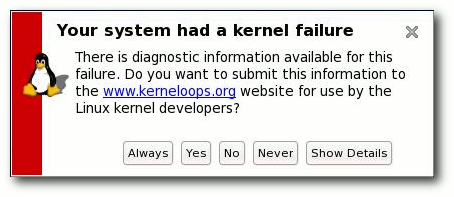

freiesMagazin Januar 2009 (ISSN 1867-7991)
Topthemen dieser Ausgabe
Das neue „Sonnensystem“ - Ein Blick auf OpenSolaris 2008.11
OpenSolaris-Releases erscheinen jedes halbe Jahr. Die aktuelle Version 2008.11 ist Nachfolger der Version 2008.05 vom Mai 2008. Unter der Motorhaube verbirgt sich Solaris-Technik, die im Vergleich zur Vorgängerversion deutlich erweitert und deren Anwenderfreundlichkeit verbessert wurde. In diesem Einführungsartikel werden die Hintergründe des neuen „Sonnensystems“ beleuchtet und ein Überblick über die „legendären“ Features gegeben, die es zu bieten hat. (weiterlesen)
Ubuntu 8.10 - Die neue Version „Intrepid Ibex“ vorgestellt
Nach der letzten Version 8.04 LTS vom April, die ja für mehrere Jahre unterstützt wird, waren von Ubuntu 8.10 „Intrepid Ibex“ wieder tiefgreifende Änderungen zu erwarten. Doch so groß sind die Unterschiede zum Vorgänger nicht ausgefallen, wie dieser Artikel zeigt. Die neue Version ist nach den Vorstellungen der Entwickler besonders auf die digitale Lebensweise mit fast überall verfügbarer Internetverbindung ausgerichtet. (weiterlesen)
Die zehnte Fedora-Ausgabe vorgestellt
Fedora 10 „Cambridge“ erschien am 25. November 2008, rund sechseinhalb Monate nach Fedora 9. Damit gab es eine kleine Verzögerung gegenüber dem geplanten halbjährlichen Veröffentlichungszyklus. Dieser Artikel versucht einen Eindruck von Fedora 10 mit Schwerpunkt auf den Neuerungen zu geben, mit denen die Distribution aufwartet. (weiterlesen)
Zum Index
Inhalt
NachrichtenDistributionen aktuell
Neues aus der Welt der Mobilgeräte
Songbird 1.0 erschienen
Oxite: Microsoft auf neuen Wegen
freiesMagazin-Umfrage gestartet
Nachrichtenschnippsel
Kernelrückblick
Free Software Foundation verklagt Cisco wegen GPL-Verletzung
Software
Installation und Einrichtung von Avant Window Navigator
Projektvorstellung Opera
Linux allgemein
Das neue „Sonnensystem“ - Ein Blick auf OpenSolaris 2008.11
Ubuntu 8.10 - Die neue Version „Intrepid Ibex“ vorgestellt
Die zehnte Fedora-Ausgabe vorgestellt
Veranstaltungen
Interna
Editorial
Leserbriefe
freiesMagazin-Index 2008
Konventionen
Vorschau
Impressum
Soweit nicht anders angegeben, stehen alle Artikel und Beiträge in freiesMagazin unter der GNU-Lizenz für freie Dokumentation (FDL). Das Copyright liegt beim jeweiligen Autor. freiesMagazin unterliegt als Gesamtwerk ebenso der GNU-Lizenz für freie Dokumentation (FDL) mit Ausnahme von Beiträgen, die unter einer anderen Lizenz hierin veröffentlicht werden. Das Copyright liegt bei Eva Drud. Es wird die Erlaubnis gewährt, das Werk/die Werke (ohne unveränderliche Abschnitte, ohne vordere und ohne hintere Umschlagtexte) unter den Bestimmungen der GNU Free Documentation License, Version 1.2 oder jeder späteren Version, veröffentlicht von der Free Software Foundation, zu kopieren, zu verteilen und/oder zu modifizieren. Die xkcd-Comics stehen separat unter der Creative Commons-Lizenz CC-BY-NC 2.5. Das Copyright liegt bei Randall Munroe. Die in freiesMagazin verwendeten Marken sind Eigentum ihrer jeweiligen Besitzer. Insbesondere für die Distributionslogos gelten folgende Hinweise: Das Debian-Logo unterliegt dem Copyright der Software in the Public Interest. Das FreeBSD-Logo ist eine Marke der FreeBSD Foundation. Das Sabayon4-Logo wurde von Ian Whyman erstellt und unterliegt der „CreativeCommons-Attribution-ShareAlike-2.5“-Lizenz. Das openSUSE-Logo ist eine eingetragene Marke von Novell, Inc. Das Ubuntu-Logo ist eine Marke von Canonical Ltd. Das bedeutet auch, dass diese Logos nicht der GNU Free Documentation License unterliegen, wie der restliche Inhalt des Magazins.
Zum Index
Editorial
Liebe Leserin, lieber Leser! Rückblende: Vor einem Jahr befand sich freiesMagazin noch im Umbruch. Durch den Umzug auf einen eigenen Server im September 2007, der anfänglich dem Ansturm nicht gewachsen war, schwankten die Downloadzahlen extrem. Im Laufe des letzten Jahres hat man aber eine gewisse Tendenz erkennen können, die mich froh dem Jahr 2009 entgegenblicken lässt. Wie man der Downloadstatistik unten entnehmen kann, hatten wir im ersten Monat nach der Veröffentlichung einer Ausgabe immer um die 10.000 Leser. Auf das Jahr und alle - auch die alten - PDF-Ausgaben gerechnet macht das eine Gesamtzahl von über 200.000 freiesMagazin-Lesern im Jahr 2008. Ich kann nur „Wow“ sagen und mich im Namen der freiesMagazin-Redaktion bei allen Lesern bedanken.freiesMagazin-Downloadstatistik 2008 (orange = PDF, grau = HTML)
Aber was wäre eine Magazin ohne Autoren? Richtig, ziemlich leer. Neben den vier regulären Newsschreibern konnten 39 freie Autoren in freiesMagazin etwas beitragen und haben zusammen 103 Artikel und 70 Nachrichten geschrieben. Auch das ist eine Leistung, für die ich mich recht herzlich bedanken will. Weitere Auswirkungen dieser Tendenz ist auch die Magazinfülle, die Monat für Monat zunahm und sich aktuell bei ca. 50 Seiten pro Ausgabe eingependelt hat. Und obwohl die vorliegende Ausgabe aufgrund des Weihnachtsfestes etwas schlanker ausfallen sollte, können wir Ihnen mit einer kleinen Distributionssonderausgabe sicherlich eine kleine Freude bereiten. Von den in den letzten Monaten vier großen Veröffentlichungen (Ubuntu 8.10 im Oktober, Fedora 10 im November sowie OpenSolaris 2008.11 und openSUSE 11.1 im Dezember) finden Sie drei ausführliche Reviews und Berichte über die neuen Versionen im Heft. Es ist sicher für jeden Linux-Nutzer etwas Interessantes dabei. Damit diese positive Tendenz weiter anhält, freuen wir uns natürlich immer über neue Autoren, die ihre Lieblingsanwendung oder einfach ein interessantes Thema rund um Linux und/oder Open Source vorstellen wollen. Wenn Sie eine Idee haben, schreiben Sie uns einfach unter
| D. Wagenführ |
Leserbriefe
Für Leserbriefe steht unsere E-MailadresseÜbersetzung von Artikeln
Gleich zu Anfang möchte ich gerne ein Wort des Lobes loswerden. Mir gefällt die Idee einer freien Lektüre, die via PDF empfangen werden kann und monatlich erscheint. Die Ausgaben sind sehr gut, informativ und sehr gut recherchiert.Zum einen habe ich noch eine Frage. Ich bin Mitglied des Marketing-Teams von openSUSE, im speziellen einer der Herausgeber der openSUSE-Wochenschau (Link). Wäre es möglich, wenn mir ein Artikel gefällt, diesen in Englisch zu übersetzen und in der Wochenschau unterzubringen?
Der letzte Punkt ist eine Idee. Momentan empfange ich Euren Feed via RSS. Das problematische bei einem monatlichen Magazin ist die Aktualität. Manchmal baut man Artikel ein, die zum Veröffentlichungsdatum schon veraltet sind. Deswegen wäre meine Idee, dass Ihr parallel zum bisherigen RSS-Programm (Announce des neuen Magazins), Links mit aufnehmt, mit kurzer Aktualität. Sascha Manns freiesMagazin: Erst einmal vielen Dank für Ihr Lob! Natürlich ist es grundsätzlich nicht nur möglich, sondern wir würden uns darüber auch freuen, wenn Sie den einen oder anderen Artikel übersetzen und in der openSUSE-Wochenschau veröffentlichen wollen - sofern dies mit den Bedingungen der GNU Free Documentation License harmoniert. Die GFDL ist die Lizenz der Wahl für in freiesMagazin veröffentlichte Artikel.
Zu Ihrem letzen Punkt: freiesMagazin versteht sich nicht als Nachrichtenportal. Insofern besteht für uns das Problem topaktueller Berichterstattung so nicht. Über Neuigkeiten, sofern erwähnenswert, berichten wir in einer zusammenfassenden Rückschau im Heft.
Arch Linux auf dem Asus Eee PC 901
Tolle Sache, allerdings, ganz wichtig: # pacman -Sy bash ncurses readlineSonst gibt es: „/bin/bash: error while loading shared libraries: libncurses.so.5: cannot open shared object file: no such file or directory INIT: Entering runlevel: 3“. Sonst toller Artikel, überhaupt tolles Magazin! :-) Ralf Weber M. Angermann: Diese Pakete sollten eigentlich beim „base install“ mit installiert werden. Wenn man das Core-Image benutzt (wie im Artikel beschrieben), sind die Pakete dort enthalten. Als ich die neue Ausgabe von freiesMagazin gelesen habe, ist mir der besagte Artikel sofort ins Auge gefallen, weil ich mich als Einsteiger immer vor der Installation von Arch gescheut habe. Leider musste ich feststellen, dass er sehr lückenhaft ist. So kann das System nicht wie beschrieben das erste Mal gebootet werden, weil noch kein Bootloader installiert ist, und die zusätzlichen Pakete müssen erst von einem USB-Stick installiert werden, weil der Eee PC noch kein Ethernet hat. Schade, denn ein fortgeschrittener User braucht diese Anleitung sowieso nicht. David P. M. Angermann: Ich gebe zu, dass ich nicht jeden einzelnen Punkt im Installationssetup beschrieben habe, sonst wäre der Artikel deutlich länger geworden. Wenn man aber das Setup Schritt für Schritt durchgeht, kommt man zu dem Punkt „Install Bootloader“ (noch vor „Reboot System“). An dieser Stelle wird GRUB installiert, wahlweise in den MBR oder die Bootpartition. Hier gibt das Installationsprogramm auch noch mal die Möglichkeit die Datei /boot/grub/menu.lst zu editieren, falls man ein Multibootsystem einrichten oder weitere Kernel eintragen will (wie später im Artikel beschrieben). Ohne diesen Punkt macht der Rechner nach dem Reboot gar nichts. An dieser Stelle habe ich vorrausgesetzt, dass man den Installer Punkt für Punkt durchgeht.
Das Problem mit dem nicht funktionierenden Ethernet ist bekannt und auch im Artikel erwähnt, weshalb man
- das Core-Image verwenden sollte, weil da ein komplettes Basissystem drauf ist, und
- aus dem Installer nicht auf das Ethernet zugreifen kann, sondern erst nach erfolgreichem Neustart mit dem dann installierten Kernel.
Anrede in freiesMagazin
Erstmal möchte ich Euch für das freiesMagazin danken - da ist was sehr Feines entstanden. Ich lese immer wieder mit Freude rein. Besonders die LATEX-Themen sagen mir zu. Eine Anregung hätte ich aber doch: In allen Antworten auf Leserbriefe nutzt Ihr ein etwas förmliches „Sie“ als Anrede. Das machen zwar auch alle anderen (nicht-freien) Magazine so, aber mir scheint ein „Du“ angemessener. Meint Ihr nicht, man könnte z. B. an einem Linux-Stammtisch oder auf dem Linux-Tag fast das komplette Publikum duzen? Alex Eberspächer freiesMagazin: Vielen Dank für Ihre lobenden Worte. Wir haben uns in punkto Anrede auch unsere Gedanken gemacht und sind zu eben dieser Vereinbarung gekommen. Nicht jeder fühlt sich mit dem „Du“ angemessen angesprochen, manch einer vielleicht sogar auf den sprichwörtlichen Fuß getreten. Insofern betrachten wir die Anrede mit „Sie“ schlicht als höflicher - auch wenn sie etwas förmlich ausfällt.LATEX-Quellcode
Ich bin gerade dabei, mich in LATEX einzuarbeiten. Daher würde mich der Quelltext der aktuellen Ausgabe brennend interessieren, einfach um mal zu sehen, wie man so ein Projekt professionell in LATEX umsetzen kann. Ist es möglich, diesen zu erhalten? K. Till freiesMagazin: Aufgrund der Datenmenge und des Aufwands veröffentlichen wir den kompletten Quelltext jeder Ausgabe nicht, sondern beschränken uns auf die Vorlagen und eine kleine Beispieldatei, die man auf der Magazinseite (Link) herunterladen und unter der GFDL weiterbenutzen kann. Bei Interesse senden wir auf Anfrage aber natürlich auch gerne den kompletten Quellcode einer freiesMagazin-Ausgabe zu, sodass man sich das Magazin daheim selbst kompilieren kann.Orca in openSUSE
Anders als im Artikel erwähnt ist Orca ebenfalls bei openSUSE vorinstalliert. Hier sollte in Zukunft besser recherchiert werden. Gast (Kommentar) freiesMagazin: Vielen Dank für Ihre Kritik. Wir haben sie an die Autorin Michaela Freudenfeld weitergeleitet.CaCert-Hinweise bei den Anwendertreffen
Ich lese Euer Magazin sehr gerne und freue mich auch immer wieder die Termine meine LUG Veranstaltungen (LUG Ottobrunn) dort zu finden. Eine Erweiterung würde ich noch gerne zu der Tabelle vorschlagen wollen. Vielleicht wäre es noch möglich, eine Spalte zu ergänzen, die beinhaltet, bei welcher Veranstaltung CaCert-Assurer (Link) Vorort sind, um sich Punkte zu holen. Michael Weiller freiesMagazin: Vielen Dank für Ihr Lob und Ihre Idee. Wir werden uns Ihren Vorschlag näher anschauen, es bleibt aber abzuwarten, ob wir Ihre Anregung in freiesMagazin umsetzen können. Schließlich bedeutet das Heraussuchen und Pflegen dieser Information schon einen Mehraufwand an Arbeit für ein Freiwilligenprojekt wie unseres.Lob
Lese gerade die aktuelle Ausgabe. Und ich muss sagen: Wow! Da habt Ihr mal wieder einen super Job gemacht. Gut gesetzt, klasse Themen und gut geschrieben. Mehr davon! Robert (Kommentar) Also, da sich bis jetzt noch niemand erbarmt hat, muss ich jetzt mal einen Kommentar loswerden: Die aktuelle Ausgabe finde ich sehr gelungen. ;) Und die Artikel des Themenschwerpunktes „Barrierefreiheit/Barrierearmut“ durch die Bank weg interessant. Matze (Kommentar) freiesMagazin: Vielen Dank für das Lob. Es freut uns, dass die Ausgabe so gut angekommen ist. Das Thema „Barrierefreiheit/Barrierearmut“ ist definitiv wichtig, aber eben auch kein spezielles Linux-Thema. Daher ist es schön zu sehen, dass das „Experiment“ geglückt ist. Bin über yeebase hype! (Link) hier gelandet und wirklich froh über diese neue Entdeckung. Mehr von Eee PC, bitte! Robert (Kommentar) freiesMagazin: Wir geben unser Bestes, zur Zeit stehen aber leider keine weiteren Artikel zum Asus Eee PC oder einem anderen Netbook an. Hier sind wir auf weitere Autoren und Besitzer eines solchen Gerätes angewiesen, die sich gerne unterfreiesMagazin-Umfrage
Hab mich mal an der Umfrage beteiligt. Schön, dass euch die Leser und deren Meinung interessieren. Weiter so. stfischr (Kommentar) Schöne Umfrage, allerdings im Mittelteil etwas langatmig, weil die Frage, wie ich die Qualität von so eng gefassten Rubriken einschätze, keine ist, mit der ich mich schonmal befasst hätte. Ich nehme ferner an, dass mir schlechte Artikel, die älter als ein Jahr sind, schon wieder entfallen sind. Mir ist zwar klar, was Ihr mit diesem Frageteil wissen wolltet, bezweifle aber, dass die Ergebnisse sehr belastbar werden.Nun denn, muss ja nicht unterhaltsam sein so eine Umfrage. Ich hoffe natürlich auf einen Auswertungsartikel, denn das eine oder andere Ergebnis wird wahrscheinlich sehr interessant. adun (Kommentar) Ein bisschen zu umfangreich finde ich ist die Umfrage. Da verliert man schnell die Lust, die auszufüllen. Sorry, dass ich das sage. Gast (Kommentar) Nach dem vierten oder fünften Mal „Wie finden sie $EIGENSCHAFT der Artikel“ hab ich’s abgebrochen. Gast (Kommentar) freiesMagazin: Sie müssen sich für Ihre Kritik nicht entschuldigen. Dass die Umfrage so umfangreich geworden ist, war anfangs gar nicht geplant, hat sich im Laufe der Erstellung aber so ergeben. Man sieht daran bis jetzt auch schon eine gewisse Tendenz, was die Leser über einige Themen denken und was sie sich wünschen. Einen Antwortartikel wird es natürlich - voraussichtlich im März - geben. Schade ist aber, dass sehr viele Leute die Umfrage nicht beendet haben. Wir werden aber daraus lernen und das nächste Mal den Umfang stärker einschränken. Warum habt Ihr immer nach der Meinung zu den Leserbriefen gefragt? Normalerweise interessiert es nur einen, nämlich derjenige, der ihn geschrieben hat. Aber es gehört einfach zum Service zu zeigen, dass Ihr auf jeden eingeht, was ich bei Euch wirklich gut finde, und deswegen es schade wäre, wenn diese rausfliegen würde, weil es keinen interessiert. Adrian Böhmichen freiesMagazin: Unsere Umfrage zeigt da bisher ein anderes Bild, es gibt viele Leser (ca. 40 %), die die Leserbriefe meistens oder immer lesen. Natürlich ist das im Gesamten ein geringer Prozentsatz, aber wenn wir alles rausschmeißen würden, was weniger als 30 % unserer Leser interessiert, hätten wir wohl kein Magazin mehr. ;) Und die Umfrage gibt es uns nur Hinweise. An einigen Stellen sieht man aber eine klare Tendenz, wo wir nachbessern sollten. Links
- http://de.opensuse.org/OpenSUSE-Wochenschau
- http://www.freiesmagazin.de/extras\#latex
- http://www.cacert.org/
- http://hype.yeebase.com/
Distributionen aktuell
Es gab letzten Monat viele neue Versionen der verschiedensten Linux-Distributionen. Der Artikel soll die Neuigkeiten kurz zusammenfassen.BSDanywhere
Mit BSDanywhere in Version 4.4 wurde eine neue Live-CD auf Basis von OpenBSD veröffentlicht, die Enlightenment E17 als Desktopmanager einsetzt. Änderungen seit Version 4.3 vom Oktober gab es wenige: Aufgrund Platzmangels wurden einige Anwendungen wie Gimp, Abiword oder Audacious von der CD entfernt, dafür aber Systemsoftware wie dnstop und dnstracer hinzugefügt. Die Besonderheit ist das neue Artwork in BSDanywhere von Tim Saueressig (Link).Debian
Mit Version 4.0r6 hat das Debian-Projekt die Version 4.0 „Etch“ ein sechstes Update verpasst. Wie üblich enthält das Paket viele Bugfixes und Ausbesserungen von Sicherheitslücken. Aktuelle Images mit den enthaltenen Bugfixes wird es später auf den Debian-Servern geben (Link). Das Debian-Projekt hat sich entschieden, Programme, die unter der Affero-GPL (AGPL) in Version 3 veröffentlicht werden, auch in den „main“-Zweig einfließen zu lassen. Da die Distribution Debian durch selbst auferlegte Regeln (Link) sehr enge Richtlinien hat, was unter den Begriff Freie Software fällt und damit in den Repositories landet, ist der Entschluss ein großer Schritt nach vorn. Die AGPL ist so besonders, da sie der GPL entspricht, aber den Zusatz enthält, dass auch der Quellcode von Webdiensten verfügbar gemacht werden muss, wenn dieser der AGPL unterliegt. Dies ist bei der GPL nicht der Fall (Link). Die selbst auferlegten Regeln führen auch bei fast jedem Release für Unstimmigkeiten in der Debian-Entwicklergemeinde. Mit einer Abstimmung sollte im Dezember geklärt werden, ob die Veröffentlichung von Debian 5.0 „Lenny“ wegen Probleme mit unfreien Treibern verschoben werden sollte. Das Resultat war neben einigen sehr persönlichen Wortgefechten, dass der langjährige Sekretär des Debian-Projekts, Manoj Srivastava, zurückgetreten ist. Inzwischen ist die Abstimmung vorbei und ein Großteil der Entwickler hat sich dafür entschieden, Lenny so schnell wie möglich zu veröffentlichen (Link).FreeBSD
Der erste und zweite Release Candidate des bald kommenden FreeBSD 7.1 ist erschienen. Die Tester werden dieses Mal gebeten, ihre Augen vor allem auf den Bootloader zu richten, bei dem es in Verbindung mit USB-Tastaturen und Mehrprozessor-Systemen noch Probleme zu geben scheint. Aufgrund einer Änderung im Intel-Treiber werden einige Intel-Netzwerkkarten als „igb“ und nicht mehr als „em“ erkannt, was mitunter bei angepassten Konfigurationsdateien zu Problemen führen kann. ISO-Images gibt es wie immer für die Architekturen amd64, i386, ia64, pc98, powerpc und sparc64 (Link).Linux Mint
Mit Linux Mint 6 „Felicia“ hat das Entwicklerteam eine neue Version auf Basis von Ubuntu 8.10 herausgegeben, die Kernel 2.6.27, GNOME 2.24 und X.org 7.4 mitbringt. Mit dem neuen Software-Manager mintInstall 5 kann man den Inhalt des Linux Mint Software Portals (Link) durchsuchen und Software daraus installieren. Auch der Update-Manager mintUpdate 3 wurde fehlerbereinigt und bietet eine History der installierten und aktualisierten Pakete an und mit mintUpload 2 kann man nun sehr einfach Dateien auf einen eigenen FTP-Server hochladen. Wenn ein Windows-Nutzer Linux Mint kennenlernen will, steht mint4win bereit, ein Windows-Installer, der beim Einlegen der Mint-CD unter Windows startet. Ganz neu ist die „Universal Edition“ als Live-DVD, die zahlreiche Sprachen - darunter auch Deutsch - an Bord hat und so eine lokalisierte Version zum Testen bereitstellt (Link).Mandriva
Distributionen auf USB-Sticks zu installieren und diese umherzutragen ist derzeit sehr beliebt. Mandriva nutzt diese Anforderung und verkauft mit „Mandriva Flash“ die Distribution auf einem 8 GB großen USB-Stick. Das System kann man wie eine Live-CD starten und benutzen. Die Zugriffszeiten liegen dabei aber deutlich unter einer CD. Ein weiterer Vorteil ist, dass eigene Dateien persistent auf dem USB-Stick gespeichert werden können, wofür etwas Speicherplatz gelassen wurde, da das System von den 8 GB nur einen Teil benötigt. Mandriva Flash 2009 ist für 44 Euro im Mandriva-Online-Shop erhältlich (Link). Daneben wurde die erste Alphaversion von Mandriva Linux 2009 Spring veröffentlicht. Darin wurden die Hauptkomponenten wie KDE 4.2 Beta 2, GNOME 2.25.2, Xfce 4.6 Beta 2, X-Server 1.5 und Kernel 2.6.28-rc8 integriert. Zur Zeit ist nur die DVD „Free Edition“ erhältlich, die keine prorietären Komponenten enthält. Die Live-CD „One“ mit unfreien Treibern soll in späteren Veröffentlichungen folgen (Link).openSUSE
Von openSUSE 10.2 müssen alle Anwender, die diese Version noch einsetzen, nun Abschied nehmen, da die Unterstützung mit Sicherheitsupdates Anfang Dezember aufhörte. Allen Nutzern wird geraten auf eine aktualisierte Version von openSUSE zu wechseln (Link). Zum Beispiel können diese Anwender die am 18. Dezember erschienene neue Version openSUSE 11.1 installieren. Neben zahlreichen Updates wie zum Beispiel Kernel 2.6.27.7, KDE 4.1.3 oder GNOME 2.24.1 ist die größte Neuerung sicherlich die komplett freie openSUSE-DVD. Proprietäre und nicht-freie Komponenten, wie z. B. der MP3-Codec oder der Adobe-Flash-Player, liegen nicht mehr auf der DVD vor und müssen separat nachbezogen werden. Für wichtige Komponenten wie die oben genannten soll dies aber einfach gehen. openSUSE gibt es als Installations-DVD und Live-CD mit GNOME und KDE4 für x86-, x64- und PowerPC-Systeme (Link). Pünktlich zur Veröffentlichung der Finalversion 11.1 wurde auch das neue Contrib-Repository (Link) freigegeben, in dem man ab sofort Pakete von Drittanbietern findet, die von der openSUSE-Community gepflegt werden. Es kommen nur bestimmte Pakete in das neue Repository, die einen bestimmten Qualitätstandard erfüllen und durch einen Maintainer (Paketbetreuer) aktuell gehalten werden. Contrib ist damit das Bindeglied zum Factory-Repository, in dem man die von Novell unterstützten Pakete findet (Link).PC-BSD
Von PC-BSD 7 wurde das zweite kleinere Update veröffentlicht und mitgebracht werden einige Fehlerbehebungen und Änderungen. So wurde das neueste KDE 4.1.3 eingespielt, die Leistung von nVidia-Grafikkarten und auch von NTFS verbessert und es werden mehr Soundkarten erkannt und unterstützt (Link).PCLinuxOS
Anfang Dezember ist die zweite Beta-Version von PCLinuxOS 2009 erschienen. Zum Repertoire der Distribution gehören Linux-Kernel 2.6.26.8, KDE 3.5.10, OpenOffice.org 2.4.1, Firefox 3.0.4 und vieles mehr. Wie man an den Dateiversionen sieht, hat man sich entschieden, auf lang entwickelte Software zu setzen und nicht die neueste Version des Kernels oder KDE4 und OpenOffice.org 3.0 zu integrieren. Wer die Beta-Version testen will, sollte sie nicht als Arbeitssystem einsetzen, da ein Upgrade auf die finale Version 2009 nicht möglich ist (Link).Sabayon
Das Sabayon-Projekt hat Version 4.0 ihres Gentoo-Derivats veröffentlicht; mitgeliefert werden auch proprietäre Programme (Google Earth, Picasa, Adobe Flash 10) und Treiber (ATI und Nvidia). Als Desktopumgebung wird KDE 3.5.10 und GNOME 2.24 eingesetzt; KDE 4.1.3 ist in den Paketquellen über den Paketmanager Entropy vorhanden (Link).sidux
sidux hat die Finalversion von 2008-04 „Pontos“ freigegeben, die sich vorrangig mit der Integration der Kernelversion 2.6.27 und einer Überarbeitung des Installers beschäftigt. Zusätzlich wird nun „insserv“ benutzt, um die Initskripte während des Bootvorgangs zu ordnen und zu optimieren, sodass die Startzeiten kürzer ausfallen. Zum Download stehen die Versionen KDE-lite (jeweils amd64 und i686), KDE-full, (amd64 und i686 zusammen) und Xfce-lite (jeweils amd64 und i686) bereit (Link).SimplyMEPIS
Mit der sechsten Beta-Version und dem ersten Release Candidate nähert sich SimplyMEPIS 8.0 langsam dem Entwicklungsende. Der Kernel wurde in dieser Version auf 2.6.27.10 aktualisiert und einige Treiber hinzugefügt. Daneben wurde Adobe Flash in der neuesten Version 10.0 integriert und einige Anwendungen aktualisiert (Link). ISO-Dateien stehen für 32-Bit- und 64-Bit-Rechner zum Download bereit. Ziel war es die finale Version bis Ende letzten Jahres zu veröffentlichen, der Termin wird sich aber nun um ein paar Tage verschieben (Link).Slackware
Von Slackware ist letzten Monat die finale Version 12.2 erschienen, die als „kleines Update“ keine größeren Veränderungen mitbringt. So soll mit den ganz großen Neuerungen, wie die Integration von KDE4, bis Version 13.0 gewartet werden. Slackware 12.2. bringt Kernel 2.6.27.7 und X.org 7.3 mit, als Desktopumgebungen stehen Xfce 4.4.3 und KDE 3.5.10 zur Verfügung. Durch den neuen Kernel gibt es einige Leistungsverbesserungen und natürlich wurden auch zahlreiche Pakete aktualisiert (Link).Ubuntu
Von Ubuntu 9.04 „Jaunty Jackalope“, welches im April 2009 erscheinen soll, wurde die zweite Alpha-Version veröffentlicht. Neuerungen gibt es nur wenige, so wurde ein Kernel auf Basis von 2.6.28-rc8 eingespielt und der neueste X-Server 1.6 übernommen. Der Letztere macht aber noch Probleme in Verbindung mit den proprietären Grafiktreibern von ATI und Nvidia (Link).Ubuntu-Derivate
Mit Eeebuntu 8.10 (Link) wurde ein inoffizielles Ubuntu-Derivat veröffentlicht, welches auf Asus Eee PCs abgestimmt ist und alle Treiber für das Gerät mitbringt. Die drei Editionen „Standard“ (Standard-Desktop mit Firefox, OpenOffice.org etc.), „NBR“ (Standard-Edition mit Ubuntu-Netbook-Remix-Oberfläche) und „Based“ (abgespeckte Version) stehen ab sofort zum Download bereit (Link). Wie lange Eeebuntu aber noch diesen Namen tragen wird, ist unklar, schaut man sich die Entwicklung von Ubuntu Eee (Link) an. Aufgrund einer Mail des Canonical-Trademark-Teams (Link) und auch weil man die Netbook-Distribution auf anderen Geräte als den Asus Eee PC anbieten will, entschloss man sich die Distribution umzubenennen (Link). Herausgekommen ist der - etwas merkwürdige - Name „Easy Peasy“ (Link). Zusätzlich gab es einen Logo-Wettbewerb - der leider nur fünf Tage andauerte - bei dem man einen Eee PC gewinnen konnte (Link). Die nächste Version von Easy Peasy soll es bereits im Januar geben. Wichtiger Hinweis: Alpha- und Beta-Versionen sind nicht für den täglichen Einsatz, sondern nur für Entwickler und Tester gedacht! (dwa) Links- http://bsdanywhere.org/node/40
- http://www.pro-linux.de/news/2008/13612.html
- http://www.debian.org/social_contract\#guidelines
- http://www.linux-magazin.de/news/debian_nimmt_agpl_software_in_main_paketsammlung_auf
- http://www.pro-linux.de/news/2008/13636.html
- http://distrowatch.com/?newsid=05262
- http://linuxmint.com/software/
- http://www.linuxmint.com/blog/?p=492
- http://www.pro-linux.de/news/2008/13587.html
- http://www.pro-linux.de/news/2008/13623.html
- http://www.heise.de/open/news/meldung/120513
- http://www.heise.de/open/artikel/120597
- http://download.opensuse.org/repositories/openSUSE:/Factory:/Contrib/
- http://www.linux-magazin.de/news/opensuse_contrib_repository_fuer_software_von_drittanbietern
- http://www.pcbsd.org/content/view/92/
- http://distrowatch.com/?newsid=05221
- http://www.linux-magazin.de/news/multimedial_sabayon_4_0
- http://www.linux-magazin.de/news/debian_derivat_sidux_in_neuer_version
- http://www.mepis.org/node/14205
- http://www.mepis.org/node/14207
- http://www.slackware.com/announce/12.2.php
- http://ikhaya.ubuntuusers.de/2008/12/20/ubuntu-9.04-jaunty-jackalope-:-alpha-2-erschienen/
- http://eeebuntu.org/
- http://eeepc.itrunsonlinux.com/the-news/1-latest-news/232-eeebuntu-810-released
- http://www.ubuntu-eee.com/
- http://www.jonramvi.com/mail-from-canonical/
- http://www.jonramvi.com/re-branding-ubuntu-eee-please-help/
- http://www.jonramvi.com/ubuntu-eees-new-name/
- http://www.jonramvi.com/submit-a-logo-win-an-asus-eee-easy-peasy/
Neues aus der Welt der Mobilgeräte
Netbooks, UMPCs und MIDs
Die früher für ihre Monitore bekannte Firma Belinea wurde reaktiviert und bringt das Netbook Belinea o.Book 1 xs auf den Markt. Intern findet man die Standardkomponenten: Intel-Atom-CPU mit 1,6 GHz, 1 GB RAM, 160 GB Festplatte, WLAN und ein 10-Zoll-Display mit 1024x600 Pixel. Das Netbook wird für 350 Euro mit Ubuntu 8.10 angeboten, mit Windows XP kostet es 20 Euro Aufpreis (Link). Bereits im Oktober (siehe „Neues aus der Welt der Mobilgeräte“, freiesMagazin 11/2008 (Link)) hat Dell sein neues übergroßes Netbook mit 12-Zoll-Display vorgestellt. Damals gab es das Gerät nur mit Windows Vista, inzwischen kann man es auch mit Ubuntu 8.04 bestellen. Das Netbook „Inspiron Mini 12“ besitzt eine Intel-Atom-CPU der Z-Serie mit 1,33 GHz, 1 GB Arbeitsspeicher, 40 GB Festplatte, Bluetooth, WLAN und das bereits erwähnte 12,1-Zoll-WXGA-Display mit 1.280x800 Pixeln. Das Netbook ist auf der Dell-Seite (Link) für 429 Euro erhältlich (Link).Das Dell Inspiron Mini 12. © pittaya (CC-BY)
Ebenfalls im Oktober wurde angekündigt, dass das Ideapad S10e von Lenovo in den deutschen Handel kommen soll. Nun ist das Gerät neben dem Ideapad S9e mit Suse Linux Enterprise Desktop 10 erhältlich. Die technischen Daten umfassen wie gewohnt einen Intel-Atom-Prozessor mit 1,6 GHz, 1,5 GB RAM und 4 GB Solid-State-Disk oder einer 80-GB- bzw. 160-GB-Festplatte. Das Display des Ideapad S10e misst 10,1 Zoll bei 1024x576 Bildpunkten, das Display des Ideapad S9e hat eine Größe von 8,9 Zoll bei 1024x600 Pixeln. Die Besonderheit an dem Gerät ist die Splashtop-Technologie, über die man ein integriertes Linux starten kann, über welches man dann Zugriff auf Web, Chat und E-Mail hat. Je nach Konfiguration sind die Geräte ab 300 Euro erhältlich (Link).
Das neue Lenovo IdeaPad S10e. © Masaru Kamikura (CC-BY-NC)
Das Linux-Nachrichtenportal Pro-Linux hat zwei Netbooks in die Hände gekriegt und auch gleich getestet. Es handelt sich dabei um das schon länger erhältliche Datacask Jupiter 1014a mit einem von Klaus Knopper angepasstes Knoppix (Link) und um das Acer Aspire One A150L mit Linpus Linux Lite (Link).
Mobiltelefone
Nach den USA (mit dem HTC G1) und China (mit dem i6-Goal) bekommt nun auch Australien sein eigenes Android-Mobiltelefon. Die australische Firma Kogan Technologies will ab Ende Januar die Smartphones „Agora“ und „Agora Pro“ auf Basis von Google Android veröffentlichen. beide Modelle haben einen 2,5-Zoll-Touchscreen, eine Tastatur, Bluetooth, 3G-Internet und einen MicroSD-Slot. Das Agora Pro bringt zusätzlich WLAN, GPS und eine 2-Megapixel-Kamera mit. Die Kogan-Telefone können weltweit eingesetzt werden und sind für 399 Australische Dollar (etwas mehr als 200 Euro) erhältlich (Link).Andere Hardware
Asus hat aus seiner Eee-Familie eine erweiterte Version der Eee Box angekündigt, die vor allem fürs Heimkino gedacht ist. Die Modelle B204 und B206 haben einen Intel-Atom-N270-Prozessor mit 1,6 GHz integriert und verbrauchen nur 20 Watt. Da die Geräte nun einen ATI-Radeon-HD3400-Grafikchip verbaut haben, wird auch die volle HD-Auflösung 1080p (1280x720 Pixel) unterstützt. Die Festplatte wurde gegenüber der Vorgängerbox auf das Doppelte erweitert und fasst nun 160 GB an Daten. Dazu gibt es 1 GB RAM, WLAN, Gigabit-Ethernet, Kartenleser, vier USB-Anschlüsse und natürlich einen S/PDIF-Ausgang. Die Eee Box wird derzeit nur mit Windows ausgeliefert, die Distribution Boxee (Link), basierend auf dem XMBC Media Center (Link), soll zwar gut dafür geeignet sein (Link), stößt aber auf Kritik bei den Lizenzbestimmungen (Link). Von MSI kommen drei neue Desktop-PC-Modelle, die auf den Atom-Chip von Intel setzen. Zum einen gibt es zwei Neton-Modelle mit 16- oder 19-Zoll-Display bei 1366x768 Pixeln, 2 GB RAM und 160 GB Festplatte. Die Besonderheit des 19-Zoll-Neton ist, dass der Bildschirm gleichzeitig als Touchscreen fungiert. Zum anderen hat MSI die Wind Netbox vorgestellt, ein Display Attached Device (DAD), welches zur Montage an einem TFT-Monitor geeignet ist und 1 GB RAM und 120 GB Festplatte mitbringt. Auf allen drei Rechnern kann Windows XP, Windows Vista oder Suse Linux Enterprise Desktop installiert werden. Preislich liegen die Neton-Desktops bei 500 bzw. 600 Euro, die Netbox kostet ca. 270 Euro (Link). Bereits letzten Monat gab es Probleme bei der Herstellung der Open-Source-Spielekonsole Pandora (Link). Diese verschärften sich nochmal, da finanzielle Probleme auf das OpenPandora-Projekt zukamen. Zum einen froren einige Banken die Überweisungen ein und auch Paypal fordert laut AGB eine Auslieferung nach 20 Tagen, welche nicht gehalten werden können. Das Projekt muss daraufhin alle getätigten Zahlungen zurück überweisen, was aber Dank des steigenden Dollarkurses zu einem Geldverlust bei den Kunden führte. Die Rücküberweisungen sind aber nach über einem Monat immer noch nicht angelaufen (Link). Bis zur Auslieferung wird es aber sowieso noch etwas dauern, denn auch das auf den Konsolen installierte Angström Linux wurde erst Mitte Dezember portiert und muss noch weiter angepasst werden. Ingesamt steht das Projekt auf sehr wackeligen Beinen. Wann und ob je eine Pandora-Konsole ausgeliefert wird, ist unklar (Link).
Die Pandora-Spielekonsole hat Probleme.
© Dekuwa (CC-BY-NC-SA 2.0)
Die PDF-Softwarefirma Foxit hat einen eBook-Reader namens „Foxit eSlick“ vorgestellt. Das Gerät hat ein 6-Zoll-Display mit 600x800 Pixeln und nutzt zur Anzeige E Inks Vizplex. Per USB kann man Daten auf den internen 128-MB-Speicher übertragen, der aber über eine SD-Karte bis 4 GB erweitert werden kann. Das eSlick kann auch als MP3-Player benutzt werden, Kopfhörer werden mitgeliefert. Als Betriebssystem kommt ein Embedded Linux zum Einsatz. Das Gerät soll ab Januar 2009 für ca. 260 US-Dollar erhältlich sein (Link).
Software
Phoronix haben erneut ein paar Atom-Tests mit den Distributionen Ubuntu 8.10, Fedora 10, Mandriva 2009.0 und openSUSE 11.1 RC1 veröffentlicht, die die Ergebnisse von September, als sich die Versionen noch im Beta-Status befanden, aktualisieren sollen. Gegebenenfalls ist der Test mit dem Release Candidate von openSUSE nicht ganz auf Augenhöhe, denn die Distribution schneidet in fast allen Bereichen viel schlechter ab als die Konkurrenz. Normalerweise ändert sich zwischen Finalversion und Release Candidate wenig, aber unter Umständen optimieren die openSUSE-Entwickler die Distribution noch etwas. Gewinner des Tests ist Ubuntu 8.10, das bei fast allen Benchmarks an erster Stelle liegt (Link). In einer ausführlichen Anleitung (Link) hat Peter McDermot, CEO der Firma NthCode, dargestellt, wie man Googles Android-System auf das Nokia N810 übertragen kann. Neben Tipps, auf was man bei der Portierung zu achten hat, wird auch angegeben, welche Veränderungen Google im Android-Kernel gegenüber dem herkömmlichen Linux-Kernel vorgenommen hat. Darauf basierend wird erklärt, wie man diese Änderungen in den Kernel 2.6.25 einspielt, bestimmte Android-Patches hinzufügt und das Ganze auf das N810 überträgt (Link).Googles Android gibt es nun auch für das Nokia N810. © KhE (CC-BY)
Google hat auch das Android SDK Release 2 veröffentlicht. Mit dem Software Development Kit können Entwickler Anwendungen für die Android-Plattform programmieren. Um den Entwicklern die Arbeit zu erleichtern, bietet Google zusätzlich ein eigenes Android Dev Phone 1 an, welches baugleich zum kürzlich vorgestellten HTC G1 ist und für 399 US-Dollar (mit Versand etc. sind das 469 Euro für deutsche Entwickler) bezogen werden kann (Link). Eine weitere Plattform für Smartphones ist das Maemo SDK, welches als Pre-Alpha von Version 5 „Fremantle“ veröffentlicht wurde. Das System basiert auf Linux und wird zum Beispiel auf Geräten wie Nokias N810 (siehe oben) eingesetzt. Mit Maemo 5.0 gibt es erstmals hardware-beschleunigte Grafik durch einen OMAP3-Prozessor von Texas Instruments und Unterstützung für HD-Kameras. Die frühe Alphaversion ist nur zu Testzwecken und nicht zur richtigen Entwicklung gedacht, vor allem da noch einige Hauptkomponenten fehlen (Link). Für das OpenMoko Neo Freerunner wurde eine neue Debian-basierende Distribution namens „Hackable:1“ erstellt, die es vor allem für Wiederverkäufer leichter machen soll, das Gerät den Wünschen ihrer Kunden anzupassen. Das System benutzt GNOME Mobile als Oberfläche und zusätzliche Programme werden als deb-Pakete ausgeliefert und können so leicht installiert werden. Bisher wurde das ganze OM2007.2-Paket gepackt und findet auf einer 2-GB-SD-Karte Platz (Link). Zum Schluss hat Andreas Constantinou von VisonMobile eine sehr gute Zusammenfassung der Open-Source-Entwicklung der letzten Jahre für Software auf Mobilgeräten verfasst. Die Daten reichen dabei von Intels Moblin-Projekt zu Nokias Open-Source-Symbian-Plänen und natürlich auch zu Googles Android-System. Daneben stellt er die einzelnen Komponenten eines Open-Source-Mobilsystems vor, wer dahinter steckt und wie die Software lizenziert wird (Link). (dwa) Links
- http://www.linux-magazin.de/news/10_zoll_netbook_von_belinea_mit_linux
- http://www.freiesmagazin.de/freiesMagazin-2008-11
- http://www1.euro.dell.com/content/products/productdetails.aspx/laptop-inspiron-12?c=de&cs=dedhs1&l=de&s=dhs
- http://www.linux-magazin.de/news/notebook_dell_inspiron_mini_12_mit_ubuntu
- http://www.linux-magazin.de/news/lenovo_ideapads_netbooks_mit_suse
- http://www.pro-linux.de/news/2008/13582.html
- http://www.pro-linux.de/news/2008/13588.html
- http://www.pro-linux.de/news/2008/13546.html
- http://www.boxee.tv/
- http://xbmc.org/
- http://www.linuxdevices.com/news/NS7213775758.html
- http://meandubuntu.wordpress.com/2008/12/21/boxee-you-are-not-open/
- http://www.linux-magazin.de/news/drei_atom_rechner_mit_linux_von_msi
- http://www.freiesmagazin.de/freiesMagazin-2008-12
- http://www.gp32x.com/board/index.php?showtopic=45767
- http://www.heise.de/open/Die-Woche-Trubel-um-Pandora--/artikel/120679
- http://www.linuxdevices.com/news/NS8442724020.html
- http://www.phoronix.com/scan.php?page=article&item=intel_atom_four&num=1
- http://linuxdevices.com/articles/AT2892720865.html
- http://www.linuxdevices.com/news/NS3641439368.html
- http://www.heise.de/open/news/meldung/120082
- http://www.linuxdevices.com/news/NS8970449647.html
- http://www.linuxdevices.com/news/NS8495134030.html
- http://www.visionmobile.com/blog/2008/12/mapping-open-source-into-mobile-who-where-and-how/
Songbird 1.0 erschienen
Am 03. Dezember 2009 veröffentlichte die Firma „Pioneers of the Inevitable“ (Link) den freien Musikbrowser Songbird in Version 1.0. Mit dieser Version versprechen sich die Entwickler der GPL-lizenzierten Software vor allem Perfomanzsteigerungen und ein Surplus an Funktionen und Features. Songbird basiert dabei auf dem Video Lan Client (VLC), Mozillas XML User Interface Language (XUL) und gstreamer als freiem Multimedia-Framework. Hinter Songbird steht die 2006 gegründete Firma Pioneers of the Inevitable. Die Entwicklergruppe der Software stellt sich aus Personen zusammen, die zuvor an Winamp, der Yahoo! Music Jukebox, am Netscape Navigator und an Mozilla Firefox beteiligt waren. Finanziert wird das Unternehmen unter anderem von Sequoia Capital (Link) und Atlas Venture (Link). Zwei Ziele verfolgt das Projekt: einerseits einen freien Musikplayer zu erstellen, der weitgehend plattformunabhängig läuft (zurzeit Linux, Mac und Windows) und andererseits auch die neuen Optionen des „Web 2.0“ zu integrieren - was unter anderem durch eine offene API (Link) unterstützt wird. Der Songbirdnutzer bekommt dazu in der Hauptsache zwei Komponenten in die Hand. Einmal die Möglichkeit, parallel zum Musikhören durch den integrierten Browser schon im Web nach weiteren Informationen zur gehörten Musik zu suchen, und ein anderes Mal die Option, den Songbird durch verschiedene Add-ons (vergleichbar zu denen des Firefox) mit weiteren Funktionen zu versehen. So bietet bspw. die Erweiterung „mashTape“ Optionen, die gehörte Musik durch Videos von YouTube, Bilder von flickr, Biographien der Musiker bei last.fm etc. anzureichern. Das Featureset des Mediabrowsers zeigt sich umfangreich vom Albumsupport über Smart Playlists bis hin zur Integration des Shoutcast Music Directory. Einen Überblick liefert die Featureseite des Projektes (Link). Haperte es in älteren Versionen noch mit der Performance der Datenbanken, so versprechen die Entwickler mit Version 1.0 Leistungssteigerungen um den Faktor 10 bei kleinen Musikbibliotheken und um Faktor 1000 (!) bei den großen. Insgesamt bringt die neue Version viele Bugfixes und Verbesserungen mit (Link). Zurzeit unterstützte Medienformate sind Mp3, Ogg Vorbis und Flac auf allen Plattformen, WMA und WMA DRM unter Windows sowie AAC und Fairplay auf Mac und Windows. Songbird 1.0 steht auf den Webseites des Projekts (Link) zum Herunterladen bereit. (tsc) Links- http://getsongbird.com/about/
- http://www.sequoiacap.com/
- http://www.atlasventure.com/
- http://wiki.songbirdnest.com/Developer/Developer_Intro/Webpage_API
- http://getsongbird.com/features/
- http://blog.songbirdnest.com/2008/12/02/songbird-10-is-here/
- http://getsongbird.com/
Oxite: Microsoft auf neuen Wegen
Der Redmonder Riese veröffentlicht seine neue Blogsoftware „Oxite“ in der Alphaversion als Open-Source-Projekt. Wie zdnet (Link) berichtet, betont Microsoft dabei seine Absicht, die Software nicht als Konkurrenz zu anderen Softwareprodukten rund ums Thema Blogs und Co. entwickelt zu haben, sondern um die Aufmerksamkeit der Entwickler zu erlangen. Wie Oxite-Projektkoordinator Erik Porter in einem Diskussionsbeitrag schreibt: „We have no plans to make this anything but a really good developer sample that should be able to run any site you want [...] That said, this is a community project now and, if the community decides to take it a different direction, we won't stop it“ (Link). Oxite soll sich also in den Händen einer Community entwickeln. Microsoft stellt den Quelltext deshalb auf dem Community-Portal CodePlex (Link) zum Download zur Verfügung und veröffentlichte selbigen unter der hauseigenen Microsoft Public License. Die Lizenz ist OSI-zertifiziert (Link) und wird auch seitens der FSF als GPL-kompatible Lizenz anerkannt (Link). Folgt man zdnet weiter, soll Microsoft mit Oxite dabei ein standardkonformes, erweiterbares Contentmanagementsystem (CMS) entwickelt haben, das als Lösung für Blogs wie auch für größere Webseiten nutzbar sein soll. Funktionen wie Pingbacks, Trackbacks, anonymes oder authentifiziertes Kommentieren, Gravatare und RSS-Feeds stehen über die gesamten Seiten hinweg zur Verfügung (Link). Für einen ersten Draufblick auf Oxite lohnt sich der Besuch der Seite Mix Online (Link). Microsoft stellte der Seite Oxite vorab zur Verfügung, um gleichzeitig erste Erfahrung mit dem System sammeln zu können und um diese Erfahrungen an die Entwickler weiterzugeben. Mix Online ist die Online-Community zu Microsofts Mix Webentwicklerkonferenz. (tsc) Links- http://www.zdnetasia.com/news/software/0,39044164,62049158,00.htm
- http://www.codeplex.com/oxite/Thread/View.aspx?ThreadId=41812
- http://www.codeplex.com/oxite/Release/ProjectReleases.aspx?ReleaseId=20210
- http://www.opensource.org/licenses/ms-pl.html
- http://www.fsf.org/licensing/licenses/index_html\#GPLCompatibleLicense
- http://visitmix.com/Lab/Oxite
- http://visitmix.com/
freiesMagazin-Umfrage gestartet
Damit freiesMagazin auch in Zukunft weiterhin gute und vor allem interessante Berichte für Sie bereithalten kann, sind wir an Ihrer Meinung interessiert. Aus diesem Grund haben wir eine Umfrage (Link) gestartet, die uns zeigen soll, wie gut bestimmte Themengebiete ankommen, damit wir sehen, ob wir uns auf dem richtigen Weg befinden oder vielleicht irgendwo einmal falsch abgebogen sind. Alle Leser von freiesMagazin sind gebeten an der Umfrage teilzunehmen, die ca. 15 Minuten Ihrer Zeit in Anspruch nimmt. Persönliche Daten werden dabei nicht gespeichert, akzeptierte Cookies und aktiviertes JavaScript wird aber vorausgesetzt. Die Umfrage läuft voraussichtlich bis Ende Januar, sodass wir im Februar die Auswertung vornehmen und dann in der Märzausgabe von freiesMagazin die Ergebnisse in schönen Diagrammen präsentieren können. Bei extrem hoher Beteiligung wird die Dauer aber gegebenenfalls verlängert. (dwa) LinksZum Index
Nachrichtenschnippsel
Neues Open-Source-Verzeichnis
Die yeebase media solutions, die auch das Magazin T3N herausbringt, hat ein neues Open-Source-Verzeichnis mit dem passenden Namen „open source“ (Link) online gestellt. In dem Verzeichnis findet man viele ausgewählte Open-Source-Programme, die kategorisiert und bewertet wurden. Die Rangfolge ergibt sich dabei aus der Häufigkeit der Verlinkung und Erwähnung im Web und zu einem kleinen Teil aus den Nutzerbewertungen (Link).Myst Online wird Open Source
Myst ist eine mehr oder weniger gute Adventure-Reihe, die stark auf schöne vorgerenderte Bilder setzt, durch die man sich bewegen kann. Ein Ableger der Reihe war „Myst Online“ (Link), welches im April 2008 wegen ausbleibenden Erfolges eingestellt wurde. Entwicklerstudio Cyan Worlds, die die Rechte an dem Spiel gekauft haben, beschreiten daher neue Wege und wollen sowohl Server- und Client- als auch Tool-Quellcode als Open Source veröffentlichen. Dadurch wollen sie die eigenen Entwicklerressourcen schonen, das Spiel aber nicht sterben lassen (Link).Googles Native Client nutzt CPU-Rechenleistung
Ein neues Forschungsprojekt von Google namens Native Client soll es Webanwendungen erlauben, Code direkt im Prozessor auszuführen, wodurch das Programm ungemein beschleunigt werden könnte. Das Verfahren soll unabhängig von Browser und Betriebssystem sein, vor allem die Sicherheit zu gewährleisten ist dabei aber eine große Herausforderung (Link). Sollte Google die Entwicklung gelingen, hätten sie mit ihrem Browser Chrome und Webanwendungen wie Google Docs, Google Picasa etc. ein fast fertiges Betriebssystem, das nur über den Browser abläuft. Und es wird auch sicherlich Kritiker geben, die davor warnen, der Datenkrake Google nun auch noch Vollzugriff auf den lokalen PC zu geben.Karte der Debian-Abhängigkeiten
Über das neue gnowledge network (Link) kann man eine Wissenskarte erstellen, die Abhängigkeiten grafisch darstellt. Dabei werden nicht nur direkte Abhängigkeiten gelistet, sondern auch indirekte. Gut veranschaulicht haben die Entwickler das Ganze an einer Debian-Paketsuche, mit der man sieht, welches Paket von anderen abhängt. Das System kann in Lehre und Forschung verwendet werden, um ein Assoziationsmodell zu erstellen. Die Datenbank der Begriffe und Verknüpfungen wird durch die Gemeinschaft erstellt. Das Netzwerk selbst und alle auf der Webseite erstellten Karten unterliegen der GNU Free Documentation License (Link). (dwa)Abhängigkeiten des Debian-Paketes build-essential. © gnowledge network (GFDL)
Links
- http://opensource.yeebase.com/
- http://www.pro-linux.de/news/2008/13585.html
- http://www.mystonline.com/
- http://www.golem.de/0812/64154.html
- http://www.pro-linux.de/news/2008/13564.html
- http://www.gnowledge.org/
- http://www.heise.de/open/news/meldung/120645
Kernel-Rückblick
Gute Wünsche erhält man zu Weihnachten viele, der Linux-Gemeinde gratulierte Linus Torvalds persönlich und er beließ es auch nicht einfach nur bei Worten sondern gab gleich noch den Kernel 2.6.28 frei - sozusagen als Weihnachtsausgabe (Link). Der neue Kernel bietet wieder einige bemerkenswerte Neuerungen, darunter zum Beispiel das Dateisystem Ext4 (Link), das nun als ausreichend stabil angesehen wird und daher für dem produktiven Einsatz genutzt werden kann. Es dürfte jedoch noch eine Zeitlang den Anwendern vorbehalten bleiben, die vor Handarbeit nicht zurückschrecken, da zwar die E2fsprogs (Link) ab Version 1.41.3 die notwendigen Komponenten zur Nutzung von Ext4 mitbringen, die gängigsten Distributionen jedoch keine Unterstützung zum Booten von Ext4-Partitionen bieten oder grafische Werkzeuge für den Umgang damit zur Verfügung stellen. Mit (GEM) Graphics Execution Manager (Link) möchte man dadurch, dass das Management des Grafikspeichers von den Treiber weg verlagert wird, diese entlasten und die Leistung verbessern. Auch die Verwaltung des Caches beim Zugriff mehrerer Grafikprozessoren soll hier weiterhelfen. Weiterhin soll GEM die Basis für Verbesserungen am Grafik-Stack werden um Funktionen wie Kernel-Modesetting, womit ein Bootvorgang ohne Bildschirmflackern wäre, oder DRI2 (Direct Rendering Infrastructure 2) (Link) zu ermöglichen. Derzeit arbeitet der von Intel-Entwicklern hervorgebrachte GEM nur mit dem i915-Treiber zusammen, die Unterstützung weiterer Treiber ist jedoch schon in Arbeit. Ebenfalls durch Intel initiiert ist die Unterstützung für UWB (Ultra Wide Band) (Link), einer Technologie zur drahtlosen Datenübertragung, die sich durch eine große Bandbreite bei geringen Leistung auszeichnet und die Basis des Wireless-USB-Standards (Link) ist. Dessen Verbreitung ist noch nicht besonders hoch, womit dies eher als Investition in die Zukunft anzusehen ist. Vielleicht lässt die frühzeitige Umsetzung dieses Standards für den Linux-Kernel ja auf die Intentionen Intels für USB 3.0 (Link) schließen? Schutz für Notebook-Festplatten bietet die neue Funktion Disk Shock Protection, die das ATA/ATAPI-7-Kommando „IDLE IMMEDIATE“ umsetzt. Registrieren die in vielen Notebook-Festplatten bereits verfügbaren Beschleunigungssensoren ein Herunterfallen, Vibrationen oder Ähnliches, so werden die Schreib-/Leseköpfe der Festplatten in eine Parkposition gefahren, um das Aufschlagen auf die empfindlichen Speicherplatten und damit die Zerstörung der gesamten Festplatte zu verhindern. Tief im Inneren des neuen Kernels steht ein Boot Tracer bereit, der Entwicklern bei der Optimierung des Bootvorgangs behilflich sein soll, indem der Bootvorgang aufgezeichnet und Zeitpunkt sowie Dauer von Init-Aufrufen grafisch dargestellt werden können. Ebenfalls für den Anwender nicht zu sehen sind Verbesserungen in der Skalierbarkeit der Speicherverwaltung (Link), die insbesondere bei Rechnern mit sehr viel Arbeitsspeicher Vorteile bringen, und eine neue Funktion zur Bündelung von gleichartigen Anfragen an die CPU (IO CPU affinity), womit eine ressourcenschonendere Prozessornutzung ermöglicht wird. Dem Atheros-Treiber ath5k hat man nun Unterstützung für vermaschte Netzwerke spendiert und ihn für den AR2417v2-Chip fit gemacht, ath9k lässt sich nun für Access Points einsetzen. Intels iwlwifi-Treiber versteht sich nun auf die Nutzung von drei Antennen. Der V4L/DVB-Treiber wurde um Unterstützung für mehr Geräte ergänzt. Daneben stehen noch eine ganze Reihe an neuen Treibern zur Verfügung, deren Auflistung (Link) den Rahmen hier allerdings sprengen würde. Eine sehr ausführliche deutschsprachige Übersicht über die Neuerungen ist auf heise open (Link) zu finden. (mme) Links- http://lkml.org/lkml/2008/12/24/105
- http://de.wikipedia.org/wiki/Ext4
- http://e2fsprogs.sourceforge.net/
- http://lwn.net/Articles/283798/
- http://www.x.org/wiki/DRI2
- http://de.wikipedia.org/wiki/Ultrabreitband
- http://de.wikipedia.org/wiki/Wireless_USB
- http://de.wikipedia.org/wiki/Universal_Serial_Bus\#USB_3.0
- http://lwn.net/Articles/286472/
- http://kernelnewbies.org/Linux_2_6_28
- http://www.heise.de/open/artikel/120725/0
Free Software Foundation verklagt Cisco wegen GPL-Verletzung
Im Dezember machte die Free Software Foundation (FSF) (Link) auf sich aufmerksam, als sie dem Netzwerkkonzern Cisco zur Last legte, verschiedene Programme unter der GNU General Public License veröffentlicht zu haben, ohne dabei den Quellcode freizugeben, wie es die GPL-Lizenz vorschreibt. Das Software Freedom Law Center, welches die FSF in diesem Rechtsfall vertritt, bezieht sich in seiner Anklage (Link) auf dreizehn unter der Marke „Linksys“ vertriebene Netzwerkprodukte, die folgende GPL- bzw. LGPL-lizenzierte Anwendungen beinhalten: GNU C Library, GNU Coreutils, GNU Readline, GNU Parted, GNU Wget, GNU Compiler Collection, GNU Binutils und GNU Debugger. Die verwendeten Lizenzen gewähren Veränderung sowie Verbreitung, allerdings allein unter der Vorraussetzung, dass auch der modifizierte Quellcode offengelegt wird. Laut Geschäftsführer der Free Software Foundation Peter Brown handele es sich bei der Klage gegen Cisco um ein Novum, da es bei vergangenen Verstößen gegen die Lizenzbedingungen stets zu einer außergerichtlichen Einigung gekommen sei. Brett Smith, seines Zeichens Licensing Compliance Engineer bei der FSF, erklärte weiterhin in der offiziellen Stellungnahme (Link), dass man bereits 2003 damit begonnen habe, die Cisco bei der vorschriftsmäßigen Nutzung der GPL-Lizenz zu unterstützen. Jedoch seien die nötigen Maßnahmen auf Seiten des amerikanischen Netzwerkunternehmens ausgeblieben und der Gang vor Gericht sei nun der beste Weg, um die Lizenzverletzung aufzuheben. Wie das Nachrichtenportal InternetNews berichtet (Link), seien die Verantwortlichen von Cisco enttäuscht über die Klage der gemeinnützigen Organisation. Man nehme die Pflichten und die Verantwortung, die die Nutzung freier Software mit sich bringt, ernst und werde die Klagepunkte prüfen. Das Unternehmen geht davon aus, sich im Wesentlichen lizenzkonform verhalten zu haben und hofft aufgrund der bisher engen Zusammenarbeit mit der Free Software Foundation auf eine angemessene Lösung für beide Parteien. Der Anklage gegen Cisco vorausgegangen war eine Meldung der zur FSF gehörigen Freedom Task Force, die in Zukunft bei der Bekämpfung von Lizenzverstößen mit GPL-Violations.org kooperieren möchte. Als erstes Ergebnis der neuen Partnerschaft präsentierte das Projekt eine englischsprachige Anleitung (Link) zur Meldung von GPL-Verletzungen. Darin finden sich neben Hinweisen, welche Details über einen Lizenzverstoß angegeben werden sollten, auch Mittel zur Prävention und Adressen, an die man sich wenden kann. (awe) Links- http://www.fsfeurope.org/
- http://www.softwarefreedom.org/news/2008/dec/11/fsf-cisco-complaint.pdf
- http://www.fsf.org/news/2008-12-cisco-suit
- http://www.internetnews.com/storage/article.php/3790721/Cisco+Hit+With+Open+Source+Lawsuit.htm
- http://www.fsfeurope.org/projects/ftf/reporting-fixing-violations.en.html
Installation und Einrichtung von Avant Window Navigator
übersetzt von Dominik WagenführMit dem Avant Window Navigator (AWN) (Link) kann man seiner Distribution etwas „Eye-Candy“ über eine Mac OS X-ähnliche animierte Leiste am unteren Bildschirmrand geben. Der Artikel soll erklären, wie man AWN installiert sowie Applets und Programmstarter hinzufügt. Als Voraussetzung benötigt man eine Composite-fähige Distribution (siehe die Voraussetzungen im AWN-Wiki (Link)). Hinweis: Dieser Artikel ist eine Übersetzung des erstmals bei Tombuntu erschienenen Artikels „Installing and Setting Up Avant Window Navigator“ (Link) von Vivek Kumar von TNerd.com (Link), einem Blog mit Technik-Tipps und Linux-Anleitungen.
Installation
Der Einfachheit halber sollte man AWN aus dem Repository der eigenen Distribution installieren. Laut Angaben (Link) existieren fertige Binärpakete für Arch Linux, Debian, Fedora, Gentoo, Mandriva, openSUSE und Ubuntu. Das zu installierende Paket heißt avant-window-navigator. Zusätzlich empfiehlt es sich noch die Applet-Pakete- awn-applets-python-extras
- awn-applets-c-extras
Konfiguration
Um AWN starten zu können, muss zwingend ein Composite-Manager wie Compiz Fusion installiert und aktiviert sein. Ist dies der Fall, wählt man „Anwendungen » Zubehör » Avant Window Navigator“ aus und sieht am unteren Bildschirm eine Leiste mit den Icons aller offenen Anwendungen (hier nur AWN):Die AWN-Leiste mit einem Icon.
Da das etwas langweilig aussieht, soll die Leiste etwas verschönert werden.
Applets hinzufügen
Um AWN zu konfigurieren, wählt man entweder das AWN-Manager-Icon in der AWN-Leiste aus oder führt, falls letzteres zum Beispiel nicht zu sehen ist, per Alt + F2 manuell den „awn-manager“ aus.Applets wurden hinzugefügt.
Die allgemeinen Einstellungen sind größtenteils selbsterklärend. Im Reiter „Applets“ kann man neue Applets hinzufügen. Wenn man zum Beispiel das Wetter-, Terminal-, Cairo- und Orte-Applet hinzufügt, sieht das Ergebnis in etwa wie im Bild oben aus.
Leistenaussehen ändern
Die Standardleiste von AWN ist flach, wie man oben sieht. Allein die Aktivierung des 3-D-Aussehens sorgt für einiges an „Eye-Candy“. Dazu wählt man im AWN-Manager unter „General“ den Reiter „Taskleisten Design“ und stellt bei „Look“ von „Flat bar“ auf „3D look“ um. Das sieht dann so aus:Der 3-D-Effekt der AWN-Leiste.
Programmstarter hinzufügen
Als Beispiel soll ein Firefox-Programmstarter hinzugefügt werden. Dazu wählt man im AWN-Manager den Punkt „Launchers“ und klickt auf „Hinzufügen“. Im erscheinenden Dialog gibt man Folgendes ein:- Name: Firefox Browser
- Beschreibung: Mozilla Firefox
- Befehl: firefox
Themes einstellen
Zum Schluss kann man auch noch das AWN-Theme ändern, welches das Aussehen der Leiste bestimmt. Entweder sucht man im Internet nach geeigneten Themes oder schaut gleich auf der Seite Queer Visions (Link). Dort lädt man sich die Themes, die einem gefallen, einfach herunter. Danach geht man im AWN-Manager auf den Punkt „Themes“ und klickt auf „Hinzufügen“.Mit Themes lässt sich die AWN-Leiste noch besser anpassen.
Nachdem man alle Themes hinzugefügt hat, wählt man in der Spalte „Select“ das gewünschte aus und klickt rechts auf „Anwenden“, um das Ergebnis betrachten zu können.
Fazit
Wenn man mit den ganzen Einstellungen, Themes, Applets und Programmstartern herumspielt, kann man sich mittels des Avant Window Navigator eine Startleiste zusammenstellen, die den Desktop ungemein verschönert.Die fertige AWN-Leiste des Autors.
Links
- https://launchpad.net/awn
- http://wiki.awn-project.org/Installation\#Prerequisites
- http://tombuntu.com/index.php/2008/11/11/installing-and-setting-up-avant-window-navigator/
- http://tnerd.com/
- http://wiki.awn-project.org/Installation
- http://wiki.ubuntuusers.de/Avant_Window_Navigator
- http://www.queervisions.com/arch/2007/10/awn_avantwindow.html
Projektvorstellung Opera
von Michael BergmannDer Browser Opera wird von der norwegischen Firma Opera Software ASA herausgegeben und wurde Ende 1996 der Öffentlichkeit in Version 2.0 vorgestellt. Seitdem ist viel Zeit vergangen und vor einigen Wochen wurde die Version 9.60 freigegeben. Zeit, um sich die Entwicklung genauer anzuschauen.
Einleitung
Dass der Browser trotz seiner vielen pfiffigen Funktionen und seiner jahrelangen Verfügbarkeit nur ein Nischendasein fristet, hat sicherlich verschiedene Gründe. Einer der Hauptgründe dürfte wohl die Tatsache sein, dass Opera erst seit 2005 Freeware ist und davor Geld kostete. Unter Linux werden sicherlich viele Benutzer einen Bogen um ihn machen, ohne ihn auch nur einmal getestet zu haben, da Opera Closed Source ist. Was aber tun, wenn Firefox nicht gefällt oder einem das Geschäftsgebaren von Mozilla immer unsympathischer wird? Es gibt zwar eine Menge verfügbarer Browser unter Linux, aber kaum einer ist ein vollwertiger Ersatz für Firefox, und richtige Alternativen sind eher rar gesäht. Also die besten Voraussetzungen, um Opera der Allgemeinheit durch eine Projektvorstellung ein bisschen näher zu bringen. Eines vorweg, wer mit dem Gedanken spielt, sich von Firefox und Co. zu trennen, egal aus welchen Gründen auch immer, der sollte genug Zeit einplanen, um Opera kennen zu lernen, denn der Browser macht erst richtig Spaß, wenn er den individuellen Wünschen angepasst wurde, und das dauert bei der Masse an Funktionen etwas.Die Opera-Webseite begrüßt einen mit Informationen zum neuesten Spross.
Aber warum Opera nutzen, wenn doch Firefox schon vorinstalliert ist, der auch noch durch die vielen Addons erweitert werden kann und zudem auch noch Open Source ist? Es ist sicherlich Geschmackssache, welcher Browser zum täglichen Surfen benutzt wird. Für Opera spricht auf jeden Fall, dass er wesentlich performanter als Firefox ist, der sich zu einem recht klobigen Browser ohne nennenswerte Funktionen in der Grundausstattung entwickelt hat. Des Weiteren stellen die Addons in Firefox bei jedem Versionssprung eine Hürde da, da diese oftmals nicht mehr laufen und es teils Wochen dauert, bis ein Update erhältlich ist. Ferner stellen diese Addons sogar ein gewisses Sicherheitsrisiko dar, da es keine Kontrollinstanz gibt, die die Inhalte der Addons überprüft. Letztendlich liefert Mozilla selber immer mehr Gründe, um über einen Wechsel nachzudenken. Da Opera sehr viele Funktionen bietet, werden in diesem Artikel nur einige angerissen. Für spezielle Fragen hat sich das deutschsprachige Opera-Info.de-Forum (Link) sehr bewährt, es gibt dort auch ein eigenes Linux-Subforum. Auch im ubuntuusers-Wiki finden sich einige Artikel zu Opera, die die meisten Fragen beantworten (Link). Nach der Installation begrüßt Opera den Benutzer beim ersten Start mit der Startseite vom Opera-Portal, auf dem die aktuelle Version in Englisch kurz vorgestellt wird. Der neue Skin ab Version 9.50 ist sehr dunkel und schlicht gehalten, erinnert ein wenig an das neue dunkle Theme von Ubuntu 8.10 „Intrepid Ibex“. Wem dieses nicht gefällt, kann mit Shift + F12 ein anderes einstellen oder neue installieren. Auf Anhieb ist auch ein anderes Tab-Verhalten zu bemerken, das die Tabs in einer Liste anzeigt und nicht wie gewohnt die Tabs in der Tabliste wechselt. Wer lieber auf den gewohnten Ablauf umstellen möchte, der kann dies mit Strg + F12 und dann „Erweitert » Tabs einstellen » Wechseln ohne die Liste zu zeigen“ tun. Jedoch bleibt eine Besonderheit bestehen und zwar wenn Tabs geschlossen werden. Wie dieses Problem gelöst werden kann, wird noch weiter unten unter Shortcuts und Mausgesten gezeigt.
Der Content-Blocker
Nachdem die ersten Seiten angesurft wurden, wird schnell die ganze blinkende Werbung auffallen, die unter Firefox mit Adblock Plus niemals aufgetaucht ist. Allerdings hat Opera ein mehr als ebenbürtiges Äquivalent, welches nur nach der ersten Installation leider keinerlei Einträge aufweist und somit die ganze Werbung durchlässt. Glücklicherweise gibt es aber auch hier vorgefertigte Listen (Link). Falls trotzdem irgendwo doch noch Werbung stehen bleibt, kann der Adblocker mit einem Rechtsklick und „Inhalte blockieren“ aktiviert werden. Alle nichtfilterbaren Objekte werden ausgegraut, Bilder oder Flash hingegen sind anklickbar und können so entfernt werden. Allerdings ist diese Methode unter Umständen zu aggressiv und es werden auch gewollte Bilder geblockt. Gezielt einzelne Objekte können mit Shift + Klick darauf gelöscht werden. Natürlich können jederzeit diese Filter geändert oder gelöscht werden. Sehr hilfreich ist auch die Ansicht unter „Einzelheiten“, wo alle Einträge angezeigt werden, die auf der Seite für Filterungen verantwortlich sind. Overlay-Banner und sonstige Sachen, die dynamisch erzeugt werden, können auch sehr einfach über „Seitenspezifische Einstellungen“ entfernen werden, indem JavaScript für die spezielle Seite ausschaltet wird. Dort lassen sich auch Cookies erlauben, falls sie ansonsten überall blockiert werden. Die Einstellungen sind sehr vielfältig und sollten auf jeden Fall genauer angesehen werden. Nebenbei bemerkt kann die Werbefilterung natürlich auch mit BFilter (Link) erledigt werden, Opera funktioniert wunderbar damit. Neben dem bereits angesprochenen JavaScript und Cookies können aber auch noch Flash- oder GIF-Animationen global verboten, aber für einzelne Seiten jederzeit wieder aktiviert werden. Webseiten können aber auch den eigenen Wünschen angepasst werden, da Opera für jede Seite ein eigenes CSS-Stylesheet erlaubt. Auf diese Weise können ganze Bereiche umgestaltet oder unsichtbar geschaltet werden, sollte sie z. B. der Adblocker nicht löschen können.Schnellwahl
Die Schnellwahl öffnet sich immer, wenn ein leerer Tab geöffnet wird. Hier lassen sich bis zu neun Lieblingsseiten verewigen, die mit einem Vorschaubild angezeigt und durch Anklicken geöffnet werden können. Es geht aber auch noch etwas schneller mit den Tastenkürzeln Strg + 1 bis Strg + 9. Opera bietet die Möglichkeit, direkt mit dieser Schnellwahl zu starten oder aber die letzte Sitzung wieder herzustellen.Über die Schnellwahl erreicht man die Lieblingsseiten.
News-Feed
Opera besitzt neben einem Instant-Messaging-Clienten auch einen integrierten News-Feedreader, der mit Version 9.60 noch einmal etwas verbessert wurde. Wie in den meisten anderen Browsern reicht ein Klick auf das RSS-Feed-Icon, um einen Feed zu abonnieren. Opera zeigt vor dem Abonnieren allerdings noch eine Vorschau an, sodass der Inhalt vorher betrachtet werden kann. Mit einem weiterem Klick wird der Feed in die abonnierten Feeds aufgenommen. Unter „Feeds verwalten“ kann u. a. eingestellt werden, wie oft dieser am Tag abgeholt wird.Opera Mail
Der E-Mail-Client fügt sich reibungslos in Opera ein. Was schnell bemerkbar ist, wenn in einer Mail auf ein Link geklickt wird. Sofort öffnet sich ein neuer Tab im Vordergrund und die Seite wird geladen. Das geht sehr viel schneller und flüssiger als mit zwei separaten Programmen, wie z. B. Firefox und Thunderbird. Der Benutzer wird über neue Mails durch eine von unten reinscrollende Benachrichtigung informiert. Wurde diese Meldung verpasst oder abgeschaltet, so kann dennoch am Trayicon von Opera sofort gesehen werden, dass ungelesene Mails im Posteingangsordner liegen. Opera Mail verfügt über alle wesentlichen Funktionen. Erwähnenswert ist, dass es eine globale Ansicht für alle Konten gibt. Es gibt also nicht für jedes einzelne Konto einen eigenen Postein- oder Postausgang. Durch Anlegen eigener Filterregeln verliert niemand den Überblick und kann die Mails seinen Vorlieben nach in virtuellen Ordnern sortieren. Mails können auch Kategorien zugeordnet werden, über die wichtige Nachrichten schnell wiedergefunden werden können. Genauso einfach können mit nur einem Klick Nachrichten anzeigt werden, die bestimmte Dateianhänge haben. Spamgeplagte Nutzer werden sicherlich den lernfähigen Spamfilter schnell zu schätzen wissen. Größter Kritikpunkt an Opera Mail dürfte die fehlende Funktion zum automatischen Löschen alter Mails sein, dieses muss leider von Hand vorgenommen werden. Zudem bietet er nicht alle Funktionen die richtige E-Mail-Clienten teils aufweisen. Die Seitenleiste mit den E-Mails teilt sich übrigens Opera Mail mit dem Feed-Reader. So ist alles schnell erreichbar.Mausgesten und Tastenkürzel
Opera bietet von Haus aus die Möglichkeit, mit Tastenkürzeln und Mausgesten die Einstellungen den eigenen Vorlieben anzupassen. Erreicht werden diese Einstellungen über Strg + F12 und dann „Erweitert » Schnellzugriff“. Von hier aus können nahezu alle Funktionen einem Kürzel oder einer Mausgeste zugeordnet werden. Auf diese Weise lässt sich auch das bereits oben angesprochene Manko mit dem Tabs leicht beheben. Opera hat leider die Eigenart, wenn ein Tab geschlossen wird, nicht auf das nächste linke, sondern zum zuletzt geöffneten Tab zu springen. Mit einer Mausgeste oder einem Tastenkürzel kann aber auch dieses Problem umgangen werden. Einfach unter Mausgesten diese beiden Gesten einfügen:- „GestureDown, GestureLeft“ - „Close page & Switch to previous page“
- „GestureDown, GestureRight“ - „Close page & Switch to next page“
Nützliche Alltagsfunktionen
Auch im täglichen Gebrauch bietet Opera viele schöne Funktionen, die das Surfen vereinfachen. Mittels Doppelklick auf das Trayicon kann Opera versteckt Strg + H oder wieder sichtbar geschaltet werden. Auch gibt es einen ausgereiften Downloadmanager, der den Benutzer immer auf dem Laufendem über aktuelle Downloads hält. Dieser unterstützt auch das BitTorrent-Protokoll. Auf Wunsch öffnet sich eine Übersicht in einem neuen Tab oder ist auch jederzeit via Strg + Alt + T erreichbar. Unterbrechung und Wiederaufnahme wird natürlich unterstützt, fertige Downloads werden über die bereits bekannte, hereinscrollende Meldung bekannt gegeben. Eine weitere nützliche Hilfe ist das Notizensystem, so können von jeder Webseite interessante Texte markiert und als Notiz gespeichert werden, auch die aktuelle URL lässt sich so schnell über das Kontextmenü speichern. Der Verlauf, also die Seiten, die in der letzten Zeit besucht wurden, ist auch durchsuchbar. Allerdings geht das Konzept bei Opera ein wenig weiter als das bei anderen Browsern. Anstatt, dass nur die URL-Liste durchsucht werden kann, durchsucht Opera auch den Text der Webseite. Hat man z. B. in einem Forum kürzlich einen interessanten Thread gelesen und möchte diesen am nächsten Tag schnell wieder finden, weiß aber nur noch ein Schlagwort wie „Projektvorstellung“, so könnte dieser Thread damit sofort in der History gefunden werden. Sollte Opera während des Surfens abstürzen, so ist dies auch kein Beinbruch, da Opera diesen Fall beim nächsten Start erkennt und fragt, ob die vorherige Sitzung wieder hergestellt werden soll - allerdings ist auch dieses Verhalten fest einstellbar ohne Nachfrage. Auch gibt es seit Opera 9.50 eine Möglichkeit, verschiedene Opera-Installationen online zu synchronisieren. Wer keine Datenschutzbedenken hat, wird diese Funktion sicherlich mögen. Suchmaschinen lassen sich in Opera auch sehr leicht neu einrichten. Wurde eine interessante Suchmaschine entdeckt, braucht man nur das Suchfeld in der Webseite mit der rechten Maustaste anklicken und „Suche erstellen“ auswählen. Danach erscheint ein Dialog, in dem weitere Feinheiten eingestellt werden können und mit einem weiteren Klick wird die Suchmaschine der Suchleiste hinzugefügt, in der zukünftig bequem und schnell die neue Suchmaschine benutzt werden kann. Alternativ kann auch über ein Kürzel gesucht werden, welches in der Adressleiste vor dem Suchbegriff eingegeben wird. So kann z. B. mit „g Suchwort“ mit Google das Suchwort gesucht werden - die Kürzel sind frei definierbar. Einzelne Wörter lassen sich via Kontextmenü über Babelfish in verschiedene Sprachen übersetzen oder können in Wikipedia nachgeschlagen werden. Die dabei benutzten Dienste sind frei veränderbar, müssen allerdings über einen Texteditor manuell eingestellt werden. „Find as you Type“ - also der Textsuche innerhalb der aktuellen Webseite - kennt auch Opera, allerdings muss im Gegensatz zu Firefox eine Taste gedrückt werden, damit diese Funktion aktiviert wird. Nachdem . gedrückt wird, öffnet sich eine Suchbox und während des Tippens werden alle Vorkommen des Suchtextes in der Webseite gelb markiert. Die Rechtschreibung in eigenen Beiträgen prüft Opera über Aspell. Um eigene Texte damit zu überprüfen, reicht ein Klick auf „Rechtschreibprüfung“ im Kontextmenü. Wer ein wenig mehr Komfort möchte, kann sich auch OSpell (Link) installieren. Dieses integriert sich direkt in alle Textboxen und wird sichtbar, sobald eine den Fokus erhält. Die angezeigten Korrekturvorschläge werden allerdings online ermittelt. OSpell ist in JavaScript geschrieben und wird in Opera als User-JavaScript ausgeführt. User-JavaScripte sind JavaScripte mit erweiterten Rechten und Möglichkeiten. Bestehende Greasemonkeyskripte aus Firefox lassen sich oft direkt übernehmen oder benötigen nur eine geringe Anpassung, damit sie auch unter Opera laufen. Eine kleine Liste mit ausgewählten User-JavaScripten gibt es im Opera-Info.de-Forum (Link).
Die Rechtschreibprüfung in Opera.
Wechselwillige können auch sehr einfach die Lesezeichen ihres bisherigen Browsers in Opera importieren. Unterstützt werden Firefox/Netscape, Konqueror und Internet Explorer. Zu finden ist diese Funktion unter „Datei » Import - Export“. Ähnlich wie Firefox besitzt Opera auch eine Funktion names Fraud, die den Benutzer vor malware-verseuchten oder Phishing-Seiten schützen soll.
Opera in GNOME besser einbinden
Ein Problem von Opera ist, dass es in GNOME etwas altbacken aussieht. Dieses Problem entsteht durch die Verwendung des Toolkits Qt, welches bei KDE zum Einsatz kommt, aber auch dieses Manko lässt sich schnell beheben. Voraussetzung dafür ist allerdings, dass eine Opera-Version installiert wird, die mit Qt4 kompiliert wurde, mit den auch zum Download angebotenen Qt3-Versionen geht es leider nicht. Wenn Opera zukünftig mit einem zusätzlichem Parameter gestartet wird, gliedert es sich gleich viel besser in GNOME ein: opera -style cleanlooksDanach integriert sich Opera wesentlich besser in GNOME. Zukünftige Versionen werden sich Dank Qt 4.5 sogar komplett in GNOME integrieren, da die GTK-Engine benutzt wird. Auf der offiziellen Download-Seite (Link) von Opera gibt es leider nicht die Möglichkeit auszuwählen, welche Version man sich installieren möchte. Alle Versionen von Opera sind hingegen direkt auf dem FTP-Server (Link) beziehbar. Dort können auch die bereits angesprochenen Versionen bezogen werden, die mit Qt4 kompiliert wurden. Neben den hier genannten Funktionen gibt es noch eine Menge mehr zu entdecken. Eine gute Möglichkeit hierzu ist auch die deutschsprachige Hilfe im Browser. Links
- http://opera-info.de/forum/
- http://wiki.ubuntuusers.de/Opera
- http://opera-info.de/forum/thread.php?threadid=14012
- http://ikhaya.ubuntuusers.de/2008/06/04/projektvorstellung:-bfilter-ein-universeller-werbefilter
- http://opera.gt500.org/ospell/
- http://opera-info.de/forum/thread.php?threadid=8097
- http://www.opera.com/download/linux/
- ftp://ftp.opera.com/pub/opera/linux/
| Autoreninformation |
| Michael Bergmann ist Linux-Nutzer seit 2006 (speziell Ubuntu seit Dezember 2007) und nutzte Firefox seit Version 0.4 (unter dem Namen Phoenix). Aufgrund diverser Umstände, die auch mit Mozilla selbst zu tun hatten, testete er Ende 2007 verschiedene Browser und nutzt seit ca. einem Jahr Opera. |
Das neue „Sonnensystem“ - Ein Blick auf OpenSolaris 2008.11
von Carsten RohmannEine neue Version von OpenSolaris ist am 2. Dezember 2008 erschienen, sie trägt die nüchterne Versionsnummer 2008.11 und kommt in Form einer Live-CD und eines USB-Images. OpenSolaris-Releases erscheinen jedes halbe Jahr. Die aktuelle Version 2008.11 ist Nachfolger der Version 2008.05 vom Mai 2008. Als Desktop kommt GNOME 2.24 zum Einsatz, flankiert von gängigen Anwendungen wie Firefox 3, Evolution-Mail, Thunderbird und den unter Linux bekannten GNU-Tools sowie der Bash. Unter der Motorhaube verbirgt sich Solaris-Technik, die im Vergleich zur Vorgängerversion deutlich erweitert und deren Anwenderfreundlichkeit verbessert wurde. In diesem Einführungsartikel werden die Hintergründe des neuen „Sonnensystems“ beleuchtet, ein Überblick über die „legendären“ Features gegeben, die es zu bieten hat. Ferner wird die Lizenzproblematik unter die Lupe genommen und der Versuch einer vorläufigen Einschätzung dieses Betriebssystems aus der Perspektive eines Heimanwenders gewagt.
Am Anfang war Solaris
Solaris (Link) ist ein proprietäres, bekanntes Unix-Betriebssystem der Firma Sun Microsystems (Link). Die aktuelle Version ist Solaris 10. Der Quellcode von Solaris wurde Anfang 2005 schrittweise freigegeben. Dies war ein kompliziertes Verfahren und ein langer, zäher Weg. Warum? Weil Solaris z. B. Quellcode enthielt, der von Dritten geschrieben wurde und die Verträge dazu das Thema Open Sourcing nicht abdeckten. Dass Sun überhaupt Solaris zu Open Source machen konnte, ergab sich nicht zuletzt aus den eigenständigen Unix-Rechten, die Sun vor Jahren von Novell erworben hatte (daher ist Sun auch nicht von SCO abhängig). Das Klären der rechtlichen Situation einzelner Komponenten nahm viel Zeit in Anspruch - und endete öfter darin, dass Code deswegen neu geschrieben wurde. Im Mai 2007 wurde von Sun schließlich das Project Indiana (Link) gestartet, mit dem Ziel Solaris und Linux miteinander kompatibler zu machen. Das Ergebnis ist ein Betriebssystem in binärer Form: OpenSolaris (Link). Der OpenSolaris-Quellcode (Link) stellt den aktuellen Entwicklungsstand von Solaris dar (Link).Die Live-CD kann man direkt mit Vergrößerungsglas oder Screenreader starten.
Verwickelte Verhältnisse
OpenSolaris wird bisher nicht unter der von GNU/Linux bekannten General Public License (GPL) (Link) veröffentlicht, sondern es unterliegt einem Konstrukt miteinander kombinierter und verschränkter anderer Lizenzen. Deren wichtigste, da sie den größten Teil des Quellcodes betrifft, ist die Common Development and Distribution License (CDDL) (Link). Die CDDL ist eine von der Open Source Initiative (OSI) (Link) und der Free Software Foundation (FSF) (Link) bestätigte freie Lizenz (Link), die sich jedoch von der GPL unterscheidet und mit ihr nicht völlig kompatibel ist. Die GPL ist eine restriktivere Lizenz als die CDDL. Nähere Ausführungen dazu erfolgen weiter unten im Kapitel „Die Lizenzproblematik“.Aufbruch Richtung Linux
Die Leitung des Project Indiana übernahm im Mai 2007 kein geringerer als Ian Murdock, der Gründer des bekannten Debian GNU/Linux-Projektes, der seit März 2007 für Sun arbeitet. Die Firma hat sich damit ein prominentes „Zugpferd“ aus der Linux-Szene an Land geholt. Für ihn wurde extra eine neue Position im Unternehmen geschaffen, die des Chief Operating Platforms Officer. Seine Aufgabe ist es seitdem, die Solaris- und Linux-Aktivitäten von Sun zu koordinieren und strategisch neu auszurichten (Link). Ian Murdock blieb jedoch weiterhin bei der Linux Foundation (Link) und dort der Leiter der Linux Standard Base (LSB) (Link), an der er seine Arbeit fortsetzen konnte. In diesem Video (Link) und in seinem Weblog (Link) (Blog aktuell nicht erreichbar) kann man mehr über ihn und seine Arbeit erfahren.Vom Feinsten: Technische Raffinessen
Doch nun zur Technik. OpenSolaris 2008.11 wird viel gelobt für das neue Dateisystem ZFS, seine Boot-Environment-Verwaltung (BEadm), sein Profil-Managementsystem Role Based Access Control (RBAC), seinen System-Tracer Dtrace, seine Diensteverwaltung Service Management Facility (SMF), seine Virtualisierung über Zones und Container und nicht zuletzt auch wegen seines Image-Packaging-System (IPS). Als nützliche Werkzeuge sind besonders erwähnenswert das Device Driver Utility (Gerätetreiber-Dienstprogramm) und das Time Slider Utility (automatisierte Dateisystem-Backups).Dienste lassen sich grafisch ein- und ausschalten.
Fundierte Dokumentation bietet Sun zu allen technischen Themenbereichen von Solaris und OpenSolaris an. Leider befindet sich diese nicht an einem zentralen Ort, sondern ist auf viele Stellen verteilt. Ein wenig „Schnitzeljagd“ ist also angesagt. Eine gute Ausgangsbasis für Recherchen sind folgende Adressen: http://docs.sun.com/app/, http://www.sun.com/bigadmin/content/, http://www.opensolaris.com/learn/ und http://opensolaris.org/os/project/de/. Sun hat Handlungsbedarf erkannt und reagierte mit dem „Documentation Consolidation (Docs) Download Center“ (Link). Zudem sind folgende Blogs ebenfalls sehr lesenswert (Auswahl ist subjektiv und nicht vollständig): http://blogs.sun.com/observatory/, http://blogs.sun.com/solarium/, http://c0t0d0s0.org/ und http://raichoo.blogspot.com/. Im folgenden Überblick wird vereinzelt auf weitere Quellen verwiesen.
Das Dateisystem ZFS
Dem Abschnitt über ZFS könnte man locker eine ganze Bücher-Serie widmen: „ZFS - eine Entwicklungsgeschichte in Fortsetzungsbänden“. ZFS befindet sich in fortwährender Weiterentwicklung. Mit „ZFS - eine Einführung“ (Link) finden vor allem Einsteiger einen Beitrag, der bei den ersten Schritten mit ZFS hilfreich ist. Für Freaks gibt es weiterführen Infos zu ZFS bei Sun (Link), im Obervatory-Blog (Link) und bei Chaosradio (Link). Im Release 2008.11 kommt ZFS in Version 13 und unterstützt die L2ARC von OpenStorage, so können die Vorteile von SSD-Platten (Solid-State-Drives) und HDD-Platten (Hybrid-Hard-Disks) kombiniert werden. Eine oder mehrere SSD-Platten können als Cache für viele HDD-Platten fungieren. So nutzt man die Performance von SSD und hat zugleich die Speicherkapazität von kostengünstigen HDD-Platten (Link). Namensgebung: ZFS war vormals die Abkürzung von „Zettabyte File System“, damit wurde aber zu sehr der Kapazitätsaspekt betont und zuwenig die anderen Vorteile von ZFS. Deswegen heißt es jetzt nur noch ZFS (kein Akronym). Eigenschaften: Sehr kurz (und nicht ganz vollständig) zusammengefasst bietet ZFS Folgendes: vereinfachtes Anlegen und Einbinden von Partitionen, Erstellung von System-Snapshots (Backups) und vereinfachtes Rollback (Wiedereinspielen) derselben, writable Clones (beschreibbare und benutzbare Schnappschüsse), Integration von Raid- und Volume-Management- Funktionen, eine Kombination aus Prüfsummen und Copy-on-Write-Mechanismen, automatisch im Hintergrund laufende Selbstheilungsmechanismen und einen 128-Bit-Adressraum, der als zukunftssicher gilt. Der „Hammer“ bei der Geschichte ist: ZFS kommt dabei mit sage und schreibe nur zwei Befehlen aus. Diese heißen zpool und zfs. Ab Version 2008.11 kann man auch von ZFS booten. Unklar sind jedoch noch die Rechtsstreitigkeiten mit NetApp (Link). Zusammenfassend kann man sagen, das ZFS diverse Merkmale von Journaling-Dateisystemen und relationalen Datenbanken vereint. Man darf zudem davon ausgehen, dass ZFS bei den heute üblichen Speichertechnologien auf lange Sicht nicht an Kapazitätsgrenzen stoßen wird und angesichts der Beschränkungen der bisherigen (teilweise veralteten) Dateisysteme einen Ausweg aus der sich abzeichnenden Misere bietet (vgl. Zisler, Harald: „Solaris 10 & OpenSolaris. Einführung, Administration, Anwendung“, S. 257, Franzis Verlag).Der OpenSolaris-Desktop (nach der Einrichtung).
Portierungen auf andere Betriebssysteme: Der Sun-Mitarbeiter Jeff Bonwick gilt als Erfinder des Sun-Dateisystems ZFS und ist die erste Adresse, wenn es um Portierungen geht (Link). ZFS ist Open Source (CDDL) und hat in der IT-Welt eine enorme Resonanz erzeugt. So haben u. a. das FreeBSD-Projekt und die Firma Apple schon längst mit der Portierung begonnen und können erste Ergebnisse vorweisen. In FreeBSD z. B. erfordert ZFS sehr leistungsfähige Hardware, doch an der Aufhebung dieser Einschränkung wird intensiv gearbeitet. Die Integration von ZFS in Linux ist momentan mehr aus lizenzrechtlichen denn aus technischen Gründen schwierig (Stichwort: Inkompatibilität des GPL-Linuxkernels mit dem CDDL-ZFS), ein erstes Projekt „ZFS on Linux“ versucht dies daher über FUSE (Filesystem in User Space) zu realisieren (Link).
Boot Environment Verwaltung (BEadm)
Dieses Feature von OpenSolaris erlaubt die Nutzung mehrerer Instanzen des Betriebssystems auf der Festplatte. Das Besondere dabei: Das verbraucht nicht einmal besonders viel Speicherplatz. Man kann beliebig viele Instanzen anlegen. Beispiel: Nach der Installation von OpenSolaris entschließt man sich zu einem System-Update. Die frische Installation bleibt dadurch nach wie vor erhalten und kann gebootet werden. Die aktualisierte Version des Betriebssystems bekommt eine neue Instanz (gespeichert wird nur die Differenz zur „alten“ Installation) und einen extra Eintrag im Bootmenü von Grub. Beim Systemstart hat man die Wahl, welche Version von OpenSolaris gestartet werden soll (Link).Role Based Access Control (RBAC)
Die rollenbasierte Zugriffskontrolle ermöglicht dem Systemverwalter eine Feinjustierung von Benutzerrechten. Wichtig dabei sind die Begriffe Authorization (Autorisierung), Profiles (Profile) und Roles (Rollen). Mithilfe dieser Komponenten kann der Systemadministrator normalen Benutzern Befugnisse viel exakter zuweisen als das mit dem klassischen Schema von Owner-Group-World möglich ist. Der RBAC-Mechanismus wird fortlaufend weiterentwickelt (Link) (Link).Service Management Facility (SMF)
Systemdienste können unter OpenSolaris zentral mit der Diensteverwaltung SMF gesteuert werden (Link). Diese sorgt für einen schnellen Systemstart (außer beim ersten Boot, da dauert der Start wegen der erstmaligen Registrierung der Dienste länger) und kann grafisch über die GNOME-Diensteverwaltung bedient werden. Auf der Kommandozeile lässt sich SMF per svcadm und svcs steuern (vgl. Müller, Andrea: „Solaris-Spezialitäten“, S. 135, in: c't special 03/2008 - Linux. Heise Zeitschriften Verlag).Dynamic System Tracer (DTrace)
Dieses Programm scheint wie geschaffen für Entwickler und Systemadministratoren (Link). Es kann bei einem laufenden System das Verhalten anderer Programme etc. beobachten, aufzeichnen und auswerten. Und dies ohne Verluste an Systemperformance. Es versteht die DTrace-eigene Programmiersprache D, eine Sprache ähnlich C (um spezifische Funktionen zum Tracen erweitert; D-Programme ähneln von der Struktur her awk-Programmen). DTrace hat in den letzten Monaten einige Updates erhalten wie z. B. den IP-Provider zum Tracen von Netzwerkstack-Aktivitäten. Das Werkzeug ist bereits 2006 mit dem Technologie Innovation Award des Wall Street Journals ausgezeichnet worden (vgl. Müller, Andrea: „Solaris-Spezialitäten“, S. 137, in: c't special 03/2008 - Linux. Heise Zeitschriften Verlag). Auch in Produktivsystemen kann DTrace aufgrund eines im Kernel integrierten Interpreters, der Fehler in D-Skripten abfangen und damit Systeminstabilitäten verhindern kann, eingesetzt werden. Es kann jede beliebige laufende Applikation debuggen, d. h. auf „Bottlenecks“ untersuchen oder andere Schwachstellen identifizieren. Das hängt alles nur von den Skripten ab, die man mit DTrace und der Applikation laufen lässt. DTrace kommt mit etwa 50.000 Switches und Vorlagen zum „Tracen“. So braucht man nicht unbedingt das Rad neu erfinden, sondern greift auf vorhandene DTrace-Skripte zurück - und „ab geht die Post“.Virtualisierung über Zones und Container
OpenSolaris bringt von Haus aus einfach zu verwaltende Möglichkeiten zur Virtualisierung mit. Ein OpenSolaris-Rechner als Host kann damit etliche Server in sich beherbergen. Das bietet natürlich Möglichkeiten zur Rationalisierung, einen hardwareseitig entsprechend ausgestatteten Rechner vorausgesetzt (vgl. Zisler, Harald: „Solaris 10 & OpenSolaris. Einführung, Administration, Anwendung“, S. 277 f., Franzis Verlag). Zones: Wie viele andere Unix-Systeme auch, bietet OpenSolaris die Möglichkeit, abgeschottete und geschützte System-Umgebungen einzurichten. Auf einem einfacheren Level sind dies Zones (Zonen) (Link). Mit Zonen kann man sogar Linux bzw. ältere Solaris-Releases laufen lassen. D. h. also OpenSolaris als „global zone“ und Linux in der „local zone“. Gleiches gilt für Solaris 8 und 9 (das mag aber mehr unter der SPARC-Architektur eine Rolle spielen, da die x86-Versionen hier nicht so erfolgreich waren). Bei BSD-Systemen sind solche geschützten Bereiche als jails (Link) bzw. sysjails (Link) bekannt. Container: Auf einem komplexeren Level, d. h. wenn eine Zone zudem das Ressourcen-Management eines Rechners (Zuteilung von CPUs, Rechenzeit etc.) beansprucht, spricht man bei OpenSolaris von einem Container. Der Container-Leitfaden ist ein sehr empfehlenswertes deutschsprachiges Dokument über Container (Link).Image-Packaging-System (IPS)
IPS wurde mit dem vergangenen OpenSolaris-Release 2008.05 eingeführt und seitdem kontinuierlich weiterentwickelt. Zudem wurden neue Sektionen im Stamm-Repository opensolaris.org eingeführt, die jetzt Developer Releases, Sicherheitsupdates oder Community-Pakete zur Verfügung stellen (Link). Was kann das neue Image-Packaging-System?- Paketmanagement: Auflösung von Abhängigkeiten (vgl. apt von Debian GNU/Linux) bei Installation, Entfernen, Suchen und Aktualisierung von Programmen. Oder komfortable und einfache Durchführung von kompletten Systemupdates. Man kann auf der Kommandozeile mit dem Befehl pkg (Link) arbeiten oder mit dem grafischen Packagemanager (Link). Allerdings beherrscht dieser momentan noch nicht alle Raffinessen von pkg, sodass man gelegentlich auf die Kommandozeile wechseln muss, um bestimmte Aufgaben zu erledigen.
- Erstellen von IPS-Paketen und IPS-Repositories: Entwickler können per IPS sehr leicht ein Repository erzeugen, neue Pakete erstellen und diese in das eigene Repository hochladen oder Pakete aktualisieren. IPS nimmt Entwicklern dabei viel Arbeit ab. Das Ganze ist in der Funktionalität wieder stark an moderne Versionskontrollsysteme angelehnt (Link).
- Aufsetzen und Spiegeln von beliebig vielen eigenen IPS-Servern: Um z. B. ein zentrales Repository für verschiedene Server zu haben und um nicht jeden Host einzeln ans Internet anbinden zu müssen, kann man einen Server (oder mehrere) mit Paketen beladen und diesen Server dann als Cache für die anderen Server zur Verfügung stellen. Inzwischen gibt es einige öffentlich zugängliche IPS-Repositories. Das Repository opensolaris.org ist das offizielle Standard-Repository von Sun. Bindet man zusätzlich die „3rd-Party“-Repositories wie Sunfreeware, Blastwave und LifeWithSolaris.org ein, kann man bereits auf eine ansehnliche Auswahl an Programmen zugreifen. Wie das Einbinden von vorhandenen IPS-Paketservern per Kommandozeile funktioniert, wird in diesem Tutorial beschrieben (Link).
Der Paketmanager in OpenSolaris.
Hinweis: Das „alte“ Paketformat von Sun ist srv4. Pakete in diesem Format kann IPS nicht verarbeiten, jedoch existiert diese Paketverwaltung weiterhin parallel neben IPS. Ein Mini-Tutorial dazu findet sich hier (Link).
Device Driver Utility
Diese Anwendung ist im Desktop integriert und zeigt an, ob für die Hardware des Rechners Treiber in OpenSolaris verfügbar sind. Nach dem Start der Live-CD oder aber auch nach dem Start einer Festplatteninstallation kann man das Tool im laufenden GNOME-Desktop über „Anwendungen » Systemwerkzeuge » Gerätetreiber-Dienstprogramm“ aufrufen. Das Dienstprogramm kann auch ohne Live-CD oder Festplattenstart als webbasierte Anwendung genutzt werden. Diese Java-Anwendung kann die Hardware durchsuchen und anzeigen, ob sie unterstützt wird. Ein aktuelles JRE muss allerdings installiert sein. Starten kann man das Sun Device Detection Tool von der Sun-Webseite aus (Link).Das Device Driver Utility zeigt an, welche Hardware unterstützt wird.
Time Slider Utility (automatisierte Dateisystem-Backups)
Der „Zeit-Schieberegler“ - so heißt die deutsche Übersetzung im deutschen GNOME-Desktop - ist in Nautilus integriert. Das GUI-Tool nutzt im Hintergrund SMF-Dienste, um automatisch und regelmäßig Snapshots/Backups von ZFS-Dateisystemen durchzuführen. Snapshots nehmen lediglich den Unterschied zwischen Filesystem und dem archiviertem Zustand an Blöcken in Anspruch. Sie werden im Abstand von 15 Minuten erstellt und dann jeweils stündlich, täglich und wöchentlich archiviert. Mit „Time Slider“ kann man die Backups durchsuchen und wieder einspielen. Dabei wird nicht nur der eingeloggte Benutzer einbezogen, sondern alle gewünschten ZFS-Dateisysteme. Das ist sehr hilfreich beim Wiederherstellen gelöschter Daten (Link).
Mit Time Slider kann man leicht Systembackups machen.
Alle Neuerungen des Release 2008.11 gebührend darzustellen würde leider den Rahmen dieses Beitrages sprengen. Daher sei hier nur noch kurz auf Folgendes hingewiesen:
- Images für USB-Speichermedien. Für Bootmedien ist aber ein bereits installiertes (Open)Solaris nötig, da das usbcopy-Skript spezielle Schnittstellen im Betriebssystem benötigt.
- Erweiterung des Installers um die automatische (Netzwerk-)Installation (Link).
- Accessible Install ermöglicht auch Nutzern mit Behinderungen eine Installation durchzuführen.
- Support von Zones im Snap Upgrade (Link).
- Distribution Constructor: Erstellung von maßgeschneiderten Distributionen. Damit wäre auch ein OpenSolaris mit KDE4 möglich (Link).
- Suspend- und Resume-To-Ram-Modus für Laptops wurde verbessert.
- Viele neue Treiber, insbesondere für Intel-Chipsätze. Ähnliches wird für SD-Card-Reader und einige Webcams vermeldet. Zusätzliche freie Treiber für Netzwerkkarten finden sich bei Freenic (Link) und Audiotreiber bei Open Sound (Link).
Suns aktuelles Release im Web
Sun Microsystems selbst bewirbt die Neuerungen von OpenSolaris 2008.11 recht vollmundig. Eine Darstellung der neuen Funktionen des aktuellen Release aus der Sicht von Sun - getrennt nach den Zielgruppen Desktop-User, Administratoren und Entwickler - kann man auf der Webseite nachlesen (Link). Pro-Linux.de hat diese Angaben etwas reduziert und ins Deutsche übersetzt (Link). Wenn man tapfer die Werbung erträgt, kann man durch diesen Screencast (12 Minuten) eine Mini-Einführung in einen Teil der neuen Desktop-Funktionen erhalten (u. a. ZFS, Time Slider, Paketmanager-GUI) (Link).Bisherige Distributionen von OpenSolaris
Von Indiana, Nevada, Sourcen und Binärdistributionen
Das „Project Indiana“ hat OpenSolaris als Open-Source-Projekt hervorgebracht - und darauf basierend werden wiederum eine Reihe von weiteren Distributionen entwickelt. Diese können aus Kapazitätsgründen hier nicht weiter erläutert, sondern nur kurz benannt werden. Zu unterscheiden sind einerseits Distributionen, die direkt von Sun entwickelt werden: OpenSolaris als Quellcode (mit Codename „Nevada“ inklusive des „Hypervisor“, gehostet unter OpenSolaris.org), OpenSolaris als Binärdistribution (Gehostet unter OpenSolaris.com, aktuelles Release 2008-11 mit Codename „Indiana“. Indiana kommt im Vergleich zu Nevada ohne einen Hypervisor, den man aber als IPS-Paket (xvm, xvm-gui) nachinstallieren oder unter openxVM (Link) als Quellcode erhalten kann.), Solaris 10 („current“, also der neueste Stand der Solaris-Entwicklung), SXCE (Solaris Express Community Edition) und SXDE (Solaris Express Developer Edition). Andererseits sind außerhalb von Sun folgende Community-Projekte entstanden: SchilliX, BeleniX, MilaX, Nexenta und MartUX mBE. Weitere Information dazu befinden sich im Observatory-Blog (Link) und im Solarium-Blog (Link). Hinweis: Bei Nevada wurde oben der Begriff „Hypervisor“ genannt. Das betrifft das komplexe Thema Virtualisierung und kann deshalb hier nicht weiter vertieft werden. Eine Kurzdarstellung zur Thematik findet sich in Carsten Computer Spezial (Link).Die Installation geht einfach von der Live-CD aus.
Wo ist OpenSolaris erhältlich?
OpenSolaris (x86/AMD64) gibt es derzeit als Live-CD und USB-Image. Neben dem freien Download von der offiziellen OpenSolaris-Webseite (Link) empfiehlt sich der Community-Server von genunix.org (Link). Hier wird man fündig sowohl in Bezug auf das aktuelle Release und aktualisierte Versionen desselben, als auch in Bezug auf aktuelle Entwicklerversionen. Zusätzlich werden aktuelle Releases der Community-Distributionen zum freien Download angeboten.Die Lizenzproblematik
OpenSolaris ist lizenzrechtlich ein interessanter Fall. Historisch aus einem proprietären und nicht-quelloffenem Betriebssystem gewachsen und in einem langsamen Öffnungsprozess quelloffen gemacht, besteht es heute aus einem komplexen Konstrukt von unterschiedlichen Lizenzen, die miteinander kombiniert und verflochten sind. Allerdings gibt es diesen Sachverhalt auch bei Linux-Distributionen. Längst nicht alle Komponenten in einer Linux-Distribution sind unter der GPL lizensiert. Einen Überblick über die „Anatomie“ einer Linux-Distribution bekommt man bei O'Reilly (Link). Die lizenzrechtliche Verflechtung bei OpenSolaris wird im Folgenden nur kurz aufgezeigt. Juristisch interessierte Leser finden Links zu vertiefenden Informationen. Eine umfassende Bewertung der Sachlage erweist sich als schwierig. Wie es aussieht, dauert in Teilbereichen des Systems der Öffnungsprozess der Quellen bis heute an. Eine Rolle spielen dabei Namensrechte und Trademarks der jeweiligen Eigentümer. Bei Binärprogrammen kommen dann auch noch Export- und Import-Restriktionen einzelner Länder mit ins Spiel, so auch im Hinblick auf Kryptografie. Bei Wikipedia ist eine aufschlussreiche Zusammenfassung der Sachlage nachzulesen (Link): „Lizenz: OpenSolaris unterliegt der „Common Development and Distribution License“ (CDDL). Die Lizenz ist ein Abkömmling der MPL (Version 1.1), seit Mitte Januar 2005 von der OSI anerkannt und erlaubt ausdrücklich die Verwendung des Quelltextes für proprietäre Lösungen.Sun hat große Teile des Solaris-Quellcodes unter die CDDL gestellt. Dateien, die unter der CDDL stehen, können mit andersartigen, frei oder proprietär lizenzierten Dateien kombiniert werden.
GPL-Kompatibilität: Sun hat für OpenSolaris eine Lizenz gewählt, die nicht vollständig mit der am häufigsten verwendeten freien Software-Lizenz (GPL) vereinbar ist. Suns CDDL ist eine von der Open Source Initiative bestätigte freie Software-Lizenz. Allerdings kann aufgrund von Restriktionen in beiden Lizenzmodellen ein Werk nicht unter CDDL lizenziert werden, wenn es auf GPL lizenzierten Werken basiert.“ Sun Microsystems weisen aus ihrer Sicht natürlich darauf hin, dass die GPL im Vergleich zur CDDL die restriktivere Lizenz ist und dadurch Probleme verursacht. Sun stellt zur Klärung der lizenzrechtlichen Fragen umfassende Informationen bereit und differenziert in drei verschiedene Kategorien: Quelltextlizenzen, Binärlizenzen und Dokumentationslizenzen. Die folgende Darstellung wurde von Sun übernommen (für diesen Artikel wurde die Darstellung komprimiert) (Link):
Quelltextlizenzen
Ein Großteil des OpenSolaris-Quellcodes unterliegt der Common Development and Distribution License (CDDL) Version 1.0 (Link). Die CDDL ist von der Open Source Initiative (OSI) als Open-Source-Lizenz anerkannt, ebenfalls bestätigt aber nur mit Einschränkung empfohlen ist sie von der Free Software Foundation (FSF). Einige Bestandteile des OpenSolaris-Projektes beruhen wiederum auf anderen Open-Source-Projekten. Diese Komponenten unterliegen weiterhin ihren ursprünglichen Lizenzen, z. B. Perl, GNOME und X11.Lizenzen für nicht im Quelltext verfügbare Bestandteile
Die OpenSolaris Binary License (Link) greift bei Komponenten von OpenSolaris, die auf nicht-offenem Quelltext beruhen oder die sogar mehreren Lizenzen unterliegen. Viele dieser Bestandteile werden daher in Binärform zur Verfügung gestellt. Andere beruhen auf Quelltext, der bisher (noch) nicht als Open Source zur Verfügung gestellt wurde.Dokumentationslizenz
Die Dokumentation von OpenSolaris ist ebenfalls an Lizenzen gebunden. Die CDDL findet Anwendung auf Dokumentationen, die direkt zu einer Software gehören. Beispiele dafür sind die Handbuchseiten (man pages) und die integrierte Hilfe. Die Public Documentation License (PDL) Version 1.01 (Link) wird für Dokumentation verwendet, die separat von der Software ausgeliefert wird, zum Beispiel herkömmliche technische Anleitungen. Mehr zu dieser lizenzrechtlichen Thematik findet man in der FAQ von Sun (Link).Der OpenSolaris-Druckmanager.
Der Versuch einer Einschätzung
Achtung: Dieses Kapitel gibt die persönliche Sichtweise des Autors wieder. Es wird also kein Anspruch auf „Objektivität“ erhoben.Von Winkelzügen und Provokationen ...
Sun hat mit OpenSolaris für Kontroversen gesorgt. Ist es lediglich ein verzweifelter Versuch oder ein geschickter Schachzug einer im Niedergang begriffenen Unix-Firma, um wieder den Fuß in verlorengegangene Marktsegmente zu bekommen? Gemäß dem Motto: „Wenn Du einen Konkurrenten (Linux) nicht besiegen kannst, dann mach ihn Dir zum Freund - und nutze seine Stärken“? Wird es Sun langfristig gelingen, sich aus der Community zurückzuhalten bzw. überhaupt eine solche aufzubauen? Fragen über Fragen. Hieran scheiden sich offensichtlich die Geister. Die Linux Foundation hat dazu ihre eigene Sichtweise (Link). Möglicherweise ist diese jedoch beeinflusst von den wirtschaftlichen Interessen ihrer Mitglieder. Geht es der Linux Foundation um eine polemische Botschaft mit der „Spitze“: Hey Sun, auch der Linux-Mann Ian Murdock wird Dich nicht mehr retten können? Oder nur um die Bewahrung der herausragenden Stellung der reinen, unverfälschten Lehre der GPL? Hier sollte sich jeder seine eigene Meinung bilden. Eins jedenfalls scheint sicher: Selbstverständlich stellt OpenSolaris durch seinen „Misch-Charakter“ (Unix/unter Linux bewährte Elemente und quelloffen/nicht-quelloffen) eine Provokation für Traditionalisten dar. Eine aus der Not geborene oder möglicherweise eine sehr genau lancierte.... bis hin zu psychologischem Kalkül
Offensichtlich ist: Sun will den Boom und die Unterstützung der Freien-Software-Community für sich nutzen und machte daher sein Unix-System Solaris mit Linux kompatibler. In einem langwierigen Prozess öffnete Sun zu diesem Zweck die bislang proprietären Quellen (was bis heute andauert), machte das System fit für eine breitere Hardwarebasis und integrierte einige Anwendungen, die von Linux her als Standard bekannt sind wie die Bash, diverse GNU-Tools und die populäre Desktopumgebung GNOME inklusive der bekanntesten aktuellen Desktop-Anwendungen (Firefox, Thunderbird, OpenOffice.org und Diverses aus dem Bereich Multimediasoftware). Ian Murdock mit seinem Linux-Knowhow und seiner Erfahrung im Linux-Community-Management soll als prominentes Zugpferd bei Sun ganz gewiss nicht nur die strategische Ausrichtung des Solaris- und Linux-Geschäftsbereichs lenken. Er hat eine unschätzbare psychologische Funktion: Allein schon durch seine Popularität soll in der Community ein Teil der breiten Sympathie und des Vertrauens gegenüber Debian GNU/Linux auf das neue OpenSolaris übertragen werden. Und damit auch die Bereitschaft zur Unterstützung und Mitarbeit an dem neuen System. Hat es Sun damit geschafft, sich auch für Linux-Anhänger interessant zu machen? Oder wird es letztlich doch nur eine teure „Spielwiese“ von Sun bleiben?„Schattenseiten“ und „Spaßbremsen“
Um von den großen Fragen und Zusammenhängen wieder auf den einzelnen User zurückzukommen, der etwas skeptisch die aktuelle Live-CD von OpenSolaris 2008.11 in der Hand hält und überlegt, ob er das denn mal ausprobieren sollte ... kommen wir zum Thema „Schattenseiten“ und “Spaßbremsen“! Davon gibt es leider einige:- OpenSolaris wird derzeit als installierbare x86/AMD64-Live-CD und als USB-Image zur Verfügung gestellt. Es erfordert jedoch leistungsfähige, moderne Hardware. Konkret: der Start der Live-CD macht erst ab mehr als den offiziell angegebenen 512 MB Ram richtig Freude. Ca. 3 GB Festplattenplatz werden empfohlen, besser sind 8 GB. Für das Recycling alter Rechner ist das in der Regel also nichts.
- Theoretisch soll OpenSolaris durch einen recht schnellen Startvorgang beeindrucken können. Praktisch allerdings kann der Start regelmäßig bis zu 3 Minuten dauern, wenn es Schwierigkeiten mit der Hardware-Erkennung gibt (vor allem bei Laptops). Gelingt der Systemstart nach dieser Warteschleife, dann funktioniert aber auch alles einwandfrei. In späteren Versionen von OpenSolaris soll dieses Manko durch die stetig verbesserte Hardware-Erkennung immer mehr beseitigt werden.
- Der Installer präsentiert sich zwar schick und sehr übersichtlich, allerdings erwartet er eine vorhande primäre Partition oder will die ganze Festplatte verwenden. Der Installer kann selbst noch keine Partitionen anlegen oder Größenänderungen durchführen. Vor der Installation von OpenSolaris müssen also mit den Werkzeugen anderer Betriebssysteme (auch mit Live-CDs möglich) die entsprechenden Voraussetzungen geschaffen werden. Zwar kommt OpenSolaris mit einem eigenen fdisk, aber das ist nur für sachkundige Solaris-Administratoren zu empfehlen, denn Festplatten werden völlig anders benannt als z. B. unter Linux und BSD-Systemen.
- Die noch begrenzte Unterstützung von Hardware und der Mangel an Treibern kann schnell für Unmut sorgen. Allerdings arbeiten die Entwickler kontinuierlich und mit Elan an einer Verbesserung der Situation.
- OpenSolaris ist Linux nur oberflächlich ähnlich: der vertraute schicke GNOME-Desktop und GNU-Werkzeuge wie die Bash. „Unten drunter“ ist was ganz Anderes, Fremdes.
- Wer sich intensiver damit befasst, merkt schnell: OpenSolaris fordert vom willigen User eine Bereitschaft zum Umlernen bzw. zum Neulernen ungewohnter UNIX-Befehle.
- Besitzer von nVidia-Grafikkarten dürfen sich freuen, die werden gut unterstützt. Allerdings sollten diese beachten, dass der neueste Treiber 177.80 einige der älteren Chipsätze seit Release 2008.11 nicht mehr unterstützt (Link). Hat man eine Karte eines anderen Herstellers, hilft ggf. nur beten ;-) ... und zu warten.
- Der Kernel der Live-CD erkennt beim Start, ob er sich in einem 32-Bit- oder 64-Bit-Rechner befindet und startet dann die passende Version.
- Besitzer von nVidia-Grafikkarten werden wie bereits gesagt gut bedient. Der nVidia-Treiber wird automatisch beim Start des X-Servers passend eingerichtet, sogar für den Dual-Monitorbetrieb. Doch auch für ATI-Grafikkarten gibt es inzwischen eine Lösung (Link).
- NWAM (automatisches Einklinken in WLANs bzw. kabelbasierte Netze) ist deutlich verbessert worden.
- Auf einem Toshiba Tecra M9 (und einigen anderen Modellen) funktioniert jetzt „Suspend to RAM“. Wenn man einen aktuellen Laptop sucht, auf dem unter OpenSolaris möglichst viel funktioniert, sind der Tecra M9 und insbesondere der aktuelle Tecra M10 ein guter Tipp.
- OpenSolaris wird langsam aber sicher für den Desktop tauglich (Systemverwaltung, Sortiment an Anwendungen) und präsentiert sich damit als eine Alternative zu Linux und BSD-Systemen. Z. B. OpenOffice.org 3 und diverse Multimedia-Programme werden schon längst auf den offiziellen bzw. den Community-Paketservern vorgehalten (Link).
- Entwickler freuen sich über eine komplette Entwicklungsumgebung: Sun Studio Express mitsamt C-Kompiler, Debuggern und Netbeans mit einer grafischen Oberfläche für Dtrace mit dem Namen D-Light, den Applikationsserver Glassfish, die MySQL-Datenbank und VirtualBox als Virtualisierungssoftware. Der Hypervisor ist als IPS-Paket und als Quellcode verfügbar.
- Mit OpenSolaris bekommt man ZFS direkt vom „Erzeuger“. Andere Betriebssysteme haben ZFS entweder aus technischen Gründen oder aber wegen lizenzrechtlicher Probleme (z. B. Inkompatibilität der GPL mit der CDDL) noch nicht integrieren können.
- Das Zukaufen eines umfangreichen kommerziellen Supports ist möglich: ein sehr wichtiges Argument für Unternehmen, für Privatanwender eher unwesentlich.
- Es gibt eine Unmenge an hervorragender Dokumentation. Diese richtete sich früher vorwiegend an Fachpublikum, doch Sun stellt sich inzwischen auch auf Einsteiger als Zielgruppe ein. Hier eine Installations-FAQ (Link) und ein Video zum grafischen Paketmanager (Link).
- Das Modell OpenSolaris regt wieder einmal zum Nachdenken über die Synergie von „Freier Entwicklung“ und „Big Business“ an. Und unter welchen Bedingungen ein solches Modell erfolgreich funktionieren kann (Link) (Link).
Mit dem nVidia-Programm kann man den X-Server einrichten.
Schlusswort des Autors
Mir als Heimanwender macht der Umgang mit dem Unix OpenSolaris viel Freude. Es ist nicht besser oder schlechter als Linux, BSD- oder andere ähnliche Betriebsysteme. Es ist letztlich eine Frage der ganz persönlichen Vorlieben und ob man gewillt ist, die Mühen der Einarbeitung auf sich zu nehmen, um dann den Charme eines noch nicht ganz fertigen Systems mitsamt seiner Einschränkungen aber auch seiner besonderen Funktionen zu genießen. Wobei ich altes Linux-Wissen bei OpenSolaris nicht ganz über Bord werfen muss und mir so - ganz in Ruhe - nach und nach die Besonderheiten des Systems erschließen kann, soweit mein Interesse reicht und soweit ich die „Specials“ denn wirklich brauche. Weniger schön finde ich, dass die ansonsten hervorragende Dokumentation von Sun auf so irritierend viele Stellen im Netz verteilt ist. Als „Nicht-Eingeweihter“ fällt es schwer, eine durchgehende Systematik zu erkennen, die wohl durchaus (eventuell aufgrund historisch gewachsener Strukturen) zugrunde liegen mag. Erste Ansätze zur Konsolidierung seitens Sun sind allerdings bereits erkennbar, die Startseite von OpenSolaris.com wurde z. B. inzwischen komplett überholt und ist übersichtlicher geworden. Die aktuellen Einschränkungen des Systems betrachte ich optimistisch als einen vorübergehenden Zustand. Für mich persönlich ist mit OpenSolaris tatsächlich eine „neue Sonne“ am Himmel der Betriebssysteme aufgegangen. Verwendete Printmedien- Müller, Andrea: „Solaris-Spezialitäten“, in: c't special 03/2008 - Linux. Heise Zeitschriften-Verlag, 2008
- Zisler, Harald: „Solaris 10 & OpenSolaris. Einführung, Administration, Anwendung“, Franzis Verlag, 2007
- Dietze, Rolf, Heuser, Tatjana und Schilling, Jörg: „OpenSolaris für Anwender, Administratoren und Rechenzentren“, Springer-Verlag Berlin, 2006
- http://www.sun.com/software/solaris/10/
- http://www.sun.com/
- http://opensolaris.org/os/project/indiana/
- http://www.opensolaris.com/
- http://opensolaris.org/os/get/
- http://de.wikipedia.org/wiki/OpenSolaris
- http://www.gnu.org/licenses/gpl-2.0.html
- http://de.wikipedia.org/wiki/Common_Development_and_Distribution_License
- http://opensource.org/about
- http://www.fsf.org/
- http://www.opensource.org/licenses,
- http://www.pro-linux.de/news/2007/10980.html
- http://www.linuxfoundation.org/
- http://www.linuxfoundation.org/en/LSB
- http://www.linux-magazin.de/news/video_ian_murdock_ueber_seine_arbeit_bei_sun
- http://ianmurdock.com/
- http://opensolaris.org/os/downloads/docs/
- http://raichoo.blogspot.com/2008/11/zfs-eine-einfhrung.html
- http://www.opensolaris.org/os/community/zfs/docs/
- http://blogs.sun.com/observatory/entry/what_makes_opensolaris_interesting_reason
- http://chaosradio.ccc.de/cre049.html
- http://blogs.sun.com/brendan/entry/test
- http://www.sun.com/lawsuit/zfs
- http://www.linux-magazin.de/news/geruechte_um_zfs_fuer_den_linux_kernel
- http://www.pro-linux.de/news/2006/10062.html
- http://raichoo.blogspot.com/2008/10/beadm-ich-bin-nicht-eins-ich-bin-viele.html
- http://www.opensolaris.org/os/community/security/projects/rbac/
- http://www.genunix.org/wiki/index.php/RBAC
- http://blogs.sun.com/observatory/entry/what_makes_opensolaris_interesting_reason1
- http://blogs.sun.com/observatory/entry/what_makes_opensolaris_interesting_reason2
- http://www.sun.com/bigadmin/content/zones/
- http://www.freebsd.org/cgi/man.cgi?query=jail&apropos=0&sektion=0&manpath=FreeBSD+6.2-RELEASE&format=html
- http://sysjail.bsd.lv/
- http://blogs.sun.com/solarium/resource/ptt-leitfaden-solaris-container-v2.0.pdf
- http://computerseite-spezial.de/index.php/opensolaris/106-opensolaris-release-200811-repositories.html
- http://dlc.sun.com/osol/docs/content/IPS/ggdcd.html
- http://frsun.downloads.edgesuite.net/sun/08D12331/index.html
- http://dlc.sun.com/osol/docs/content/IPS/ipsdev.html
- http://computerseite-spezial.de/index.php/opensolaris/46-opensolaris-2008-und-multimedia-.html
- http://computerseite-spezial.de/index.php/opensolaris/103-srv4.html
- https://cds.sun.com/is-bin/INTERSHOP.enfinity/WFS/CDS-CDS_SMI-Site/en_US/-/USD/ViewProductDetail-Start?ProductRef=SDDT-2.1-G-F@CDS-CDS_SMI
- http://blogs.sun.com/erwann/entry/zfs_on_the_desktop_zfs
- http://www.opensolaris.org/os/project/caiman/auto_install/AI_install_server_setup.html
- http://opensolaris.org/os/project/caiman/Snap_Upgrade/
- http://opensolaris.org/os/project/caiman/Constructor/DC_docs/DC_toi.html
- http://homepage2.nifty.com/mrym3/taiyodo/eng/
- http://www.4front-tech.com/download.cgi
- http://www.opensolaris.com/learn/features/whats-new/200811/
- http://www.pro-linux.de/news/2008/13534.html
- http://webcast-west.sun.com/interactive/09B12437/index.html
- http://openxvm.org
- http://blogs.sun.com/observatory/entry/distributions_of_opensolaris
- http://blogs.sun.com/solarium/entry/solaris_distributionen_von_sun
- http://computerseite-spezial.de/index.php/opensolaris/102-hypervisor.html
- http://www.opensolaris.com/get/
- http://www.genunix.org
- http://www.oreilly.de/artikel/linuxanatomy.html
- http://de.opensolaris.org/licensing/
- http://de.opensolaris.org/os/licensing/opensolaris_license/
- http://de.opensolaris.org/os/licensing/opensolaris_binary_license/
- http://de.opensolaris.org/os/licensing/pdl/
- http://de.opensolaris.org/os/about/faq/licensing_faq/
- http://www.pro-linux.de/news/2008/13249.html
- http://mail.opensolaris.org/pipermail/indiana-discuss/2008-November/013882.html
- http://blogs.sun.com/observatory/entry/configuring_ati_video_for_an
- http://computerseite-spezial.de/index.php/opensolaris/46-opensolaris-2008-und-multimedia-.html
- http://wikis.sun.com/display/OpenSolaris/OpenSolaris0811InstallationFAQ
- http://www.heise.de/open/Open-Source-ist-kein-Business-Modell--/artikel/117309
- http://www.pro-linux.de/news/2008/13302.html
| Autoreninformation |
| Carsten Rohmann hat seit 2001 Windows komplett durch freie Betriebssysteme ersetzt, allen voran GNU/Linux. In den letzten Jahren begann er sich für BSD-Systeme zu interessieren. Der Autor hat seit August 2008 OpenSolaris als Testsystem auf seinem Laptop und erprobt es seitdem im Alltagseinsatz - mit Erfolg. |
Ubuntu 8.10 - Die neue Version „Intrepid Ibex“ vorgestellt
von Hans-Joachim BaaderNach der letzten Version 8.04 LTS vom April, die ja für mehrere Jahre unterstützt wird, waren von Ubuntu 8.10 „Intrepid Ibex“ wieder tiefgreifende Änderungen zu erwarten. Doch so groß sind die Unterschiede zum Vorgänger nicht ausgefallen, wie dieser Artikel zeigt.
Vorwort
Nach der üblichen sechsmonatigen Entwicklungsphase hat Canonical unter dem Namen „Intrepid Ibex“ Version 8.10 von Ubuntu veröffentlicht. Die neue Version ist nach den Vorstellungen der Entwickler besonders auf die digitale Lebensweise mit fast überall verfügbarer Internetverbindung ausgerichtet. Was dies bedeutet, wird man im Laufe des Artikels sehen. Vieles blieb in dieser Version im Wesentlichen unverändert. Dinge, die bereits im Artikel „Ubuntu 8.04 LTS - Ubuntu für drei Jahre“ (siehe freiesMagazin 08/2008 (Link)) angesprochen wurden und sich nicht änderten, werden im vorliegenden Artikel daher meist nicht mehr erwähnt.Installation
Ubuntu kann auf verschiedene Arten installiert werden: von einem Live-System aus, das als CD und umfangreichere DVD verfügbar ist, durch direktes Hochfahren eines Installationsprogramms (CD oder DVD) oder durch eine Installation von der „Alternate“-CD, die im Textmodus läuft, aber wesentlich mehr Flexibilität besitzt. Wählt man die Desktop-CD oder DVD, ist die Installation so einfach, dass sie meist von der Zielgruppe, den Endanwendern, bewältigt werden kann, und das ist ja nach wie vor wichtig, solange nur wenige Rechner mit vorinstalliertem Linux ausgeliefert werden.Der neue Ubuntu-Desktop mit Steinbock-Hintergrundbild.
Varianten
Installations-CDs stehen für die sechs Varianten Ubuntu (GNOME-Desktop), Kubuntu (KDE4-Desktop), Ubuntu Education Edition (Desktop mit Schul- und Ausbildungssoftware), Xubuntu (Xfce-Desktop), UbuntuStudio und Mythbuntu zur Verfügung. Zusätzlich gibt es Installations-CDs für eine textbasierte oder Server-Installation. Alle ISO-Images sind als 32-Bit-System für x86 oder 64-Bit-System für x86_64 verfügbar. Des Weiteren ist eine Installation in Windows mit dem Wubi-Installer möglich. Von einem Live-System aus ist es über das Menü „System » Systemverwaltung » Create a USB startup disk“ möglich, aus einer Installations-CD ein USB-Medium zu machen. Es war auch höchste Zeit für diese Option, da andere Distributionen dies auch schon ermöglichen und USB-Medien viel schneller, zuverlässiger und flexibler als optische sind. Die Installationsmedien enthalten nun eine Bootoption „ausschließlich freie Software installieren“, die das frühere „Gobuntu“ ersetzt. Wer noch mehr Konsequenz will, wird vielleicht lieber auf das vom GNU-Projekt gepflegte gNewSense (Link) ausweichen wollen. Wann davon eine neue Version erscheint, ist unbekannt. Als neue Variante wird ein Live-USB-Stick angeboten, der allerdings eine Ubuntu-Variante enthält, die auf mobile Internetgeräte (MIDs) mit kleinem Bildschirm optimiert wurde. Dies könnte eine Option für den ASUS Eee PC 701 sein, wem das vorinstallierte Xandros Linux nicht gefällt. Wer etwas mehr Softwareumfang auf dem Medium haben möchte, kann das Installations- und Live-System auch auf DVD herunterladen. Die DVD enthält leider nicht die Server- und die Alternate-Installation. Daneben gibt es ein CD-Image für „Ultramobile PCs“, das sind laut Ubuntu PCs mit kleinen Displays bis 10 Zoll. Das Image ist nicht identisch mit dem erwähnten Image für MIDs. Dieser Test konzentriert sich auf Ubuntu selbst, da Varianten wie Kubuntu zwar den gleichen Unterbau haben, aber auf ganz andere Verwaltungstools setzen. Dadurch werden sie fast zu eigenen Distributionen und ihre Behandlung würde den Rahmen des Artikels sprengen. Zudem zeigt die Pressemitteilung von Canonical ganz klar, dass nur Ubuntu und die Server-Edition eine Rolle spielen; Kubuntu & Co. rangieren trotz früherer anderer Aussagen unter „ferner liefen“.Zielsysteme
Die Architekturen x86 und x86_64 werden vollständig unterstützt. Eine Reihe von weniger gebräuchlichen Architekturen gibt es inoffiziell, entsprechende ISO-Images findet man auf dem Image-Server von Ubuntu (Link). Für den Desktop-Bereich sind das PowerPC, HP-PA, UltraSPARC, Playstation 3 und Intel Atom, für den Server PowerPC, HP-PA, UltraSPARC und Playstation 3. Wie man sieht, wechselt die Verfügbarkeit von Portierungen mit jeder Version. Für Ubuntu 8.10 werden wieder 256 MB RAM auf dem Desktop (GNOME, KDE) als Mindestanforderung angegeben. Es wurden keine extra Angaben für Xubuntu und die Server-Edition gefunden, es wäre aber seltsam, wenn 128 MB für diese nicht ausreichen würden.Live oder alternativ
Ubuntu steht wie in den Vorversionen als Installations-CD in den Varianten Desktop, Alternate und Server zur Verfügung, wobei hier nur die Installation von der Desktop-CD kurz vorstellt wird. Die Desktop-CD lässt sich auch als Live-System nutzen. Auf dem bis auf einen Ordner mit Beispielen leeren Desktop des Live-Systems erscheint ein Icon zum Start des Installationsprogramms, das in diesem Fall grafisch abläuft. Das Live-System entspricht weitgehend dem System, das vom Installationsprogramm auf der Platte installiert wird. Wer mehr Installationsoptionen braucht oder im Textmodus installieren will, verwendet die Alternate-CD. Dort läuft die Installation fast genauso ab wie bei der grafischen Installation, nur eben im Textmodus. Durch Bootoptionen steht aber eine erweiterte Installation zur Verfügung, mit der man weitgehende Kontrolle über den ganzen Vorgang hat.Installation von der Desktop-CD
Die grafische Installation läuft in sieben Schritten ab. Sie beginnt mit der Sprachauswahl, bei der mehr als 50 Sprachen zur Verfügung stehen. Für die Länderauswahl werden im Dialog dann die Länder vorgeschlagen, die zur gewählten Sprache passen. Im zweiten Schritt kommt die Auswahl der Zeitzone, im dritten die Eingabe des gewünschten Tastaturlayouts.Über die verbesserte Partitionierung ...
Der vierte Schritt ist die Partitionierung, die Ubuntu vollautomatisch übernehmen kann. Optionen wie LVM, Verschlüsselung oder RAID stehen hier leider nicht zur Verfügung. Die Partitionierung wurde optisch wesentlich verbessert.
... kann man noch leichter die Festplatten einrichten.
Im fünften Schritt gibt man seinen Namen, Anmeldenamen, Passwort und den Computernamen ein. Wenn zuvor bereits per DHCP ein Name ermittelt werden konnte, wird dieser als Vorgabe angezeigt. Der sechste Schritt ist die Übernahme von Daten einer Windows-Installation, sofern eine gefunden wird. Der letzte Schritt bringt eine Übersicht über die eingegebenen Daten. Wenn man diese bestätigt, wird das System installiert. Dabei wird der Bootmanager GRUB installiert. Offenbar erkennt das System aber eine vorherige Installation von Bootmanagern und übernimmt deren Einstellungen. Das Verhalten bei der Installation des Bootmanagers und andere Dinge kann man einstellen, indem man auf dem letzten Bildschirm den Button „Erweitert“ betätigt.
Update
Das Update einer bestehenden Ubuntu-Installation ist nur von Version 8.04 LTS möglich, zumindest offiziell. Dazu gibt es auf den Ubuntu-Webseiten eine hinreichend einfache Anleitung zum Update (Link). Im Test funktionierte das Update einwandfrei. Wer allerdings zusätzliche Pakete installiert hat, kann mitunter auf Schwierigkeiten stoßen. Die ausgeklügelte Paketverwaltung kann diese jedoch erfahrungsgemäß meist lösen. Mitunter ist es dafür nötig, die zusätzlichen Pakete zu deinstallieren und in einer neueren Version wieder zu installieren. Das Upgrade ersetzt auch den Kernel, wie man es von Ubuntu bereits kennt. Ob das wünschenswert ist, sei allerdings dahingestellt. Wenigstens bleibt der alte Kernel über eine Auswahlmöglichkeit im Bootmanager erhalten. Beim Update können weit über tausend Pakete ersetzt werden. Das Installieren und Konfigurieren der Pakete ist eine kritische Phase. Stürzt der Rechner in dieser Zeit ab, ist das System danach unbenutzbar. Genau das passierte während des Tests bei einem Update in einer virtuellen Maschine, als diese sich unerwartet beendete. Es war allerdings (für mich) nicht schwierig, das Problem zu beheben. Booten mit dem Kernel von Ubuntu 8.04, Einloggen in eine abgesicherte Sitzung mit Terminal, Aufruf von dpkg --configure -a und dann noch einmal apt-get dist-upgrade, um das Update zum Abschluss zu bringen. Es wurde die Kommandozeile verwendet, da sich GNOME nicht mehr starten ließ. Für solch einen Fall wäre eine automatische Prüfung und Reparatur des Paketsystems beim Systemstart wohl keine dumme Idee.Laufender Betrieb
Start
Beim ersten Start erschreckt Ubuntu 8.10 die Anwender mit einem kurzen Trommelwirbel. Nach dem Login überrascht das System mit einem neuen Hintergrundbild, das einen Steinbock erahnen lässt. Auch wenn es für manche wie eine Höhlenmalerei aussehen mag, ist es ein Bild, das gut zum Codenamen der Distribution passt und sich vom langweiligen Farbverlaufseinheitsbrei anderer Distributionen abhebt. Letztlich kann sich jeder Anwender das Aussehen des Desktops nach Belieben konfigurieren, sodass dieser Punkt keiner weiteren Diskussion bedarf. Gegenüber der Vorversion hat sich die Optik ansonsten für meine Begriffe nur wenig geändert. Die Menüs und Icons sind weitgehend gleich geblieben. Der Composite-Manager Compiz ist mittlerweile ein alter Hut. Er wird standardmäßig mit einigen Plugins installiert, aktuell in Version 0.7.8, und auf Systemen mit unterstützter Hardware-3D-Beschleunigung auch aktiviert. Für die Konfiguration wird das Paket compizconfig-backend-gconf mitinstalliert. Der Desktop benötigt mit einem Terminalfenster ohne weitere offene Programme 190 MB. Das ist keine wesentliche Änderung gegenüber den Vorversionen. Da dieser Wert aus einer virtuellen Maschine stammt, ist er als nahe am Minimum anzusehen. Rechner mit größerem Display oder 3-D-Effekten benötigen mehr RAM. Bei Speicherknappheit oder längerer Betriebsdauer wird allerdings ein Teil davon in den Swap-Bereich ausgelagert, sodass auch ein Rechner mit 256 MB weiterhin gut benutzbar ist.Desktop
Das Desktopsystem GNOME wurde auf Version 2.24 aktualisiert, die einige neue Anwendungen und natürlich zahlreiche Verbesserungen mitbringt, darunter ein neuer Instant-Messaging-Client, ein Zeiterfassungsprogramm, eine bessere Dateiverwaltung und verbesserte Unterstützung von mehreren Monitoren. OpenOffice.org wurde auf Version 2.4.1 aktualisiert, kein großer Sprung gegenüber Ubuntu 8.04 LTS. Für die neue Version 3.0 reichte es offenbar zeitlich nicht mehr. Erweiterungen sind in OpenOffice.org standardmäßig nicht vorinstalliert. Die Suite kann MS-Office-Dateien im Format OOXML lesen, aber nicht speichern. Der Standard-Webbrowser ist Firefox 3.0.3. Anders in anderen Distributionen wurde der Name Firefox beibehalten, da Ubuntu die Update-Politik von Mozilla mitmacht und daher keinen Fork des Browsers anlegen muss. Die Startseite von Firefox zeigt unter anderem, wie das leidige Problem mit der Markenpolitik von Mozilla gelöst wurde (siehe „Mozilla-Eula sorgt für Aufregung“, freiesMagazin 10/2008 (Link)), indem der Button „Know Your Rights“ eingefügt wurde.Die Startseite von Firefox mit dem „Know you Rights“-Button.
Firefox enthält eine vorinstallierte Erweiterung, Ubuntu Firefox Modifications 0.6. Darin ist der bereits bekannte Plugin-Finder-Service enthalten. Anders als in der letzten Version konnte ich es aber nicht zuverlässig erreichen, Videos von YouTube abzuspielen. Wahlweise wurde der Plugin-Finder mal angezeigt und mal nicht. Nach der Installation des freien Flash-Players Gnash funktionierte das Abspielen von Videos nicht, das ist ein Rückschritt gegenüber der letzten Version, wo das auf Anhieb gelang. Mit dem proprietären Flash-Plugin war dann in einer Installation das Abspielen möglich, in einer anderen dagegen nicht. Die Ursache war nicht nachvollziehbar. Möglicherweise stellten sich die standardmäßig installierten Totem-Plugins quer, die zum Abspielen diverser Multimediaformate dienen sollen.
Der Plugin-Finder soll bei der Installation solcher helfen.
Der Netzwerk-Manager, jetzt in Version 0.7, wurde erheblich verbessert und wird jetzt über ein Applet in der Task-Leiste gesteuert. War die Vorgängerversion noch ein sprichwörtlicher GAU, so ist dieses Programm nun endlich wirklich gut und verwaltet Ethernet-, WLAN- und Modemschnittstellen nahtlos. Zwar konnten Modemschnittstellen hier nicht getestet werden, doch über den Rest gab es nichts mehr zu meckern.
Gastkonto
Eine der Neuerungen von Intrepid ist es, dass man quasi mit einem Klick ein temporäres Gastkonto erzeugen kann, in das dann gewechselt wird. Das Konto besitzt kein Passwort. Es ist eine sehr einfache und sichere Alternative zum manuellen Anlegen eines neuen Kontos, das man dann einem „Gast“ schnell mal zur Benutzung überlässt. Die Spezifikation dieses Features verdeutlicht, dass die Abschottung dieses Kontos mit AppArmor-Regeln erreicht wird (Link). Die Gastsitzung ist als Hack in den Display-Manager GDM eingebaut, was laut Spezifikation aufgrund technischer Probleme nicht anders zu machen war. Damit dürfte es in Kubuntu und Xubuntu nicht funktionieren. Laut Canonical sollte es für den Gast möglich sein, das ganze System mit seinen Daten auf einen USB-Stick zu bringen und zuhause zu installieren. Doch die Funktion „USB-Startdisk erzeugen“ benötigt Root-Rechte und die kann der Gastbenutzer nicht bekommen. Lediglich normale Dateien kann er wie üblich zwischen dem Home-Verzeichnis und USB-Sticks transferieren. Auch in anderer Hinsicht hat das Gastkonto noch Mängel. So startet die Gastsitzung immer erst im zweiten Anlauf - beim ersten Versuch wird lediglich der Bildschirm gesperrt, und nachdem man ihn mit seinem Passwort wieder entsperrt hat, ist alles wie zuvor. Außerdem sind in den Menüs z. B. bei der Systemverwaltung Einträge zugänglich, bei deren Aufruf gar nichts passiert. Auch der Menüpunkt „Bildschirm sperren“ bleibt ohne Wirkung. Doch trotz dieser Problemchen erfüllt das Gastkonto seinen Zweck.Das Gastkonto hat kaum Rechte, ist aber schnell ausgewählt.
Verschlüsselte private Verzeichnisse
Mit diesem neuen Feature kann man erstmals beliebige eigene Verzeichnisse verschlüsseln. Sicher war das schon früher möglich, aber nur mit Handarbeit. Immer noch gibt es keine grafische Oberfläche dafür, aber dennoch soll es nun einfacher gehen. Zunächst muss man dafür sorgen, dass das Paket ecryptfs-utils installiert ist. Dann kann jeder Benutzer, der ein Passwort besitzt, ecryptfs-setup-private aufrufen. Das war es schon; das eingegebene oder generierte Mount-Passwort wird eigentlich nicht mehr benötigt. Das Verzeichnis ~/Private kann man jederzeit mit /sbin/mount.ecryptfs_private mounten und mit /sbin/umount.ecryptfs_private unmounten. Letzteres scheiterte im Test mit der Meldung „Sessions still open, not unmounting“.BBC-Sendungen
Durch eine Vereinbarung mit BBC können Ubuntu-Anwender auf ausgesuchte Audio- und Videodateien des Senders zugreifen. Dies ist durch eine Integration in den Videoplayer Totem möglich. Anders als in der Ankündigung erwähnt enthält der Audioplayer Rhythmbox keine Verweise auf BBC. Unter den angebotenen Sendungen konnte ich bei meinen Stichproben kein einziges Video und keinen Radio-Stream ausfindig machen, wiederum entgegen der Ankündigung. Es handelte sich ausschließlich um Podcasts. Sicher interessant für manche, aber genauso über die BBC-Webseite abzurufen.Innere Werte
Ubuntu 8.10 enthält den Kernel 2.6.27 mit zusätzlichen Patches. Der neue Kernel bringt natürlich wiederum eine wesentlich erweiterte Hardware-Unterstützung mit sich. Nicht jede Hardware kann aber automatisch erkannt und aktiviert werden. So ist auf meinem Laptop das Modul „acerhk“ mit dem Parameter autowlan=1 nötig, um WLAN aktivieren zu können. Woher soll ein Neueinsteiger das aber wissen? Die Lösung wäre, dass der Distributor eine Datenbank von Laptop- oder allgemein PC-Modellen mitliefert und anhand dieser weitere Treiber automatisch einbindet. Vielleicht eine Idee für die nächste Version? Kernel-Module, die nicht im offiziellen Kernel enthalten sind, werden jetzt mittels des von Dell entwickelten DKMS (Link) verwaltet. Das macht es für Ubuntu einfacher, Kernel und Treiber zu entkoppeln und damit Kernel-Paketupdates schneller zur Verfügung zu stellen. Wie gewohnt hat Root keinen direkten Zugang zum System. Zwar ist auch kein su root möglich, Zugang zum Root-Account ist aber über das Kommando sudo vorhanden. Damit kann man jeden beliebigen Befehl ausführen, nachdem man sein eigenes Passwort eingegeben hat. Insbesondere kann man auch sudo -i ausführen, das eine Login-Shell mit der Standard-Shell des Benutzers startet. Wem das nicht genügt, der kann, nachdem er als Root eingeloggt ist, ein Passwort vergeben. Dann ist auch das direkte Root-Login möglich.Paketverwaltung und Updates
Wenig Änderungen gab es in der Paketverwaltung, sieht man von der leicht gestiegenen Anzahl von Paketen ab. Die offiziellen Repositories von Ubuntu 8.10 sind weiterhin „main“, „universe“, „multiverse“ und „restricted“. Letzteres ist das Archiv, in dem sich unterstützte, aber unfreie Pakete befinden. Darunter befinden sich die Grafikkarten-Treiber von NVidia und anderen, Firmware-Pakete und Treiber, die nicht unter vollständig freien Lizenzen stehen. Sie können von Ubuntu grundsätzlich nicht so wie die anderen Pakete unterstützt werden, da der Quellcode teilweise nicht zugänglich ist. Im Gegensatz zu „main“ wird Software, die im Repository „universe“ zu finden ist, nicht offiziell unterstützt. Die Softwarepakete in „universe“ sind frei, während jene in „multiverse“ unfrei sind. Daneben existiert noch das Repository „partner“, das Software von Partnerunternehmen beherbergen soll. Darin findet sich jetzt neben dem Webbrowser Opera auch das Adobe-Flash-Plugin in Version 10.0.12. Wie es sein kann, dass Canonical auf eine Vereinbarung mit Adobe mehr Wert legt als darauf, die freien Flash-Player voll funktionsfähig zu machen, das möchte sicher nicht nur ich wissen.Fazit
Es fällt mir etwas schwer, Ubuntu 8.10 als die beste Ubuntu-Version bisher zu bezeichnen, aber sobald die anfänglichen Fehler beseitigt sind, wird sie das doch sein. War Ubuntu 8.04 LTS voll mit aufregenden Neuerungen, sind diese in 8.10 nur spärlich vorhanden. Natürlich wurden alle Aktualisierungen und Verbesserungen aus der freien Softwaregemeinschaft aufgegriffen, aber nahezu überall war offenbar schrittweise Verbesserung statt umwälzender Neuerungen angesagt. Dafür ist natürlich nicht Ubuntu verantwortlich zu machen. Die Aufgabe eines Distributors ist es nun einmal, das Vorhandene zusammenzustellen, was zunächst einmal Arbeit genug ist. Darüber hinaus wird jeder Distributor nur an solchen Projekten mitwirken, die für ihn strategisch wichtig sind. Von den angekündigten neuen Features funktionieren einige nicht oder nicht so wie versprochen. Auch bei den freien Flash-Playern waren leider keine Fortschritte zu verzeichnen, was aber vielleicht auch nur wegen der Beschränkung des Tests auf YouTube so scheint. Ubuntu muss also noch einige Updates nachreichen, bis alles so rund läuft, wie es sollte. Bis dahin sollten Benutzer von Ubuntu 8.04 mit dem Update noch warten - wenn sie nicht ohnehin bis zur nächsten LTS-Version in 18 Monaten ausharren. Schon seit der ersten Ubuntu-Version ist die unvollständige deutsche Übersetzung ein Kritikpunkt. Auch in Version 8.10 tritt dieser Mangel wieder an zahlreichen Stellen zutage, subjektiv sogar mehr als zuvor. Vermutlich sind es vergessene Übersetzungspakete, die daran schuld sind, denn vielfach erscheint in den Programmen ein Mischmasch aus Deutsch und Englisch. Das lässt darauf schließen, dass die Übersetzungen schlicht dem Softwarestand weit hinterherhinken. Insgesamt ist Ubuntu 8.10 eine Distribution, die durch die Feinabstimmung und Vollständigkeit besticht. Aber der Lack ist ab. Wenn Ubuntu anfänglich einen Vorteil hinsichtlich der Benutzerfreundlichkeit und der Betriebssicherheit für unerfahrene Anwender hatte, ist dieser inzwischen dahingeschmolzen. Die Installation und das Update sind aber weiterhin sehr solide und für die meisten Anwender problemlos. Damit empfiehlt sich das System nach wie vor für Einsteiger und es gibt keinen Grund, später nicht dabei zu bleiben. Weiter oben schrieb ich schon, dass Ubuntu wohl kaum noch einen Vorsprung vor den anderen großen Distributionen hat. Das war zu erwarten, denn was eine Distribution verbessert, können alle anderen übernehmen. Das ist eine Eigenschaft freier Software und einer der großen Vorzüge. Auf allgemeine Aussagen, welche Distribution nun besser oder schlechter ist, sollte man verzichten. Eine Distribution hat zu viele Aspekte, um sie noch alle überschauen zu können. Ich sehe die Verwendbarkeit von Ubuntu überwiegend im Bereich von Privatanwendern und sehr kleinen Netzen. Bei solch einfachen Strukturen kann Ubuntu vielleicht 95 % der Anforderungen ohne weiteres Nacharbeiten erfüllen. Stellt man weitergehende Anforderungen, sind diese dank der Flexibilität der freien Software auch erfüllbar. Ob man jetzt Ubuntu oder eine der anderen bekannten Distributionen nimmt - es liegt ein System vor, das im Vergleich zu Windows eine einfache Installation, einen gigantischen Softwareumfang, hundertmal mehr Funktionalität, Stabilität und Flexibilität und tausendfach bessere Qualität bietet. Das sind Argumente, denen sich niemand entziehen kann. Links- http://www.freiesmagazin.de/freiesMagazin-2008-08
- http://www.gnewsense.org/
- http://cdimage.ubuntu.com/ports/releases/8.10/release/
- http://www.ubuntu.com/getubuntu/upgrading
- http://www.freiesmagazin.de/freiesMagazin-2008-10
- https://wiki.ubuntu.com/DesktopTeam/Specs/Intrepid/GuestAccount
- http://linux.dell.com/dkms
| Autoreninformation |
| Hans-Joachim Baader befasst sich seit 1993 mit Linux. 1994 schloss er sein Informatikstudium erfolgreich ab und machte die Softwareentwicklung zum Beruf. Seit 1995 arbeitet er freiberuflich. Daneben ist er einer der Betreiber von Pro-Linux.de. |
Die zehnte Fedora-Ausgabe vorgestellt
von Hans-Joachim BaaderFedora 10 ist Ende November 2008 erschienen und wartet mit einer Vielzahl von neuen Funktionen auf. Dieser Artikel versucht einen Eindruck von der Distribution mit Schwerpunkt auf den Neuerungen zu geben.
Vorwort
Fedora 10 „Cambridge“ erschien am 25. November 2008, rund sechseinhalb Monate nach Fedora 9. Damit gab es eine kleine Verzögerung gegenüber dem geplanten halbjährlichen Veröffentlichungszyklus, die nach den derzeitigen Planungen erst mit Fedora 12 wieder eingeholt werden soll (Link). Der Grund ist, dass Fedora 11 die Basis von Red Hat Enterprise Linux (RHEL) 6 bilden soll und Red Hat daher, um die Qualität dieser Version sicherzustellen, die Entwicklungszeit nicht verkürzen will. Der Hauptgrund für die verspätete Veröffentlichung von Fedora 10 dürfte der Einbruch in einige Server von Fedora und Red Hat gewesen sein (Link). Die Aufräumarbeiten benötigten etwas Zeit. Obwohl angeblich keine Schlüssel kompromittiert wurden, wurden danach die Schlüssel zum Signieren der Paketarchive ausgetauscht. Ein abschließender Bericht zu dem Vorfall wurde zwar für demnächst versprochen, ist aber immer noch nicht fertiggestellt.Installation
Installer
Die Installation kann unter anderem mit einer kombinierten Live/Installations-CD oder mit einer DVD erfolgen.Der Bootscreen der DVD-Version.
Die Auswahl von Sprache und Tastatur, in Fedora 9 noch in einem Schritt vereinigt, erfolgt nun wieder separat. Danach kann man einen Rechnernamen vergeben. Gegenüber Fedora 9 gibt es nur noch dann eine Konfiguration des Netzwerks, wenn sie benötigt wird. Die Einstellungen werden in das installierte System übernommen. Andernfalls setzt das System auf den Network Manager und richtet jede gefundene Netzwerkschnittstelle erst einmal so ein, dass DHCP verwendet wird. Nach der Installation kann man das bei Bedarf ändern. Auf dem folgenden Bildschirm kann man die Zeitzone auswählen, danach folgt die Eingabe des Root-Passworts. Glücklicherweise mault das System hier nicht, wenn man ein schwaches Passwort eingibt. Da das System nicht wissen kann, zu welchem Zweck es installiert wird, wäre eine Passwortprüfung auch nicht angebracht. Es folgt die Partitionierung, die auf Wunsch mit einem einzigen Klick (auf „Weiter“) erledigt werden kann. Für einfache Benutzer kann die vorgegebene Partitionierung durchaus ausreichend sein. Allen anderen wird empfohlen, sich hierfür Zeit zu nehmen und alle Details der Partitionen festzulegen. Dadurch wird die Partitionierung zum aufwendigsten Teil der Installation, doch die Zeit ist sinnvoll angelegt. Die Option, die ganze Festplatte zu verschlüsseln, ist zumindest dann sinnvoll, wenn es sich um ein mobiles System handelt. Außerdem steht die Möglichkeit zur Verfügung, mit eCryptfs einzelne Verzeichnisse zu verschlüsseln. RAID und LVM stehen ebenfalls als Optionen bereit. Mittlerweile würde ich auf keinem System auf LVM verzichten, wenn es keinen wichtigen Grund dagegen gibt. Die Release Notes von Fedora geben auch gute Hinweise zur Partitionierung allgemein und zu LVM. Mit der Möglichkeit, die zu installierende Software festzulegen, werden die Vorbereitungen zur Installation abgeschlossen. Hier kann man durchaus die Strategie verfolgen, zunächst ein eher spartanisches System zu installieren, um Zeit zu sparen, denn eine spätere Nachinstallation vom laufenden System aus ist einfach. Die eigentliche Installation, die leicht über tausend Pakete umfassen kann, nimmt dann vielleicht eine Stunde in Anspruch, je nach System und ausgewählter Software. In dieser Zeit kann man sich anderen Dingen widmen, da die Installation vollautomatisch beendet wird. Wünschenswert wäre allerdings eine Abschätzung, wie lange es dauert, damit man besser planen kann, wann man weitermachen kann.
Setup
Beim ersten Systemstart nach der Installation wird noch eine kleine Setup-Routine namens „Firstboot“ durchlaufen. Diese zeigt zunächst Lizenzinformationen an, erfordert aber kein Akzeptieren von Lizenzen.Der Hinweis auf die Lizenzen; die EULA wurde gestrichen.
Nun muss man einen Benutzer definieren, wobei man auch ein Netzwerk-Login (LDAP, NIS, Kerberos etc.) festlegen kann. Da der Display-Manager gdm es nicht mehr erlaubt, sich als Root an der grafischen Oberfläche anzumelden, ist dieser Schritt zwingend. Danach kann man nochmals Datum und Uhrzeit prüfen oder ändern und auch die Verwendung von NTP festlegen. Abschließend fragt Firstboot, ob es die Hardwaredaten anonymisiert an das Fedora-Projekt zurückmelden darf. Hinter dieser Option verbirgt sich das Programm Smolt (Link). Meiner Meinung nach hätte die Angabe oder Prüfung dieser Dinge bereits vor der Installation erfolgen können, sodass man wie bei Ubuntu schon beim ersten Start das fertige System vor sich hat.
Benutzung
Fedora 10 bringt mehrere Desktopsysteme mit, darunter GNOME, KDE, LXDE und einige Windowmanager. Doch zunächst soll der Systemstart betrachtet werden, bevor sich GNOME, KDE und LXDE zugewandt wird.Systemstart
Fedora 10 soll schneller hochfahren als frühere Versionen. Dazu wird im Normalfall auf das GRUB-Menü verzichtet. Es wird nur bei Dual-Boot-Systemen gezeigt, ansonsten muss man eine Taste drücken, um es zu sehen. Ferner wurde das neue grafische Bootsystem Plymouth integriert, das aber noch einige Einschränkungen hat. Wenn man beispielsweise keinen grafischen Bildschirm sieht oder nur einen schwarzen Bildschirm, ist möglicherweise noch kein Treiber für den Wechsel des Grafikmodus im Kernel für diese Hardware vorhanden. Mit den Hinweisen aus den Release Notes kann man das Problem eventuell umgehen. Doch selbst dann sorgt der animierte grafische Bildschirm allenfalls vorübergehend für Kurzweil. Auf Systemen, die nicht gut geeignet sind, bootet Plymouth ultralangsam. Paradox ist, dass man mit weniger Aufwand, als zur Entwicklung von Plymouth und ähnlichem Kram nötig war, denKernel und Init so hätte beschleunigen können, dass Plymouth komplett unnötig wäre.
GNOME
GNOME in Version 2.24.1 kommt unter Fedora mit einer etwas anderen Menübelegung als Ubuntu, wobei überlange Menüs vermieden werden. Mit gestartetem Tomboy in der Taskleiste werden etwa 180 MB Speicher belegt. Ohne Tomboy sind es 10 MB weniger. Unnötigerweise läuft gnome-screensaver auch dann, wenn es gar nicht benötigt wird, weil der Screensaver abgeschaltet wurde. Die Paketverwaltung erfolgt über PackageKit, daneben steht yum auf der Kommandozeile zur Verfügung. Wer statt yum lieber APT verwenden will, kann das nachinstallieren. Was bei der grafischen Oberfläche gpk-application sehr negativ auffällt, ist die ständige Größenänderung der Fensteraufteilung, je nachdem, was man gerade angeklickt hat. Es fehlt außerdem an einer komfortablen Möglichkeit, beispielsweise alle nicht benötigten installierten Sprachunterstützungen zu entfernen. Wieder einmal gelang es mir ohne Mühe, die Paketverwaltung in eine Endlosschleife oder einen Deadlock zu bringen. Die Ursache war, wie sich später herausstellte, ein DNS-Problem in Fedora, dazu später mehr. Yum blieb daraufhin hängen, was auch die Oberfläche gpk-application völlig durcheinanderbrachte. Nach einem Neustart verschwand dieses Problem, glücklicherweise ohne Schaden zu hinterlassen. Jedoch hatte gpk-application auch sonst wenig Sinn für die Realität. So hatte es noch Paketgruppen als installiert markiert, die ich zuvor deinstalliert hatte. Nachdem ich dann die Paketgruppe KDE installiert hatte, wollte das Programm partout die Änderungen anwenden, obwohl die Installation Minuten zuvor erfolgreich abgeschlossen wurde.Der GNOME-Desktop mit Dateimanager Nautilus.
KDE
KDE wird in Version 4.1.3 mitgeliefert, der momentan neuesten Version. Auch wenn diese nur als bedingt tauglich für die Endanwender beschrieben wurde, funktionierte sie weitgehend tadellos, wenn auch subjektiv sehr langsam. Für Benutzer von KDE3 dürfte zumindest die Oberfläche selbst eine große Umstellung darstellen, doch sollte man sich schnell daran gewöhnen. Einige in KDE4 noch fehlende Programme wie KDevelop und Quanta sind in der KDE3-Version dabei. Bisweilen wurden Anwendungen für KDE4 als Betaversion aufgenommen, beispielsweise Amarok 2. Die Probleme mit der Paketverwaltung bestanden auch unter KDE, da auch hier PackageKit eingesetzt wird. Beim Ausloggen aus KDE stürzte der Nepomuk-Server ab. Die voreingestellte Schriftart „Mono“ für Konsole ist nicht exakt proportional, was in ständigen Schwankungen der Zeilenbreite und nicht exakt ausgerichteten Spalten resultiert. KDE benötigt rund 185 MB für den Desktop. Wie immer sind auch hier die Speicherangaben stark rechnerabhängig. Sie lassen aber immerhin den Schluss zu, dass sich GNOME, KDE3 und KDE4 im Speicherbedarf nicht groß unterscheiden.Der KDE-Desktop mit Dateimanager Dolphin.
LXDE
LXDE ist eine neue, schlanke Desktopumgebung. Eigentlich ist es nichts weiter als die Kombination des Windowmanagers OpenBox mit einem Dateimanager, einem Terminal und einem Panel. Insofern ist es gleichbedeutend mit irgendeinem anderen Windowmanager als Desktopumgebung und damit für alle geeignet, die ohnehin wenig mit den in die Desktopumgebungen integrierten Programme zu tun haben. Die vermeintlich schlanke Umgebung benötigt aber zusätzlichen Speicher für jede geladene Anwendung, die ein anderes Toolkit verwendet, und bietet daher bei intensiver Nutzung keinen Vorteil beim Speicherbedarf.Der LXDE-Desktop mit Dateimanager PCMan.
Desktop allgemein
Der Desktop begrüßt den Anwender gleich einmal mit einer Meldung, dass es einen Kernel-Fehler gab. Tatsächlich handelt es sich hier nur um eine Warnung, nichts Ernstes. Als Distributor würde ich dafür sorgen, dass die Anwender mit solchen Meldungen nicht konfrontiert werden.
Die fehlerhafte Kernel-Warnung.
Man sollte möglichst nur eine Desktopumgebung installieren, es sei denn, man hat genug Muse, übervolle Menüs zu verkleinern. Denn jedes installierte Programm wird in das Programmmenü eingetragen, was bei einem installierten Desktop noch recht übersichtlich ist, jedoch beim zweiten bereits zu entarten beginnt. Aus den bekannten Gründen kann Fedora, ebenso wie die meisten anderen Distributionen, nur wenige Medienformate abspielen, da es viele benötigte Codecs nicht mitliefern kann. Wenn man versucht, ein Video abzuspielen, dann erhält man mit dem neuen KDE-Videoplayer „DragonPlayer“ nicht einmal eine Meldung, dass etwas nicht geht. „Kaffeine“ meldet immerhin, dass es das Format nicht kennt. Nur Totem bietet auch die Option an, über die Paketverwaltung nach passenden Plugins zu suchen. Dazu muss man aber vorher in der Paketverwaltung die zusätzlichen Repositories eintragen. Wenn man weiß, wie es geht, ist es im Prinzip ganz einfach. Über die Webseite von RPM Fusion (Link) kann man Pakete installieren, die die Repositories hinzufügen. Danach lassen sich die fehlenden Pakete finden und auch installieren.
Paketverwaltung
Die Paketverwaltung wurde mit dem Update auf RPM 4.6 (Link) und einer neuen Version von PackageKit ausgestattet. Wie schon im Abschnitt über GNOME beschrieben konnte von einem zuverlässigen Betrieb bisher nicht die Rede sein. Am 7. Dezember wurde allerdings RPM aktualisiert; es bleibt abzuwarten, ob dies die Probleme löst. Das Arbeiten mit yum und rpm auf der Kommandozeile gestaltete sich für mich verlässlicher und effizienter als jede Oberfläche. Zu den bereits geschilderten Mängeln gesellte sich eine plötzlich aufgetretene Korruption der RPM-Datenbank unter /var/lib/rpm. Die Ursache war nicht zu ermitteln. Das Ergebnis war jedoch, dass sämtliche Programme der Paketverwaltung, von rpm über yum und PackageKit bis zu den grafischen Oberflächen, in einem „futex“ hängenblieben und nur mit kill -9 zu zähmen waren. Teilweise wurden vorher noch Hinweise auf eine Korruption in der RPM-Datenbank ausgegeben. Dem Vernehmen nach ist das Phänomen nicht nur unter Fedora, sondern auch unter Red Hat Enterprise Linux nicht ganz unbekannt. Man kann im Bugzilla von Red Hat (Link) unter entsprechenden Stichworten wie »rebuilddb« einige Einträge finden Das Problem konnte nach Hinweisen aus dem Internet mit zwei Kommandos gelöst werden: # rm -f /var/lib/rpm/__db* # rpm --rebuilddbWeitere Neuerungen
Schon in Fedora 9 gab es die Möglichkeit, aus dem Live-CD-Image einen Live-USB-Stick zu machen, der nicht nur schneller startet als eine CD, sondern auch die persistente Speicherung von Änderungen ermöglicht. In Fedora 10 wurde dies erweitert. Neu ist die Möglichkeit, das Home-Verzeichnis persistent zu machen und optional auch zu verschlüsseln. Der Soundserver PulseAudio, der früher viel Anlass zu Kritik gab, wurde neu geschrieben und soll nun die Audio-Wiedergabe weitgehend ohne Aussetzer schaffen. Das Sicherheitsaudit-Tool „sectool“ (Link) ermöglicht es Administratoren, Sicherheitstests des Systems zu starten und meldet Ungereimtheiten oder potentielle Sicherheitsprobleme. Es ist jedoch nicht standardmäßig installiert. Eine grafische Oberfläche ist als Paket verfügbar. Die meisten gängigen Webcams (Link) werden nun dank der Aufnahme der GSPCA-Treiber in Linux 2.6.27 und der Bibliothek libv4l unterstützt. Auch die Handhabung von Infrarot-Fernsteuerungen (Link) sowie die Programme zum Verwalten von Druckern (Link) wurden stark verbessert. Rundum erneuert wurde die Bluetooth-Unterstützung mit BlueZ 4. Fedora 10 bringt NetworkManager in Version 0.7, der unter anderem das gemeinsame Nutzen von Netzwerkverbindungen ermöglicht, indem geeignete Routen angelegt werden. Durch die Wireless-Verbindungsfreigabe (Link) können Ad-hoc-Netze gebildet werden. Erstmals funktioniert der NetworkManager nun zuverlässig. Das „First Aid Kit“ (Link) soll eine vollautomatische Reparatur von Problemen ermöglichen. Das Dateisystem eCryptfs wurde verbessert, ext4 ist erstmals als stabile Version dabei und XFS wird nun im Installationsprogramm unterstützt. Der auf Linux 2.6.27 beruhende Kernel nutzt paravirt_ops, sodass keine unterschiedlichen Kernel-Varianten für die Virtualisierung mehr nötig sind. libvirt 0.4.6, virt-manager 0.6.0 und andere Tools unterstützen die Virtualisierung (Link). Xen (nur DomU) wurde auf Version 3.3.0 aktualisiert. Neu ist auch X-Server 1.5 (mit X.org 7.3), der schneller starten und den Großteil der Hardware automatisch erkennen soll. Normalerweise wird keine Konfigurationsdatei mehr angelegt. Wenn man aber an der Konfiguration etwas ändern will, muss man selbst eine anlegen. Der Paketumfang der Distribution liegt inzwischen bei 10.000 Paketen (rund 12.000 mit RPMFusion).Probleme
Ein merkwürdiges Problem äußerte sich zunächst darin, dass verschiedene Webseiten, darunter fedoraproject.org, nicht erreichbar waren, weder mit Firefox noch mit Konqueror. Auch beim Paketupdate gab es Aussetzer, die aber meist nur zu nichtssagenden Meldungen der grafischen Programme führten. Es stellte sich schließlich heraus, dass es ein DNS-Problem ist, das bereits bekannt (Link), aber noch nicht gelöst ist. Offenbar kommt der Resolver in der neuen glibc 2.9 bei Anfragen für IPv4 und IPv6 durcheinander. Diagnosetools wie nslookup und dig verwenden andere Methoden und zeigen daher das Problem nicht. Es ist unklar, ob viele Nutzer betroffen sind, bei mir trat das Problem aber auf und zog möglicherweise weit größere Probleme nach sich. Nach einem „großen“ Update, das über 100 Pakete umfasste, darunter GNOME, RPM und Perl, war sowohl unter GNOME als auch unter KDE die Tastatureinstellung verändert. Statt des deutschen Layouts war nur noch das US-Layout verfügbar. Dies lässt nicht gerade Vertrauen in die Update-Prozeduren bei Fedora aufkommen. Das im Hintergrund laufende Programm „Kerneloops“ benötigt ständig etwas CPU-Zeit, was sich auch negativ auf den Energieverbrauch auswirken dürfte.Fazit
Fedora hat nach eigenen Angaben das Ziel, die neuesten Entwicklungen aus der Open-Source-Welt schnell zu den Anwendern zu bringen. Das Ziel wurde erreicht, aber mit Fedora 10 möglicherweise übererfüllt. Während selbst Debian Sid in aller Regel nur stabile Softwareversionen enthält, liefert Fedora 10 zahlreiche Programme in ungeprüften oder Betaversionen mit und handelt sich damit unnötig viele Fehler ein. Im Grunde folgt es damit der Philosophie freier Software, dass die Software von den Nutzern unterstützt und getestet wird. Damit dürften aber einige Anwender überfordert sein. In Fedora 10 sind die Fehler aus meiner Sicht besonders schwerwiegend. Von dem nicht funktionierenden DNS sind möglicherweise nicht so viele Anwender betroffen, doch hätte die Distribution mit diesem Fehler trotzdem nicht ausgeliefert werden dürfen. Dazu kommen die massiven Probleme in der Paketverwaltung, die anscheinend vor ihrem breiten Einsatz noch nie einem Stresstest ausgesetzt war. Es scheint selbst in kritischen Bereichen bei Fedora keine brauchbare Qualitätskontrolle zu geben. Für Heimanwender, die ihre Rechner weitgehend selbst pflegen, ist Fedora nicht zu empfehlen. Entwickler, die mit den täglich zu erwartenden (oder zu befürchtenden) Überraschungen umgehen können, könnten von der Aktualität und den zahlreichen Innovationen angetan sein. Auch als Desktopsystem ist Fedora 10 durchaus geeignet, allerdings nur, wenn die Wartung von erfahrenen Administratoren übernommen wird. Links- http://www.pro-linux.de/news/2008/13549.html
- http://www.pro-linux.de/news/2008/13088.html
- http://smolts.org/
- http://rpmfusion.org/
- http://www.fedoraproject.org/wiki/Features/RPM4.6
- https://bugzilla.redhat.com/
- http://www.fedoraproject.org/wiki/Features/SecurityAudit
- http://www.fedoraproject.org/wiki/Features/BetterWebcamSupport
- http://www.fedoraproject.org/wiki/Features/BetterLIRCSupport
- http://www.fedoraproject.org/wiki/Features/BetterPrinting
- http://www.fedoraproject.org/wiki/Features/ConnectionSharing
- https://fedorahosted.org/firstaidkit/
- http://www.fedoraproject.org/wiki/Features/VirtStorage
- http://fedoraproject.org/wiki/Bugs/Common\#DNS_resolver_not_reliable
| Autoreninformation |
| Hans-Joachim Baader befasst sich seit 1993 mit Linux. 1994 schloss er sein Informatikstudium erfolgreich ab und machte die Softwareentwicklung zum Beruf. Seit 1995 arbeitet er freiberuflich. Daneben ist er einer der Betreiber von Pro-Linux.de. |
Veranstaltungskalender
Jeden Monat gibt es zahlreiche Anwendertreffen und Messen in Deutschland und viele davon sogar in Ihrer Umgebung. Mit diesem Kalender verpassen Sie davon keine mehr. Hinweis: Ein Strich (-) als Angabe bedeutet, dass diese Information zur Zeit der Veröffentlichung noch nicht vorhanden war.| Anwendertreffen | |||
| Datum und Uhrzeit | Ort | Treffpunkt | Link |
| 05.01.09, 19:30 Uhr | Krefeld | Limericks | http://wiki.lug-kr.de/wiki/LugTreffen |
| 05.01.09, 20:00 Uhr | Gütersloh | Zur Weberei | http://lug-owl.de/Events/ |
| 06.01.09, 19:00 Uhr | Köln | ZAIK | http://www.uni-koeln.de/themen/linux |
| 06.01.09, 19:00 Uhr | Uzwil | Schöntal | http://uzwil.linuxtreff.ch |
| 06.01.09, 20:00 Uhr | Marburg | Jornal | http://www.mr-lug.de |
| 06.01.09, 20:00 Uhr | Münster | Afrisa | http://www.mueslihq.de |
| 07.01.09, 19:00 Uhr | Berlin | c-base | http://www.ubuntu-berlin.de |
| 07.01.09, 19:00 Uhr | Regensburg | L.E.D.E.R.E.R. | http://wiki.ubuntuusers.de/Anwendertreffen/Regensburg |
| 07.01.09, 19:00 Uhr | Tamm | VfB-Gaststätte | http://linuxwiki.de/LugLudwigsburg/Treffen |
| 07.01.09, 19:30 Uhr | Eisenach | Haus der Gewerkschaft | http://lug-eisenach.de |
| 08.01.09, 19:00 Uhr | Dortmund | Kronenstübchen | http://ubuntu-do.de/ |
| 08.01.09, 20:00 Uhr | Bremen | Bremer Commune | http://wiki.ubuntuusers.de/Anwendertreffen/Bremen |
| 09.01.09, 18:00 Uhr | München | Ocui | http://wiki.ubuntuusers.de/Anwendertreffen/München |
| 09.01.09, 19:00 Uhr | Kreuzlingen | InetCenter | http://www.linuxtreff.ch |
| 12.01.09, 20:00 Uhr | Ottobrunn | Weinstube | http://www.lug-ottobrunn.de |
| 12.01.09, 20:00 Uhr | Paderborn | Feuerstein | http://lug-owl.de/Events |
| 13.01.09, 18:00 Uhr | Marl | HOT Hülsberg | http://www.lug-marl.de |
| 13.01.09, 19:00 Uhr | Lüneburg | RZ Uni | http://luene-lug.org/wp |
| 14.01.09, 19:00 Uhr | Langen | Alte Scheune | http://www.lalug.net |
| 14.01.09, 19:00 Uhr | Ludwigsburg | La Mona Lisa | http://linuxwiki.de/LugLudwigsburg/Treffen |
| 14.01.09, 20:00 Uhr | Herford | Recyclingbörse | http://lug-owl.de/Events |
| 15.01.09, 19:00 Uhr | Essen | Unperfekthaus | http://www.lug-marl.de |
| 15.01.09, 19:00 Uhr | Wolfburg | IfI | http://www.lug.wolfsburg.de |
| 18.01.09, 10:00 Uhr | Passau | ZAKK | http://wiki.ubuntuusers.de/Anwendertreffen/Passau |
| 19.01.09, 19:30 Uhr | Bielefeld | Unimax | http://lug-owl.de/Events/ |
| 19.01.09, 19:30 Uhr | Krefeld | Limericks | http://wiki.lug-kr.de/wiki/LugTreffen |
| 20.01.09, 18:00 Uhr | Marl | HOT Hülsberg | http://www.lug-marl.de |
| 20.01.09, 19:00 Uhr | Uzwil | Schöntal | http://uzwil.linuxtreff.ch |
| Anwendertreffen (Fortsetzung) | |||
| Datum und Uhrzeit | Ort | Treffpunkt | Link |
| 21.01.09, 19:00 Uhr | Tamm | VfB-Gaststätte | http://linuxwiki.de/LugLudwigsburg/Treffen |
| 21.01.09, 19:30 Uhr | Eisenach | Haus der Gewerkschaft | http://lug-eisenach.de/ |
| 21.01.09, 20:00 Uhr | Fulda | Academica | http://lug.rhoen.de |
| 21.01.09, 20:00 Uhr | Rheda-Wiedenbrück | Jägerheim | http://lug-owl.de/Events |
| 22.01.09, 19:00 Uhr | Essen | Unperfekthaus | http://www.lug-marl.de |
| 23.01.09, 19:00 Uhr | Flensburg | Treffpunkt Mürwik | http://www.lugfl.de |
| 23.01.09, 19:00 Uhr | Kreuzlingen | InetCenter | http://www.linuxtreff.ch |
| 26.01.09, 20:00 Uhr | Detmold | Zum Neuen Krug | http://lug-owl.de/Events/ |
| 27.01.09, 18:00 Uhr | Marl | HOT Hülsberg | http://www.lug-marl.de |
| 27.01.09, 19:00 Uhr | Lüneburg | RZ Uni | http://luene-lug.org/wp/ |
| 27.01.09, 19:00 Uhr | Uzwil | Schöntal | http://uzwil.linuxtreff.ch |
| 28.01.09, 19:00 Uhr | Ludwigsburg | La Mona Lisa | http://linuxwiki.de/LugLudwigsburg/Treffen |
| 28.01.09, 20:00 Uhr | Herford | Recyclingbörse | http://lug-owl.de/Events |
| 28.01.09, 20:00 Uhr | Ottobrunn | Weinstube | http://www.lug-ottobrunn.de |
| 29.01.09, 19:00 Uhr | Essen | Unperfekthaus | http://www.lug-marl.de |
| 30.01.09, 19:00 Uhr | Kreuzlingen | InetCenter | http://www.linuxtreff.ch |
| Messen | ||||
| Veranstaltung | Ort | Datum | Eintritt | Link |
| FOSDEM | Brüssel | 07.02.-08.02.09 | - | http://www.fosdem.org |
| CeBIT Open Source | Hannover | 03.03.-08.03.09 | - | http://www.cebit.de/54713 |
| Chemnitzer Linux-Tage | Chemnitz | 14.03.-15.03.09 | - | http://chemnitzer.linux-tage.de |
| FOSSGIS | Hannover | 17.03.-19.03.09 | - | http://www.fossgis.de/konferenz/wiki |
| OpenExpo | Bern | 01.04.-02.04.09 | - | http://www.openexpo.ch/openexpo-2009-bern |
| Grazer Linux Tage | Graz | 25.04.09 | - | http://www.linuxtage.at |
freiesMagazin-Index 2008
3
3D-Desktop
| Multipointer-Unterstützung im X-Server | 08/2008 |
A
Arch Linux
| Ubuntu versus Arch Linux - ein Vergleich | 10/2008 |
| Arch Linux auf dem Asus Eee PC 901 | 12/2008 |
Audio
| Audiosoftware Teil 7: Visualisierung | 01/2008 |
| MOC'n'Roll: audiophil mit der Konsole | 02/2008 |
| Amazon-MP3-Downloader auch für Linux | 04/2008 |
| Das stille Erwachen - Nach dem Ruhezustand ist bei Hardy plötzlich der Ton weg | 06/2008 |
| Nine Inch Nails veröffentlichen „The Slip“ unter CC-Lizenz | 06/2008 |
| Nachrichtenschnippsel | 11/2008 |
B
Barrierefreiheit
| Neues Projekt zur Förderung der Barrierefreiheit gestartet | 03/2008 |
| Barrierefreies GNU/Linux? | 07/2008 |
| Was ist Barrierefreiheit und wozu überhaupt? | 07/2008 |
| Online-Screenreader WebAnywhere liest vor | 08/2008 |
| Nachrichtenschnippsel | 11/2008 |
| Barrierearme Websites | 12/2008 |
| Der Linux-Screenreader Orca | 12/2008 |
| Der humanitäre Gedanke hinter der Barrierefreiheit | 12/2008 |
| Kurztipp: Free Icon-To-Speech sorgt für Kommunikation | 12/2008 |
Benchmark
| Ubuntu versus Arch Linux - ein Vergleich | 10/2008 |
| Benchmarking unter Linux | 11/2008 |
Browser
| Der Navigator geht von Bord | 01/2008 |
| Mozilla Firefox 3 - The next Generation | 02/2008 |
| Firefox-Erweiterungen sichern mit CLEO | 04/2008 |
| Firefox für Anfänger | 06/2008 |
| Mozilla Firefox 3 hat die Ziellinie erreicht | 07/2008 |
| Opera 9.5 freigegeben | 07/2008 |
| Google stellt Internet-Browser Chrome vor | 09/2008 |
| Kurztipp: Notizen für Tomboy aus Firefox heraus erzeugen | 09/2008 |
| Nachrichtenschnippsel | 09/2008 |
| Mozilla-Eula sorgt für Aufregung | 10/2008 |
| Ubiquity - die Webkonsole im Firefox | 10/2008 |
| Dillo ist wieder da! | 11/2008 |
| Mozillas Fuchs macht mobil: Fennec 1.0 alpha 1 | 11/2008 |
| 64-Bit-Version des Flash-Players ist auf dem Weg | 12/2008 |
Buch
| Rezension: Einstieg in Ubuntu GNU/Linux | 01/2008 |
| Buchautor Coelho gibt seine Werke frei | 02/2008 |
| Rezension: Freie Software - Zwischen Privat- und Gemeineigentum | 03/2008 |
| XHTML, HTML und CSS | 04/2008 |
| Das Linux-Befehle-Buch | 06/2008 |
C
Community
| 1984 lässt grüßen - Überwachung im IRC | 01/2008 |
| Video-Wettbewerb des EU-Projekts „Self“ | 03/2008 |
| Vorbereitungen für Googles „Summer of Code“ laufen | 03/2008 |
| CeBIT 2008: Videos aus dem Linuxforum | 04/2008 |
| Initiativen zur Verbesserung Freier Software | 04/2008 |
| Hilferuf des „Debian Package of the Day“-Projektes | 05/2008 |
| Spielen-unter-Linux.de feiert zweijähriges Bestehen | 07/2008 |
| Postkarte von Konqi aus Belgien | 09/2008 |
| Nachrichtenschnippsel | 10/2008 |
| Bericht von der Ubucon | 11/2008 |
| Nachrichtenschnippsel | 11/2008 |
| Nachrichtenschnippsel | 12/2008 |
D
Dateiverwaltung
| Von Windows auf Linux-Dateien zugreifen | 06/2008 |
Datensicherung
| Datensicherung mit rdiff-backup | 10/2008 |
| Das Synchronisationstalent Dropbox | 12/2008 |
Debian
| Die Reiche Debians | 05/2008 |
| Hilferuf des „Debian Package of the Day“-Projektes | 05/2008 |
| Sicherheitslücke in OpenSSL bei Debian und Derivaten | 06/2008 |
Desktop
| GNOME aufmotzen - Metacity durch IceWM ersetzen | 01/2008 |
| Circular Applications Menu - Jetzt geht's rund | 06/2008 |
| Multipointer-Unterstützung im X-Server | 08/2008 |
| Kurztipp: Notizen für Tomboy aus Firefox heraus erzeugen | 09/2008 |
| Plasma, der neue KDE-Desktop | 09/2008 |
| Mit GNOME Do produktiver am GNOME-Desktop | 11/2008 |
| Kurztipp: Free Icon-To-Speech sorgt für Kommunikation | 12/2008 |
Dokumentation
| FOSdoc: Freie Software - freie Dokumentation | 09/2008 |
E
| Kurztipp: freiesMagazin-RSS-Feed per E-Mail empfangen | 12/2008 |
easys
| Interview mit Projektmitarbeitern von easys GNU/Linux | 08/2008 |
Editor
| Vim - Ein Schnelleinstieg | 08/2008 |
| nano - Ein Konsoleneditor | 08/2008 |
| GNU Emacs - ein mächtiger Editor | 09/2008 |
F
Fedora
| Die neunte Generation von Fedora im Test | 09/2008 |
| Fedora-Server gehackt | 09/2008 |
| Das Acer Aspire 2920 und Linux | 10/2008 |
| Fedora 10 „Cambridge“ veröffentlicht | 12/2008 |
Fenstermanager
| GNOME aufmotzen - Metacity durch IceWM ersetzen | 01/2008 |
| Meine Welt mit Fluxbox | 05/2008 |
| Sawfish - Rückkehr eines GNOME-Urgesteins | 09/2008 |
| Jetzt mit Telepathie: GNOME 2.24 | 10/2008 |
Filesharing
| TorrentFlux und Torrentflux-b4rt | 10/2008 |
Freie Projekte
| OpenStreetMap - GoogleMaps-Klon oder doch mehr? | 11/2008 |
| Krisenkommunikation mit der Bee | 12/2008 |
| Weitere Unterstützung für das OpenStreetMap-Projekt | 12/2008 |
G
Gentoo
| Probleme bei Gentoo | 02/2008 |
GNOME
| 57 geheime Ubuntu-Tricks mit Ubuntu Tweak | 01/2008 |
| GNOME aufmotzen - Metacity durch IceWM ersetzen | 01/2008 |
| Neues Projekt zur Förderung der Barrierefreiheit gestartet | 03/2008 |
| GNOME- und KDE-Konferenzen sollen gemeinsam stattfinden | 05/2008 |
| Sawfish - Rückkehr eines GNOME-Urgesteins | 09/2008 |
| Jetzt mit Telepathie: GNOME 2.24 | 10/2008 |
| Mit GNOME Do produktiver am GNOME-Desktop | 11/2008 |
| Vorbereitungen für Googles „Summer of Code“ laufen | 03/2008 |
| Das Erscheinungsbild von Google Earth anpassen | 07/2008 |
| Die Welt von Chrome erschlagen | 09/2008 |
| Google stellt Internet-Browser Chrome vor | 09/2008 |
Grafik
| GIMP 2.6 veröffentlicht: Wohin des Wegs, junger Wilber? | 10/2008 |
Grafikprogramm
| Zaubererei mit PSTricks - Teil 3: Objekte in 3-D | 01/2008 |
H
Hardware
| DVD-Unterstützung für Ubuntu 7.10 auf Dell-Rechnern | 01/2008 |
| Neue Seagate-Festplatten sind linuxunfreundlich | 01/2008 |
| Intel stellt Grafikchip-Dokumentationen zur Verfügung | 02/2008 |
| Neue Linux-Notebooks auf dem Markt | 02/2008 |
| Neues aus der Welt der Mobilgeräte | 02/2008 |
| OLPC-Projekt in der Krise? | 02/2008 |
| Standbyfunktion von Seagate-Festplatten unter Linux deaktivieren | 02/2008 |
| Bildschirm mit einem Klick ausschalten | 03/2008 |
| Multimediatastaturen mit xbindkeys zähmen | 03/2008 |
| Neues aus der Welt der Mobilgeräte | 03/2008 |
| Samsung-Druckertreiber im Test | 03/2008 |
| Zweite Version von Linutop auf dem Markt | 03/2008 |
| Motorola A1200 - Das tragbare Linux-System, Teil 1 | 04/2008 |
| Neues aus der Welt der Mobilgeräte | 04/2008 |
| Motorola A1200 - Das tragbare Linux-System, Teil 2 | 05/2008 |
| Neues aus der Welt der Mobilgeräte | 05/2008 |
| Das stille Erwachen - Nach dem Ruhezustand ist bei Hardy plötzlich der Ton weg | 06/2008 |
| Linux auf allen Asus-Mainboards | 06/2008 |
| Neues aus der Welt der Mobilgeräte | 06/2008 |
| Notebook HP 530 und Linux | 06/2008 |
| Acer stellt „Aspire one“ vor | 07/2008 |
| Neues aus der Welt der Mobilgeräte | 08/2008 |
| Neues aus der Welt der Mobilgeräte | 09/2008 |
| ASUS EeePC 1000H für Freunde des Chamäleons | 10/2008 |
| Das Acer Aspire 2920 und Linux | 10/2008 |
| Neues aus der Welt der Mobilgeräte | 10/2008 |
| Neues aus der Welt der Mobilgeräte | 11/2008 |
| Ubuntu-Installation auf dem Asus Eee PC 900 | 11/2008 |
| Vier Tipps für den Umgang mit Solid-State-Drives unter Linux | 11/2008 |
| Arch Linux auf dem Asus Eee PC 901 | 12/2008 |
| Nachrichtenschnippsel | 12/2008 |
| Neues aus der Welt der Mobilgeräte | 12/2008 |
Humor
| April, April: Linux-Communities mögen's lustig | 04/2008 |
| Tux-Bastelstunde | 04/2008 |
I
Instant-Messaging
| Video mit Skype jetzt auch für Linuxnutzer | 04/2008 |
| ICQ-Probleme mit alternativen Clients | 07/2008 |
Internet
| AOL startet Open AIM 2.0 | 04/2008 |
| Online-Screenreader WebAnywhere liest vor | 08/2008 |
| Sicherheitslücke in verschiedenen DNS-Systemen | 08/2008 |
| Wenn die Webcam nicht mit dem DVB-T-Stick will | 08/2008 |
| Google stellt Internet-Browser Chrome vor | 09/2008 |
| TorrentFlux und Torrentflux-b4rt | 10/2008 |
| Ubiquity - die Webkonsole im Firefox | 10/2008 |
| 64-Bit-Version des Flash-Players ist auf dem Weg | 12/2008 |
Interview
| Hinter der Bühne: Interview mit MOC-Entwickler Damian Pietras | 02/2008 |
| Interview: Tobias König über die Entwicklung von Akonadi | 04/2008 |
| Interview mit Xubuntu-Entwickler Cody Somerville | 05/2008 |
| In der Box: Interview mit Henrik Kinnunen | 06/2008 |
| Barrierefreies GNU/Linux? | 07/2008 |
| Interview: Harald Sitter über Amarok und KDE 4 | 07/2008 |
| Interview mit Projektmitarbeitern von easys GNU/Linux | 08/2008 |
| Online-Screenreader WebAnywhere liest vor | 08/2008 |
| Interview mit dem ShareSource-Macher Tim „timgws“ Groeneveld | 10/2008 |
K
KDE
| Kubuntu-Entwickler sorgen für Verwirrung - Kein LTS für Version 8.04 | 01/2008 |
| KDE 4.0 mit verändertem Releasezyklus erschienen | 02/2008 |
| GNOME- und KDE-Konferenzen sollen gemeinsam stattfinden | 05/2008 |
| „People Behind KDE“ beginnt neue Interview-Runde | 06/2008 |
| Interview: Harald Sitter über Amarok und KDE 4 | 07/2008 |
| Ein erster Blick auf KDE 4.1 | 08/2008 |
| Plasma, der neue KDE-Desktop | 09/2008 |
| Postkarte von Konqi aus Belgien | 09/2008 |
Konsole
| Audiosoftware Teil 7: Visualisierung | 01/2008 |
| MOC'n'Roll: audiophil mit der Konsole | 02/2008 |
| Mehrkern-Prozessoren mit make ausnutzen | 03/2008 |
| Expertenecke: Das Kommando „ls“ | 07/2008 |
| Versionsverwaltung mit Git | 08/2008 |
| Vim - Ein Schnelleinstieg | 08/2008 |
| nano - Ein Konsoleneditor | 08/2008 |
| GNU Emacs - ein mächtiger Editor | 09/2008 |
| at - ein (fast) vergessenes Helferlein | 10/2008 |
| at - Beispiele aus dem Alltag | 11/2008 |
Kubuntu
| Kubuntu-Entwickler sorgen für Verwirrung - Kein LTS für Version 8.04 | 01/2008 |
L
LaTeX
| Zaubererei mit PSTricks - Teil 3: Objekte in 3-D | 01/2008 |
| Kurztipp: Todo-Listen in LATEX | 09/2008 |
| Vom Artikelentwurf zum fertigen Magazin | 10/2008 |
| Magazinerstellung mit LATEX | 11/2008 |
Linpus Linux
| Das kleine Scheitern - Warum man Linpus Linux nicht sinnvoll nutzen kann | 12/2008 |
Linux allgemein
| 1984 lässt grüßen - Überwachung im IRC | 01/2008 |
| CAcert bekommt einen deutschen Verein | 01/2008 |
| Der Navigator geht von Bord | 01/2008 |
| Ein Linux in Microsofts verfilztem Pelz | 01/2008 |
| Microsoft-Dokumentationen für Samba-Projekt verfügbar | 01/2008 |
| Neue Seagate-Festplatten sind linuxunfreundlich | 01/2008 |
| Neue Version des ODF-Plugins von Sun | 01/2008 |
| Offene Suchmaschine WikiaSearch startet | 01/2008 |
| Online-OpenOffice-Variante startet Betaphase | 01/2008 |
| OpenID 2.0 | 01/2008 |
| Into the Sun | 02/2008 |
| Neue Versionen verschiedener Linux-Distributionen erschienen | 02/2008 |
| Nokia übernimmt Trolltech | 02/2008 |
| RPM-Package-Manager 5 erschienen | 02/2008 |
| Standbyfunktion von Seagate-Festplatten unter Linux deaktivieren | 02/2008 |
| 2008 ist das Jahr des Linux-Desktops | 03/2008 |
| AMDs Performance Library unter freier Lizenz veröffentlicht | 03/2008 |
| Distributionen aktuell | 03/2008 |
| Kernel Bug #9924 | 03/2008 |
| April, April: Linux-Communities mögen's lustig | 04/2008 |
| Distributionen aktuell | 04/2008 |
| GNOME 2.22.0 erschienen | 04/2008 |
| Kernel-Rückblick | 04/2008 |
| LinuxMint: elegant - aktuell - komfortabel? | 04/2008 |
| Adobe öffnet Flash-Spezifikation | 05/2008 |
| Distributionen aktuell | 05/2008 |
| Kernel-Rückblick | 05/2008 |
| Tipps und Tricks für den Alltag mit Linux | 05/2008 |
| andLinux - Das Schaf im Wolfspelz | 05/2008 |
| Circular Applications Menu - Jetzt geht's rund | 06/2008 |
| Distributionen aktuell | 06/2008 |
| Kernel-Rückblick | 06/2008 |
| Linux auf allen Asus-Mainboards | 06/2008 |
| Notebook HP 530 und Linux | 06/2008 |
| Tipps und Tricks für den Alltag mit Linux | 06/2008 |
| Distributionen aktuell | 07/2008 |
| Kernel-Rückblick | 07/2008 |
| Linpus Linux Lite - Ein Betriebssystem für mobile Computer | 07/2008 |
| Tipps und Tricks für den Alltag mit Linux | 07/2008 |
| Was ist Barrierefreiheit und wozu überhaupt? | 07/2008 |
| Distributionen aktuell | 08/2008 |
| Kernel-Rückblick | 08/2008 |
| Multipointer-Unterstützung im X-Server | 08/2008 |
| Studie: „Paketverwaltungen sind nicht immer sicher“ | 08/2008 |
| Distributionen aktuell | 09/2008 |
| Kernel-Rückblick | 09/2008 |
| Nachrichtenschnippsel | 09/2008 |
| Distributionen aktuell | 10/2008 |
| Kernel-Rückblick | 10/2008 |
| Nachrichtenschnippsel | 10/2008 |
| Distributionen aktuell | 11/2008 |
| Kernel-Rückblick | 11/2008 |
| Vier Tipps für den Umgang mit Solid-State-Drives unter Linux | 11/2008 |
| Distributionen aktuell | 12/2008 |
| Kernel-Rückblick | 12/2008 |
Lizenz
| Neue CC-Lizenzen sorgen für rechtliche Flexibilität | 01/2008 |
| Buchautor Coelho gibt seine Werke frei | 02/2008 |
| Webzwonull plus GPL: die AGPL | 03/2008 |
| Aktuelle Informationen zum Internet- und Urheberrecht | 04/2008 |
| GPL-Klage erfolgreich durchgesetzt | 04/2008 |
| Nine Inch Nails veröffentlichen „The Slip“ unter CC-Lizenz | 06/2008 |
| Version 3.0 der deutschen Creative-Commons-Lizenzen erschienen | 08/2008 |
| FOSdoc: Freie Software - freie Dokumentation | 09/2008 |
| Nutzungsrechte bei Distributionslogos | 10/2008 |
| Nachrichtenschnippsel | 11/2008 |
M
Magazin
| Vom Artikelentwurf zum fertigen Magazin | 10/2008 |
| Magazinerstellung mit LATEX | 11/2008 |
| Kurztipp: freiesMagazin-RSS-Feed per E-Mail empfangen | 12/2008 |
Mandriva
| Das Acer Aspire 2920 und Linux | 10/2008 |
Microsoft
| Ein Linux in Microsofts verfilztem Pelz | 01/2008 |
| Microsoft-Dokumentationen für Samba-Projekt verfügbar | 01/2008 |
| Endspurt für Microsofts OOXML | 02/2008 |
| Wird OOXML doch ein ISO-Standard? | 03/2008 |
| Entscheidung über OOXML ist gefallen | 04/2008 |
| OOXML - Die unendliche Geschichte | 05/2008 |
| Microsoft will OpenDocument Format implementieren | 06/2008 |
| OOXML vorerst auf Eis gelegt - Sieg für ODF | 07/2008 |
| Erneuter Protest gegen OOXML | 09/2008 |
| Nachrichtenschnippsel | 11/2008 |
Mobil
| Mozillas Fuchs macht mobil: Fennec 1.0 alpha 1 | 11/2008 |
| Neues aus der Welt der Mobilgeräte | 11/2008 |
| Ubuntu Mobile - Erste Eindrücke und Unterschiede zu Netbook Remix | 11/2008 |
| Ubuntu-Installation auf dem Asus Eee PC 900 | 11/2008 |
| Arch Linux auf dem Asus Eee PC 901 | 12/2008 |
| Neues aus der Welt der Mobilgeräte | 12/2008 |
Mozilla
| Nachrichtenschnippsel | 09/2008 |
| Mozilla-Eula sorgt für Aufregung | 10/2008 |
| Ubiquity - die Webkonsole im Firefox | 10/2008 |
Multimedia
| Audiosoftware Teil 7: Visualisierung | 01/2008 |
| DVD-Unterstützung für Ubuntu 7.10 auf Dell-Rechnern | 01/2008 |
| MOC'n'Roll: audiophil mit der Konsole | 02/2008 |
| Fernsehen übers Internet mit Zattoo | 03/2008 |
| Multimediatastaturen mit xbindkeys zähmen | 03/2008 |
| Amazon-MP3-Downloader auch für Linux | 04/2008 |
| YouTube-Videos in Totem abspielen | 04/2008 |
| Adobe öffnet Flash-Spezifikation | 05/2008 |
| Das stille Erwachen - Nach dem Ruhezustand ist bei Hardy plötzlich der Ton weg | 06/2008 |
| Nine Inch Nails veröffentlichen „The Slip“ unter CC-Lizenz | 06/2008 |
| Wenn die Webcam nicht mit dem DVB-T-Stick will | 08/2008 |
| Nachrichtenschnippsel | 11/2008 |
| 64-Bit-Version des Flash-Players ist auf dem Weg | 12/2008 |
O
Office-Suite
| Neue Version des ODF-Plugins von Sun | 01/2008 |
| Online-OpenOffice-Variante startet Betaphase | 01/2008 |
| OpenProj 1.0 erschienen | 02/2008 |
| C.U.O.N. im täglichen Büroeinsatz | 03/2008 |
| OpenOffice.org 2.4 erschienen | 04/2008 |
| OpenOffice.org 2.4 beseitigt Sicherheitslücken und veröffentlicht Portable-Version | 05/2008 |
| Nachrichtenschnippsel | 11/2008 |
OOXML
| Endspurt für Microsofts OOXML | 02/2008 |
| Wird OOXML doch ein ISO-Standard? | 03/2008 |
| Entscheidung über OOXML ist gefallen | 04/2008 |
| OOXML - Die unendliche Geschichte | 05/2008 |
| Microsoft will OpenDocument Format implementieren | 06/2008 |
| OOXML vorerst auf Eis gelegt - Sieg für ODF | 07/2008 |
| Erneuter Protest gegen OOXML | 09/2008 |
| Nachrichtenschnippsel | 11/2008 |
Open Document Format
| Endspurt für Microsofts OOXML | 02/2008 |
| Microsoft will OpenDocument Format implementieren | 06/2008 |
| OOXML vorerst auf Eis gelegt - Sieg für ODF | 07/2008 |
| Nachrichtenschnippsel | 11/2008 |
OpenSolaris
| Das Acer Aspire 2920 und Linux | 10/2008 |
openSUSE
| Bauhelfer für RHEL | 02/2008 |
| ASUS EeePC 1000H für Freunde des Chamäleons | 10/2008 |
P
Paketverwaltung
| Linspires Click'n'Run im Beta-Test | 01/2008 |
| RPM-Package-Manager 5 erschienen | 02/2008 |
| Paketverwaltung – von APT und RPM | 03/2008 |
PC-BSD
| PC-BSD - Was ist das eigentlich? | 10/2008 |
| Die Ports-Sammlung unter FreeBSD/PC-BSD schnell und effektiv nutzen | 12/2008 |
Programmierung
| Bazaar 1.0 erschienen | 01/2008 |
| Mehrkern-Prozessoren mit make ausnutzen | 03/2008 |
| Vorbereitungen für Googles „Summer of Code“ laufen | 03/2008 |
| Initiativen zur Verbesserung Freier Software | 04/2008 |
| Versionsverwaltung mit Git | 08/2008 |
| Projekt-Hoster-Test: ShareSource | 10/2008 |
R
Recht
| Aktuelle Informationen zum Internet- und Urheberrecht | 04/2008 |
Red Hat
| Bauhelfer für RHEL | 02/2008 |
Rezension
| Rezension: Einstieg in Ubuntu GNU/Linux | 01/2008 |
| Rezension: Freie Software - Zwischen Privat- und Gemeineigentum | 03/2008 |
| XHTML, HTML und CSS | 04/2008 |
| Das Linux-Befehle-Buch | 06/2008 |
| Rezension: Xen 3.2 - aufsetzen, konfigurieren, betreiben | 11/2008 |
RPM
| RPM-Package-Manager 5 erschienen | 02/2008 |
RSS
| Kurztipp: freiesMagazin-RSS-Feed per E-Mail empfangen | 12/2008 |
S
Samba
| Microsoft-Dokumentationen für Samba-Projekt verfügbar | 01/2008 |
Sicherheit
| Ab in die Gruft! | 03/2008 |
| Kernel Bug #9924 | 03/2008 |
| F-Secure Linux Security 7.00 löscht Daten | 06/2008 |
| IPCop - The bad packets stop here | 06/2008 |
| Sicherheitslücke in OpenSSL bei Debian und Derivaten | 06/2008 |
| Sicherheitslücke in verschiedenen DNS-Systemen | 08/2008 |
| Studie: „Paketverwaltungen sind nicht immer sicher“ | 08/2008 |
| Fedora-Server gehackt | 09/2008 |
sidux
| Die Reiche Debians | 05/2008 |
| sidux - aktuell, schnell und sicher | 05/2008 |
| Das Acer Aspire 2920 und Linux | 10/2008 |
Softwareinstallation
| Linspires Click'n'Run im Beta-Test | 01/2008 |
Spiele
| Micropolis - Wir bauen uns eine Stadt | 02/2008 |
| Bessere Spieleunterstützung in Linux | 04/2008 |
| Fun mit Phun | 04/2008 |
| LinCity-NG | 05/2008 |
| Neues in die Spielekiste | 06/2008 |
| Kurztipp: BrettSpielWelt | 07/2008 |
| LGP führt Kopierschutz ein | 07/2008 |
| Spielen-unter-Linux.de feiert zweijähriges Bestehen | 07/2008 |
| LinuX-Gamers Live 0.9.3: Unterhaltsame Sammlung an Linux-Spielen | 08/2008 |
| Neue Linux-Spiele | 12/2008 |
Systemverwaltung
| 57 geheime Ubuntu-Tricks mit Ubuntu Tweak | 01/2008 |
| HardInfo - Hardwareinformationen anzeigen | 02/2008 |
| Bildschirm mit einem Klick ausschalten | 03/2008 |
| Automatix wurde eingestellt | 04/2008 |
| Systemwiederherstellung | 05/2008 |
T
Terminverwaltung
| C.U.O.N. im täglichen Büroeinsatz | 03/2008 |
Treiber
| AMDs Performance Library unter freier Lizenz veröffentlicht | 03/2008 |
| VIA kündigt Open-Source-Treiberentwicklung an | 05/2008 |
| Nachrichtenschnippsel | 12/2008 |
U
Ubuntu
| 1984 lässt grüßen - Überwachung im IRC | 01/2008 |
| 57 geheime Ubuntu-Tricks mit Ubuntu Tweak | 01/2008 |
| DVD-Unterstützung für Ubuntu 7.10 auf Dell-Rechnern | 01/2008 |
| Kubuntu-Entwickler sorgen für Verwirrung - Kein LTS für Version 8.04 | 01/2008 |
| Linspires Click'n'Run im Beta-Test | 01/2008 |
| Rezension: Einstieg in Ubuntu GNU/Linux | 01/2008 |
| getlibs - 32-bit-Programme in einem 64-bit-Ubuntu nutzen | 02/2008 |
| Interview mit Xubuntu-Entwickler Cody Somerville | 05/2008 |
| Das stille Erwachen - Nach dem Ruhezustand ist bei Hardy plötzlich der Ton weg | 06/2008 |
| Baumeister für Ubuntu | 07/2008 |
| Ubuntu 8.04 LTS - Ubuntu für drei Jahre | 08/2008 |
| Nachrichtenschnippsel | 09/2008 |
| Das Acer Aspire 2920 und Linux | 10/2008 |
| Mozilla-Eula sorgt für Aufregung | 10/2008 |
| Ubuntu versus Arch Linux - ein Vergleich | 10/2008 |
| Bericht von der Ubucon | 11/2008 |
| Ubuntu Mobile - Erste Eindrücke und Unterschiede zu Netbook Remix | 11/2008 |
| Ubuntu-Installation auf dem Asus Eee PC 900 | 11/2008 |
V
Veranstaltung
| Bericht von der Ubucon | 11/2008 |
Video
| Fernsehen übers Internet mit Zattoo | 03/2008 |
| YouTube-Videos in Totem abspielen | 04/2008 |
| Wenn die Webcam nicht mit dem DVB-T-Stick will | 08/2008 |
Virtualisierung
| Into the Sun, Teil 2 | 03/2008 |
| Rezension: Xen 3.2 - aufsetzen, konfigurieren, betreiben | 11/2008 |
W
Windows
| Von Windows auf Linux-Dateien zugreifen | 06/2008 |
Wissen und Bildung
| Fun mit Phun | 04/2008 |
| Auf der Suche nach dem ersten Open-Source-Professor | 09/2008 |
Konventionen
An einigen Stellen benutzen wir Sonderzeichen mit einer bestimmten Bedeutung. Diese sind hier zusammengefasst:| $: | Shell-Prompt |
| #: | Prompt einer Root-Shell - Ubuntu-Nutzer können hier auch einfach in einer normalen Shell ein „sudo“ vor die Befehle setzen. |
| ~: | Abkürzung für das eigene Benutzerverzeichnis /home/BENUTZERNAME |
Vorschau
freiesMagazin erscheint immer am ersten Sonntag eines Monats. Die Februar-Ausgabe wird voraussichtlich am 1. Februar unter anderem mit folgenden Themen veröffentlicht:- Der KDE-Dateimanager Dolphin
- Scannen mit Skanlite
- Die digitale Brieftasche: KWallet
Zum Index
Impressum | |
| freiesMagazin erscheint als PDF und HTML einmal monatlich. | |
| Redaktionsschluss für die Februar-Ausgabe: 21. Januar 2009 | |
| Kontakt | |
| Postanschrift | freiesMagazin |
| c/o Eva Drud | |
| Rübenkamp 88 | |
| 22307 Hamburg | |
| Webpräsenz | http://www.freiesmagazin.de |
| freiesMagazin-Team (Teamaufschlüsselung) | |
| Eva Drud (ViSdP) | |
| Mathias Menzer | |
| Jens Piske | |
| Thorsten Schmidt | |
| Dominik Wagenführ | |
| Carsten Wünsch | |
| Logo-Design | |
| Arne Weinberg | |
| Lizenz | GNU FDL |
| Erscheinungsdatum: 4. Januar 2009 | ||
| Autoren dieser Ausgabe | ||
| Hans-Joachim Baader | ||
| Michael Bergmann | ||
| Carsten Rohmann | ||
| Dominik Wagenführ | ||
| Nachrichtenschreiber dieser Ausgabe | ||
| Arne Weinberg (awe) | ||
| Mathias Menzer (mme) | ||
| Thorsten Schmidt (tsc) | ||
| Dominik Wagenführ (dwa) | ||
| Veranstaltungen | ||
| Ronny Fischer | ||
Zum Index
File translated from TEX by TTH, version 3.85.
On 4 Jan 2009, 08:28.